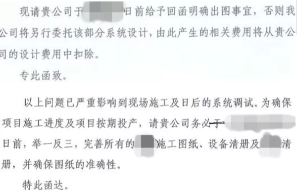
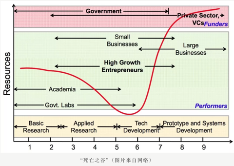
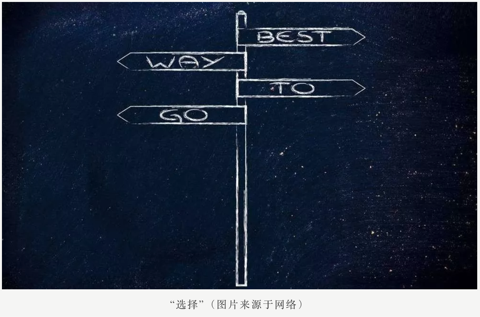
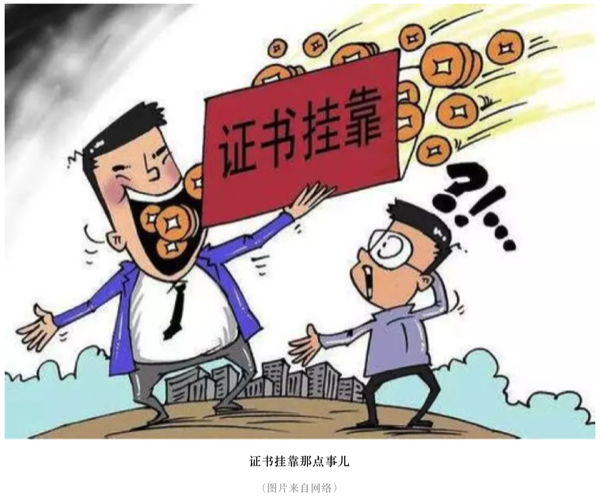

第6章 就业咨询
6.1 幻化残生
幻化残生，也就是环境、化学、材料跟生物这四大学科的近似谐音，都属于实验比例比较高的专业。这些专业的研究生生存现状都——并不乐观。
6.1.1 现状
首先，这四个学科属于建立在脑力劳动之上的体力劳动。例如前处理、过柱、表征、养细胞、涂板子、野外采样等等，流程性非常强，到时间点上不论节假日还是凌晨饭点都得待命；但有时又会发现这些工作找个本科生带上两天也能做出来。一个尴尬的事实是，实验学科一个重要研究方向就是取代人工操作实现流程自动化与便携化，当实验简单到轻轻一按时，研究生训练得到的技能瞬间贬值，更尴尬的是实现这个过程需要的背景知识是物理、机械跟电子工程而不是幻化残生，掌握某项实验技能短期可以使你取得不错的成果，但长期看几乎一定会过时。
其次，特别拼先进仪器/技术，进而导致平台建设重于人才培养。今年这个技术能发顶刊，明年就可能被取代了；有些特殊资源例如光源没有背景想约个机时难得要命，但如果不进行一些高开支实验可能编辑就直接拒稿；而先进仪器装备的价格往往奇高，所以从经济角度，这四个学科都属于很烧钱的。那么这里的尴尬就是，你的才能可能受限于仪器平台；而从研究机构角度看，投资仪器显然比投资人才培养在初期更有效果，而人才培养初期其实也就是仪器操作。这个没啥办法，现在很多科学问题的回答其实早就脱离了理论导向阶段，而是我有一个问题想回答，但目前技术回答不了，也就是假设早就有了，就等着新技术检验。你去看这些年诺奖，很多是技术获奖而不是理论获奖。也就是说，实验学科比起人才更需要仪器平台资源。

再次，这几个学科产业转化基本停留在前言里，毕业后除了年龄比同专业本科生大了不少，在满足业界要求上本质区别并不大，这进一步导致本应分流到业界服务社会的博士硕士继续留在学术界造纸，而想从学术界熬出头你看前人经验借鉴意义不大。很多人没考虑时代造就的红利窗口期而大谈特谈自己的奋斗，但要知道此一时彼一时，目前学术界的门槛比10年前高了很多，同样的奋斗强度10年前进高校很容易，现在可能去做博士后都没人要了。如果本科转行也就算了，但到了博士转行就真的是在奉献青春了，当然这可能是无法避免的。
6.1.2 前景
我们其实可以把做学术类比创业公司，博士学位前都是导师投天使轮，博士后相当于找风投，找到教职算是有投行介入吹喇叭，常任轨留下来才算上市。论文就像每年的财报，表现不好还可能停牌退市，当然不上市被收购做小老板也行，但那时候学术方向就会完全被大老板把持了。这个过程就是现状，目之所及很多人迷迷糊糊就上道了，而其中沉淀下来的所谓“人生赢家”却没有一个是迷糊的。这里我建议读下 Philip Guo 在斯坦福刚拿到博士学位后写的《The Ph.D. Grind》，虽然他是搞计算机科学的，但对幻化残生的研究生了解整体学术圈现状还是很有帮助的，很多观点也会有共鸣。

此外，我也可以给出一个基于估计的现状，如果成为院士（中国科学院／中国工程院）算达到学术巅峰的话，那么院士的选拔可以看作到达顶峰的路径。选拔方法是什么呢？两年一次，一次总共大概150人，工程科学对半分，平均一年75人。我们假定若干年后每年还是75人，且平均看每一年参与竞争的都是同年级的博士同学。而目前每年全国土鳖博士毕业生6万多人，算上海归，同一年龄组大概7万人应该比较合理。那么你看到了，你需要在同年级博士毕业生里成为千分之一的精英才算有希望。
这个似乎有点丧气，可能院士这个比较难搞，那么准院士的杰青呢？全国每年选拔200人为杰青，那么成功概率乐观估计是千分之三，杰青其实也很难了，我们再放宽到优青。全国每年选拔400人为优青，那么乐观估计成功几率大概是千分之五。我们大胆认为博士中有一半人毕业后不再从事科研工作，那么几率翻倍成为优青也要是百里挑一。即便是成为教授／研究员，我估计概率也是小于5%的，这个基数不是所有人，而是跟你同级的博士。

所以其实我挺理解很多劝博士毕业转行或毕业不做学术的看法的，那怕你手握博士学位，在国内想走到教授也是个p<0.05的事，大概20个人里有一个。考虑到一般博士同学同院系大概也就是20个人，如果学术水平不在前面，基本可以重新考虑下人生规划了，因为此时你选择科研就真的需要兴趣激发了，不然身边的落差会折磨你几十年。而且上面的估计有个严重的问题，那就是大量使用了均匀分布，但真实的情况却是极不均匀分布，你的师承关系跟毕业院校都会把这个分布搞得更加极端，而且后发者优势在科研里面非常常见。同时，目前教职数目趋稳，如果你没赶上窗口期大爆发，基本就是这个竞争强度了，只会更强不会更弱。具体到幻化残生这四个学科中的环境，虽然国家很重视，但在杰青或优青的名单中每年能分到多少个这都是一个巴掌数的过来的，各位可自行倒推下看看竞争强度。如果眼光放远些，其实别的学科的竞争压力也好不到哪去，但对于知识迭代比较快的幻化残生，很多压力与鸿沟可能你没毕业就已经出现了，更糟的是你毕了业才发现。

6.1.3 求索
这些现状经常搞得研究生自身怀疑人生，看着转行金融、咨询、IT的同学心有不甘；即便可以用学术理想充实的生活把自己隔离在实验室内，但走出实验室的柴米油盐变量太多，控制不来。同时，你又会很惊奇地发现，这些年报道的学术界年轻有为的青千、优青与各路人生赢家基本都是这四个学科的；而且从经费分配跟论文影响力上看，这四个学科也是超级大户；再从经济学角度去看，你会发现围绕这四个学科的仪器、耗材甚至样品测定跟论文润色服务都已经形成了成熟产业链，行业利润十分惊人。注意，这些产业是对科研进行支撑的而不是业界，如果只是这些行业高速发展而产业界没有起色，那事实上是在用纳税人的经费吹肥皂泡，不会长久。
这并不奇怪，实验学科的知识与技术更迭速度是非常快的，从走进实验室那一刻，你就会发现师兄师姐用的技术学校里根本就没教过或仅仅做了个展望，系统的学习基本上都被传帮带模式替换。如果你自己不去问为什么，大概率你师兄走的弯路你还得走一遍，你师姐画不出的图你也画不出来。更尴尬的是，有时候你会发现，如果你的想法是属于排列组合出来的，那么其实仪器公司完全可以替你做，他们不做并不是不会，而是等着收服务费，你发你的纸，我赚我的钱，各取所需。在这个场景下如果还没意识到自己的民工本质，那大概率是要做一辈子民工的。
曾经有人提过学术界存在生态位，大家各做各的相安无事，但这个想法现在看比较天真，因为现在竞争者基本都不是来自学科内，而是其他学科的入侵，如果这个问题你自己学科的人搞不定，别的学科就会过来。例如做材料的发现一种新材料，如果你觉得意义不大不掺合短期没啥问题，但做材料的表征完了得找应用出口啊，环境、生物、化学都有，技术有自己的生命力，总有人会转过去。你是无法约束某种研究只去关注自己学科内的问题的，事实上这可能是目前科学进步的一个范式：个别学科突破，带动其他学科发展。
基础学科对新技术的接受度要快于应用学科，一个常见的模式就是某个数学模型首先应用在物理领域，然后化学，然后生物，然后是边缘综合学科例如环境、医学，然后就是社会科学。当然也存在某些从应用角度出发的模型后来被应用到其他领域，金融与生命科学中经常出现这样的案例。但你应该发现一个问题，要想解决现在的问题，通常老路是不通的，要么回归基础学科，要么从别的学科借鉴，不论哪一种都需要你持续学习新知识，特别是外学科知识。有一个最简单的办法就是你去看看那些最聪明的人在用什么，然后想想能不能用到自己的学科框架里。

实验学科的发展有时候是很残酷的，初期势必牺牲掉一批掌握过时技术的研究生，这个国内外都很常见。通常国外业界会吸收一部分且通过较成熟的职业教育与培训体系来解决问题，国内则是依靠学术界大面积收留；这个问题的后果就是现在很多教授对于学生无力指导，看到概念就回来让研究生试，研究生自然苦不堪言，毕业后就业方向非常窄。但同样是实验学科，高能物理、生物统计的毕业生转行就相对容易些，因为可以去做码农，至少生活水平对得上学位。而很多实验学科的研究生对此并不感兴趣，甚至完全不懂，思想上停留在努力实验发论文拿教职的简单规划上，不喜欢接触社会就只接触仪器。这其实是最大的偷懒，科研是需要脑力持续投入的，如果是实验学科还要加上体力。不但要持续学习，还必须要主动学习，关心前沿，而这又与繁重的实验任务竞争着的研究生们的精力。在前沿知识的探索中没有固定的方法与理论，经验主义横行，也恰是前沿科研的魅力所在，混杂了无穷的乐趣与苦涩。
6.1.4 前沿
学科前沿是一个很模糊的东西，对幻化残生而言，教科书上的实验技术是一定落后于科研的，此时对学术前沿的感知往往要么来自文献，要么来自会议或培训，坦白说，这两个方法都具有很强的主观性，夹杂很多人的小算盘。好比你想在微信里打开淘宝链接，不是不行，就是要通过复制过程恶心你一把，但其实这种经验过程你也没啥办法。
除此之外，还有一个方法是各种文献信息学指标，例如H指数，被引率等等，但这些指标属于后验指标，你得至少等文章发表过去两三年才能开始评价，但这两三年中也会有一大把新趋势出现。另外一个方法就是自己当期刊编辑或审稿人，其实这个是很多教授的独门秘笈，因为你会比其他人早好几个月知道新研究的动向，但研究生拿到的审稿机会本来就少，高水平期刊更是不会找研究生审稿。所以其实对于很多研究生而言，想了解前沿跟他人的研究动向几乎不可能，而根据我的观察，如果同行坐到一起聊天你对新动向一无所知，那么对方也就不会在你身上浪费时间了。有些出版方跟研究机构也会发布一些热点文章，但多数基于编辑经验，并不一定准确。一个相对靠谱的方法是借鉴搜索引擎排序的思路，通过文本分析的角度从统计模型上探索趋势，这里并不是说那种通过词云这类描述性统计量，而是基于主题模型、时序分析等手段的探索分析，但手段其实是次要的，是服务你的问题的，如果问题没搞清楚，用什么都是错的。

其实，对于幻化残生的研究生而言，主动了解科研趋势只是一方面，了解你自己才是更重要的。当你觉得不好时，不要总是怪罪时代跟环境，也想想自己身上的问题；当你一帆风顺时，不要总觉得这是自己勤奋与努力的结晶而忘记了科研浪潮的背后推手。随波逐流不会过的太差，但放弃思考是绝难在学术界生存下来的，不要真的幻化残生了。
师兄只能帮你到这了，剩下的，我也没想明白。
本文首发于我的科学网博客（yufree），改编首发于环境黑板报。
作者：yufree 编辑：栟
6.2 在设计院工作是一种怎样的体验
6.2.1 毕业这几年，我都干嘛
自2013年6月毕业，我已踏入职场四年有余，最初的一年半在首钢鲁家山垃圾焚烧厂当技术员，想那时，真是躲在荒无人烟、连农田都看不到的山区，一心只想烧好中国人的垃圾。

后来因缘际会到了现在的设计单位，主业是垃圾焚烧发电厂的设计，在业内还算知名。虽然角色不同，但上手还算比较快。一晃三年过去了，在设计院忙忙碌碌的加班生活还是比较充实的，毕竟还算得上适合自己的工作。可能大家对我的工作了解不多，就让我给大家介绍一下。
6.2.2 我理解的设计院
设计院，不管叫咨询设计院还是设计研究院，其实本质上大约都可统称为画图院，虽然可能某些设计院可能会有一大批做前期，比如规划、可行性研究、环评等，可如果你敢称自己为设计院，我相信你的主业一定是画图的。不得不说，设计院这一称谓原本就有浓浓的社会主义经济的气息，虽然多数设计院早就走上自负盈亏的市场化道路，在许多设计院里仍然可能看到国企式办事准则的影子。
就说画图，作为设计狗的我，也不是什么都能画的出来的，我们的专长是画垃圾焚烧方面的管道，你让我画个房子，我是没有这个本事的，那是结构建筑专业的事；那你说让我把你屋里的暖气管，水龙头，淋浴头画下，我也只好尴尬的说，那是暖通和给排水专业的事，我也不会干。进行到当下的信息时代，多数行档的设计院已经发展到一个极其成熟的规范化状态，工作如流水线一般。
现在大的设计院的专业划分都极其细致，除了总工，其他人可能都是螺丝钉，可即使是总工甚至行业大拿，也不可能做到各个专业门门通，大家各司其职。有时候参加的一些项目，直至项目完工，可能项目组的成员都还没有认全呢。
6.2.3 设计工作不是一蹴而就的
作为普通的设计狗，每天的工作就是画图，但画图不能瞎画，得有依据，要满足客户的需求，需要审阅业主的任务书；如果你是配合专业，就需要接受上游专业的要求；同时，政府的相应文件（环评报告，能评报告，稳评报告，审批报告）和现场实地条件（地勘报告，工程场地自然环境，水土保持状态，场地供排水状况，电网接入条件）也对我们的设计起了约束性作用。像我们是机务专业，平时还要接触不同的设备厂家，不仅要向他们提自己的工艺要求，还要接收他们的要求，交流一定是双向而反复的。不同专业的侧重各有不同，但总归是在做一道优化题，可遗憾的是我们经常没有找到全局最优解，而只找到了局部最优解，在解题的过程中经常就是与时间赛跑，与各方交流甚至争吵中度过的。以下是我以前项目某一图册的截图。
如果蓝图完成，这个项目的工作就相当于告一段落了，当然也不是万事大吉的，业主也能再让另外的公司（项目地的相关企业，同行业的竞争对手）对我们的工作进行审查，发现问题还会要求修改完善。施工前主要的设计人员还要到工地现场进行交底，就是把自己的工作交待给相应的施工单位，解答他们的问题。下图就是在广州某项目拍到的现场施工场面，当天我向施工单位进行了交底。

施工过程中，出现问题，业主会要求监理单位出具工程联系单，我们就需要提出解决方案，并发出设计变更单；即使设计人员个人认为没有问题，但如果业主强行要求，许多情况也不得不出具设计变更。不能小看了这几片纸，只要出了变更单，施工单位就能用它向业主要求增加费用，许多施工单位甚至采用投标前低价竞标，中标实施时通过多出变更单盈利的工作方式来实施项目。
举某个例子吧，某施工单位做了一个4000万标价的项目，最后做下来亏损了300-400万，但通过变更增加费用，能多得1000万，最后才净赚了700多万。
到了工程快完工的时候，我们还需要根据变更的状况出最终的竣工图，也宣告这一番折腾终于结束了。但不要高兴得太早，因为领导是见不得我们闲着的，你还没长舒一口气，新的工作就来了。但更常见的情况是，你同时要面临几个项目，担任的角色即使各有不同，其中一个的结束并不能给你的工作带来太多变化。
6.2.4 我对设计工作现状的理解
现在设计这一行的确也是越来越难做，钞票也越来越难赚。原因有很多，有内部的也有外部的，我个人认为更多来源于外部，环境的变迁远比设计院自己内部的变化来得剧烈。
首先，投标报价阶段设计费压低得太厉害。设计院是每个工程必须的单位，但许多业主是看不起设计院，主要原因是现在许多同仁把整个环境搞坏了，相互压价，却不重视设计自身能力和效率的提升，只能让基层人员通过加班或用一些新人来练手来填平这一亏空，效果当然不乐观了。
其次，业主一直在学习，在进步。业主也加强了专业的学习，一直在向前迈进，甚至大量招揽有设计背景的人才，如果你某天从微信朋友圈上看前同事说自己换到业主单位上班了，你千万不要奇怪，这也使得设计院在工作上的智力或信息优势在许多行业都不复存在。
第三，业主要求越来越高。从时间上来讲，要求今天的事今天就办，不然就扣钱或都让你直接来现场处理。虽然大家对此颇有怨言，但只要是想在这行干的，都还是想自己的单位能多揽活，毕竟，大家无活儿的时候，也就是树倒猢狲散的一天。下面是某业主给我们单位发的两份函件的截图，有没有感觉业主的杀气腾腾呢？

第四，设计需整合多个功能。从技术角度，现在许多工程不仅仅只是一个工程，尤其是我们做垃圾焚烧厂的，本身就有教育和参观功能，把一个工业化的建筑变成了一件工艺品来雕琢，这就给我们的工作带来了新的挑战，你原来只是个画平面或立面图的，工程经验丰富却无艺术家的气质，但现在你得有，这会让你们的设计更具优势。下面的主厂房是我们公司在宁波的一个项目，外立面做的非常漂亮。其中上面两幅图为鸟瞰效果图，下面一幅图为施工完成后的实景图。两者效果还是很接近的，但美中不足的是部分区域的灯光有色差，留下一点遗憾。

第五，设计师责任意识增强了。有设计师就因为错误的设计受到了刑法的制裁（举例如近一段时间在工程师微信朋友圈里热议的合肥公交站倒塌事故，相关的设计负责人就被刑拘了，虽然网上为她鸣冤叫屈的同仁不少，可说到底即使是主要责任不在设计方，连带责任也是逃不掉的），这点毋庸置疑，如果没有责任意识，做出来的工程质量实在没有办法保证。如果自己都不敢在自己的设计上签上自己的大名，估计谁去施工、运营都不会太放心。
6.2.5 我理解的设计院未来
近年来设计院招人呈现两极化趋势，新毕业学生进单位普遍比较难，要么要求名校，学历，要么就是得走关系，提前实习；但设计院想要的人多是能力强，经验丰富，能迅速上手干工作的人，这种的招揽并不是那么容易的。一些大院经常开出很好的收入，但经常也招不到合适的人，许多单位人员流动性也很频繁，甚至影响了工作质量。
年轻人做几年设计一步一步向上爬，做得好做升为专业负责人，接着是项目负责人，再往下只能惦记下所长，所总工的位置。但一个设计院少则三四十人，多则百人千人，领导就那么一点比例，也是很困难的。而多数设计院除了少数大院，许多是扁平化管理，上升的阶层并没有那么多，你会经常看到自己的领导背个书包去出差，亦或是晚上熬夜出方案，更加能感觉领导不过是能管人的设计罢了。工作到退休的时候，许多老同志会愿意返聘回单位，给年轻人做做指导，忙得时间太多了，反倒闲不下。给人的感觉，设计院不似计划经济时期那么让人能安稳地做设计了，但如果你想做得好，有一份沉静稳重的心态是非常重要的，毕竟这个是需要你勤加思考的工作。
现在许多设计院也在转型，某个知名钢铁的设计院甚至想触及养鸡厂的设计，大家别笑，最后的结果是他们发现自己可能真做不了。垃圾焚烧行业不是现在很红火嘛，许多设计院也想分一杯羹，动手早的还有希望，动手晚的只能看别人摘葡萄了。设计行档是遵从经验和历史的，规范大家都有，但照本宣科就能做好设计是不可能的。这也使得设计行业具有一点投机的味道，做得早就奠定了在这个行业的优势，近来，PPP模式、海绵城市、综合管廊在市场上叫得很火，各个设计院也具此拨出人来进行相应调研，积极参与新形势下工程项目的设计工作，积极拓展业务。
路不能越走越窄，学会与时俱进方是生存之道，权当以此为结语，若是你需要设计垃圾焚烧厂，记得联系我，尽管我只负责摆设备和画管道。
作者：小祁 校稿：看透，胜利屯屯长 编辑：智公子
6.3 科研与钱
上学的时候还是很单纯的，真的以为做科研就是做科研，以为这就是象牙塔，虽然也会帮老板们写项目申请书，毕竟感受不到实打实的项目压力。反而是在毕业后，跟组里老师还有清华的老师一起共事的过程中，能够感受到他们对于科研经费争取的压力，没钱还怎么做科研。现在回头看看，当年老板们还是为我们能好好在这里学习科研付出了很大的努力，每年课题组的人头费都是不小的压力，所以现在还在读书的师弟师妹们，珍惜最后的几年时光吧。
——爱杯子的王小咖
6.3.1 先说说科研经费
经费是搞科研永远也绕不开的话题，就像上面所说的，没有钱，如何开展实验呢?其实仔细想一下，钱这个东西，放到社会哪一行都不会是个可以轻松处理的问题。
科研经费来源，不过是纵、横两项，可惜的是这里的纵横可没有纵横捭阖的潇洒。纵向经费就是来自国家的课题，且不谈后面花钱的时候各种限制、各种审查，申请的时候对内容和形式的要求也不亚于当年的八股取士。横向经费就是来源于企业的项目，比如说第三方检测、技术转化等。这个钱花起来就方便多了，因为服务对象是企业，有明确的任务性，企业要的只是你能达到当初许诺的要求，至于合同里面钱怎么花，它们是不care的。
纵向课题的钱虽然难花，一般的项目钱也不多，但是否主持过纵向课题常常会和科研人员的职称评定息息相关，职称又对应着待遇和名声;横向课题的钱虽然好花，但是通常只是解决问题，研究的深度方面一般很难出很好的成果。这时候不禁有好事者要问了，难道就不能在解决实际问题的时候发现研究的价值，然后在深入研究的时候出国家级、世界级的成果，最后又能应用指导于实践呢?恩，有当然是有的，不是还有句诗叫“不负如来不负卿”嘛，有几个人能做到?
6.3.2 国家鼓励科研人员创业
当国家出台这个政策的时候，下面的发声是不同的。比如说施一公就曾说过我们目前欠缺的并不是技术转化，而是我们的技术根本达不到转化的程度，同时，科研人员去创业其实也并不明智。而高晓松也曾在节目说，名校是镇国重器，培养的人才不应该只局限在找一个好的工作，要有更大的胸襟。这满满的鸡汤，当然对，也未必都对。成功的路无法复制，大佬们的话，听听就好，太当真你就输了。
认可的一面，搞研究都是有科学与工程之分的，你让搞理论研究的一群人跑去拉横向，搞转化，这本来就是强人所难。同时，科学家应当有一点担当和骨头，因为科学家毕竟不是政客也不是商人。科学家应该是什么样子呢?我研究生室友(一个读博期间发了七八篇IF>5的文章，写《纳米非米》的那位)曾跟我说过一个故事，他参加过的一次毕业答辩，请了一位老先生，老先生来的时候，抱着那天要答辩的几个人的纸质版毕业论文，颤颤巍巍地说，这几位的我已经看完了，需要修改的都在上面做了标注，还有几份我实在看不过来了，跟你们先说一下。
汗颜吗?我所经历的几次答辩就好像小孩子在过家家，达到毕业要求，大家按照流程行事，最后皆大欢喜。这个世界，你当然可以有一套自己钻研出来的规律在里面游刃有余，但这并不是世界需要价值统一的地方。毕竟“文章千古事，得失寸心知”。我当然也知道长袖善舞的人在哪个行当都不会混的太差，但问题就在于，这个世界的诱惑实在太多，一旦你走向聚光灯下舞起了长袖，是否还能记得住自己最开始的一些想法。而更大的危机是，很多的科研人员从最开始就不知道自己的想法，他们贪图的不过是科研圈的安逸。
因此就要看到刚刚那些鸡汤不适合的一面。那就是目前中国科研背后的现状：转化难产。虽然很多的工程研究标榜了各种各样的创新，也发了一堆的SCI，但其实，这些论文的最大贡献不过是推动了造纸事业的发展。碳纳米管的确高大上，但几个人用的起?电辐射、电氧化处理废水确实干净，几个水厂能这样干?唉，更不要说还有一群玩概念科学的人了。从这个角度来讲，国家所期望的不过是拨乱反正。毕竟，我们距离把科学技术转化为生产力还有很远的距离。
所以说还打着我们科研圈子就要不食人间烟火的口号就显得不合时宜了。因为我们不仅没有好的基础研究可以转化，我们甚至都没有往这个方面去想。再者“鼓励”你去，并不是说，“逼迫”你去。想不想和行不行总是人，尤其是男人要面对的大问题。
6.3.3 横向的去向
我并不认可大家对科学家的想法，要么是傻子要么是疯子，人足够专情的时候，都很傻，足够坚定的时候，都很疯。我更不认可一个社会观念，就是搞科研的人就应该甘于清贫。他可以选择清贫度日，但你不能认为这是理所当然。因此，我是主张把那些“镇国重器”啥的都收一收，能做横向就做一些。一旦一个人可以实现财富自由和时间自由，他的思绪是可以飞翔的，毕竟贫穷限制了我们的想象嘛，而科研人员很需要这个。
这时候，就需要去辨明一个问题，一个东西到底是手段还是目的?比如说，斗争。斗争是为了作为一个手段，让整体有一个更好的发展;还是作为目的，去清除掉意见不合的人?纵看古今，横看中外，搞不清这个问题的，最后都只是倒历史的车轮。同样，搞横向赚钱，究竟是作为一个手段，还是一个目的?尤其是改善了自己的生活，可以自由探索以后。
这就涉及到一个价值取向问题了，看你认可的东西。你当年选择了搞科研，就应该知道自己的收入和金融、IT行业差的不是一个级别。可是你总不能拿自己的短处去跟别人的长处比吧，尤其你对象天天叨叨你的时候。这个时候，情怀和价值观就显得非常重要了，简直就是精神吗啡。
突然一天，你横向做起来了，你成暴发户了，你土豪了，你……还能记起科研的初衷在于探索未知世界的乐趣吗?如果不能理解这个问题，你就该知道，你把做横向的情商拿去搞金融，你早就和马云、健林一起指点江山了，是科研拖了你后腿。
于是又有好事者问，站长你现在科研到什么地步了?恩，隔壁工头又叫了，先回去搬砖了。
作者：广播站王站长 编辑：竹而乐
6.4 科研的视野天梯
现在科研细分领域实在太多太细，训练出的科研人员往往搞不清科研领域的整体状况，在研究背景或导论里胡扯的情况简直不要太多。大家都要吃饭，强调自己研究的重要性无可厚非，但是面对公众或其他领域科研人员单方面强调自己的研究其实是某种程度的欺诈。对一个学科在科研总体中的量化是很有必要的，搞清楚视野研究定位才会准确，在这里分享下自己的经验。
虽然很多人批评文章数量不代表学科热度，但我觉得起码每篇论文都在解决一个科学问题，所以这里的比较就统一用文章数量。为了进一步简化评价，我们这里就用 PubMed 数据库作为例子，也就是说探索的是生物医药领域内不同研究领域的发展状况。方法也极为简单，就是关键词搜索。下面这个过程大家可以自行验证，其实用 web of science 更合理，但考虑到需要有对应权限我就不展示了，可自行探索。
首先先分析下具体的人。我自己追踪的学科内紧密相关研究一年发文量不超过100，也就是一个周一两篇的样子。这个知识更新频率应该是比较符合科研人员个体信息处理能力的。如果你关注的领域非常热，发文量很高，那么大概率你也会自主把文献查新的量通过关键词叠加来缩小到一周一两篇，一季度甚至一年出现一小领域综述的状态。而且这个量我觉得对大多数科研人员还是超载了，很多研究人员的课题非常精细，一年内同行发文量个位数，全世界也就几个课题组在做，那么此时应适当眼界放宽些，否则你的研究会被视野限制住。
当一个关键词年同行发文数量超过一百时，围绕这个关键词的全国性年会就会召开，也可能会拥有自己的专业期刊与学会，小型国际会议也可以组建了，例如纳米毒理学或持久性有机污染物。这个状态下的学科要么快速发展，要么快速衰退，全球相关课题组数量不会超过三位数，这类学科一年内如果频繁登上CNS，那么很可能进入指数增长期，但如果一年内一篇都没有，那消退也很快。如果低于这个量，那么关键词对应研究组可能还从属于某个大学科，属于大课题下的边缘课题，绝大多数退学的博士生都是挂在这类几乎看不到发展希望的项目上了。顺带一提，国内的杰青级评选的候选人至少要在国内是这个量级领域下的数一数二的人物，这样的领域整体看大概1000个左右。
当年同行发文量超过两千时，千人级国际性会议就能开，开的不错，行业内会出现多份期刊来吸纳不同层次的论文。而且我观察超过一千后的研究领域很少有萎缩的，但这是第一个停滞点，很多领域的规模上限就是两千。从人才角度看，国内在这个量级上数一数二的人物都是院士级的。这样的关键词例如纳米银、生物医药里的深度学习，这个量级如果能保持增长，那绝对会是学科热点，估计对应从业人员超过一万了，这类学科基本都有产业化的课题做支撑了。
年同行发文量在两千到一万的学科是非常多的，这是通常意义上的科研 IP 例如代谢组学、精准医疗。这类研究你应该能从公众报道到听到了，全球有四位数的课题组，基本每所综合类大学都有至少一个人在从事相关研究。国家重点实验室基本都是在这个量级上构建的，企业也会有研发团队，且这个量级的实际需求已经有行业级支撑。
超过一万的关键词都可以称得上前沿或热点学科并且已经有能力渗透到其他学科了，例如纳米颗粒、基因组学、分析化学、睡眠、衰老等。每天科技新闻都会有相关报道，是CNS的常客。相关创业公司会受到科技类风投的重点关注。然而这里会遇到第二个停滞点，实际上这个量级的研究已经是此消彼长的发文量了，相互之间会有学科级资源分配问题，在国家层面会出政策来扶植这个量级学科的成长，当然如果财政有限，拿来支持的资源必然是其他学科抽的。这个级别是可能萎缩的，例如同位素研究在上世纪六七十年代曾经超过一万，但现在稳定在四五千的体量，这就是撞了停滞点了。
然而，还有一些顶级 IP 。生物医药科研里的顶级 IP 是细胞，最近三年年发文量稳定在不到27万的样子。然后是癌症，这个关键词最近三年基本稳定在17万。研究血液的在15年达到顶峰，发文量14万。脑类相关研究在17年见顶，不到8万的发文量。另一种热点疾病的是心脑血管疾病，在16年达到顶峰，大概不到7万的年发文量。有两点体会：
顶级IP一般要年发文量超过5万，但似乎不会超过30万。很多顶级IP在14年之后停止了增长，或者稳定，或者干脆下降。这些顶级 IP 而且几乎每一个都有一堆下属子学科，子学科的国际会议都能达到几千人级别。这些关键词几乎都配备国家实验室或研究所，数量每个国家也就十几个。这类学科已经不是渗透其他学科发展了，更多是引导性发展，这个领域出现的方法学进步会直接超越其他领域，也能吸引到很多超精英，带动整体进步。诺奖应该就是这个量级关键词上的进步的后果。
不过顶级 IP 在14年后的相对停滞是个值得关注的现象，我怀疑单一关键词存在一个体系上的发文上限，可能是经费、可能是人口、可能是整体教育水平、可能是技术限制、可能是资源相对竞争、也可能是难度。总之，数据就在那里，值得思考的东西很多。
这里我简单分个级（按幽游白书的分级方法）：
S级 年同行发文量超过5万的关键词领域，疑似有停滞点
A级 年同行发文量1万到5万的关键词领域，有停滞点
B级 年同行发文量2千到1万的关键词领域，有停滞点
C级 年同行发文量100到2千的关键词领域
D级及以下 年同行发文量100以下的关键词领域
这个应该就是科研人员的视野天梯系统了，研究在D级，关注到C级的研究动态，参与B级领域的会议，蹭A级的热点，然后远远看下S级开心就好。通过这种简单但可能不靠谱的分析，科研人员应该可以实现一个对自己的清楚定位，然后合理规划自己的视野，防止见树木不见森林，也防止迷失在过大的森林里。
校稿：广播站王站长 编辑：天枫
6.5 中文学术和研究生教育
6.5.1 前言
我本科就读于环境科学专业，硕士考进去的时候也是环境科学，但是毕业时却阴差阳错地变成了分析化学专业。毕业后的第一份工作又进入水利行业，如今却成了一名期刊编辑。我的专业跨度虽然看起来很大，但其实始终没有离开“环境”这个大专业。我的分析化学是环境分析化学，在水利行业也是从事水质检测，如今编辑的也是环境类的学术期刊。个人的一些琐碎经历暂且不说，作为过来人，我想从一个编辑的角度来谈一谈目前硕士生培养中可能存在的问题。当然，我的看法也许非常片面，对于很大一部分人来说，可能是班门弄斧或者是老生常谈，献丑了。
很荣幸，本科和硕士阶段遇上了两位非常负责的导师，时至今日，他们的指导还让我感到受益匪浅。本科的导师曾对我们说，一名硕士生只是刚刚踏入学术的门槛，所以对其的要求应不同于博士，首先是应该让其了解如何做学术，而不是研究的有多深入。
众所周知，国内绝大部分高校硕士毕业的硬性要求是发表1篇国内核心期刊论文（个别学校不做要求或要求更高这里不作讨论）。从我们杂志社的稿件来看，我发现很多硕士生（当然也不乏第一作者是博士甚至是教授副教授）撰写的学术论文中存在一些非常普遍的问题，这很值得拿出来和大家探讨一下。
总体感觉，很多导师并没有尽心尽责地指导一名硕士生。我猜测原因可能是多数导师对于中文文章不够重视，因此不是很负责任，发中文文章只是为了让学生能够满足毕业条件。导师尚且如此，更不要说学生们了。而对于部分有追求的学生，虽然“师父领进门，修行靠个人”，但是师父连门都不领进的话，除个别天才外恐怕是很难自己完成修行的。这也是为什么国内中文学术期刊面临着稿源质量堪忧的问题。

6.5.2 那么为什么我会有这种感觉？我看到的这些文章到底存在什么样问题呢？
第一，写作目的并不明确。
学术论文的目的本应该是把自己最新的研究成果公诸于世，与同行交流，不断地推进该领域的研究进步。但是，现在可能目的仅仅是为完成毕业要求或者职称需求，这其实是舍本求形。
仅以环境实验科学为例，从选题到实验设计到数据处理与分析，最后撰写论文，经过同行评价，公开发表，是为学术研究的一般过程。那么，这个过程是否已经了解，从他的论文中基本可见一斑。一篇中文学术论文，通常包含标题、摘要、关键词、引言、材料与方法、结果与讨论、结论和参考文献。很大一部分硕士生毕业了可能都不知道为什么要写这些要素。所以我觉得，硕士生导师首先应该指导硕士生将这几个要素弄清楚，明确每一个部分分别是什么目的。这些如果指导清楚了，其实学术研究的整个过程也就指导清楚了。

科学研究的第一步是发现问题和提出问题。因此，文献调研在科学研究的过程中必不可少，在前人研究的基础上找到研究意义与当前热点，在热点中发现需要进一步解决的问题。发现问题后，进行实验设计和验证，具体来讲，实验的整体思路是否合理；变量控制是否得当；以及实验过程中容易出现操作失误的细节等对于一个训练时间不长的硕士生来说都是一道道需要跨过的门槛。这就需要导师给予必要的指导和指正，指导和指正的过程其实就是从理论到实践跨越的过程。如果缺乏必要的指导就会出现做完实验不知道为什么做；做的过程中不知道实验的风险点在哪里；做完实验也依旧茫茫然不知所措，这其实很难进入科学研究的大门。实验完成后就是数据资料的整理、分析以及学术论文的写作。数据的处理会涉及到软件的使用或者方法的开发，这些可能是一个师门里代代相传的东西，虽然软件和方法可以依靠师兄师姐们口口相传，但是当年创制这些方法时灵光乍现的想法以及方法学背后体现的原理和思想其实更应该是一个导师传承给学生的。

第二，逻辑常识存在问题。 这其实涉及了从小学到研究生阶段学习过的方方面面的知识。有时，看似都知道的东西，在学术论文的写作过程中也会出现各种可笑的问题。如果导师在硕士研究生写作过程中认真负责的指出这些早已学过的知识和问题，就能使他们的认知产生飞跃，而不至于出现一些啼笑皆非的低级错误。
第三，语言表达能力欠佳。
许多研究生论文写作的语言组织千篇一律，讨论分析阶段的阐述能力还停留在高中语文水平甚至还有退步。一个受过十几年高等教育的学生进入社会后，居然连一篇本专业的科普文章都写不出来，这不能不引起我们对平时论文写作的思考！
中文期刊的学术水平是否应该提高，是否应该与国外期刊去比较和竞争，这里我不做讨论。我想强调的是，在语言便利的情况下，中文期刊至少应该成为硕士研究生科学研究训练的基本阵地，起码起到通道的作用将他们引入科学研究之路，这就需要导师正确看待中文期刊，摆正对研究生培养的心态。
6.5.3 那么学术论文到底该怎么写呢？
如果前面这些工作都能很好地完成，暂且不去考虑创新性有多少的问题，仅从学术论文写作的角度来考虑，论文该怎么写呢？其实很简单，把论文的各个要素像流水账一样写下来就可以了。
引言阐述清楚相关领域的最新研究进展，发现问题，提出自己的设想；
材料与方法讲清楚作者自己的研究方法；
结果和讨论，其实就是对所获得的数据资料进行分析、提炼和总结。
值得注意的是引言与讨论的写作逻辑是相反的，引言是从大放小，从研究重要性讨论到具体做什么，而讨论则是从小到大，从具体实验结果到对学科共同体的贡献。这样基本就把学术论文的逻辑结构和顺序问题解决了。
作为一名中文学术期刊的编辑，我可以接受中文文章的深度和创新性略逊色于英文论文，或许英文的传播力可能更为广泛。但是对于中文文章的写作、思路和目的应该完全与语言是没有关系的。不管是导师还是学生，如果中文文章的每个要素的目的不明确，那么只能说明你根本没有跨入学术研究这个门槛。如果是因为态度的问题，那么不管你外文文章写得有多好，学术造诣有多么高，我想这其实也是件蛮可怕的事情。
此外，英文期刊内其实也存在鄙视链，期刊分区与影响因子对投稿人也有很不好的引导。有时候会出现分区靠后或影响因子较低的期刊无人问津，甚至有些有缺陷的论文投不了所谓顶级期刊就全投到这类期刊了。但问题在于，错误的实验设计与跑偏的科学问题无论放到哪里都不会有人重视，条理清晰的论文总是容易受到关注。研究生阶段不应该在文章质量与期刊影响力上产生理所当然的联系，毕业压力不会跟你一辈子，但你发表的论文上总是有名字的，如果存在显而易见的缺陷，说不定哪天就在新语丝上被方舟子曝光了。
总之，不论做什么吧，态度很重要。
作者：伯腾 校稿：yufree, 大石 编辑：智公子
6.6 基层环境行政执法工作简介
通常来说，生态环境保护领域的法律、法规、标准一般都由“县级以上人民政府环境保护主管部门”监督落实，而县（区）一级的环境保护部门，是生态环境保护工作中各项法律、法规、标准的“执行者”，在整个生态环境保护工作中扮演着最重要的角色。一般而言，县（区）环保部门主要由局机关及下属的环境执法机构、环境监测机构组成，如果用人体的某部分来形象说明其中的关系，那么局机关可以算是人体的“神经中枢”，执法机构则可以看成“牙齿”，而监测机构就成了雪亮的“眼睛”。本文结合笔者对环境执法工作的实际了解，着重介绍一下县（区）一级的基层环境行政执法情况。
6.6.1 1.执法队伍组成情况
县（区）环境行政处罚权一般由县（区）环保局委托给下属的环境监察大队行使，在需要监测的时候监测站也会派人配合。各地的监察大队人数、年龄结构、专业背景不尽相同：人员数量组成上，有的仅有2到3人，有的多达20到30人；年龄组成上，有马上就要退休的“老环保”，也有刚刚大学毕业的年轻人；专业构成上，环保类专业的有，生物、林业、化学等相近专业的有，法律、历史等专业的也不少。随着国家对生态环境的重视，加快推进执法队伍建设将是未来各区县重点工作之一。
6.6.2 2.执法队伍的主要工作
县（区）环境行政执法机构的工作繁多，其中主要工作一般包括处理各类投诉、处罚环境违法行为，同时还可能承担应急处置等职能（地市以上的环保部门一般有专门的环境应急机构，县（区）一般都由监察大队兼职）。
6.6.2.1 2.1 投诉处理

目前，常见的环境污染投诉方式包括：电话（12369专线、各类公开电话）、网站（各级各类政府网站专栏）、微信、微博以及传统的来信等，这些投诉最终都会按程序转给监察大队去处理。引发环境污染投诉的原因有很多种，可能是在家里闻到了臭味，可能是在河边散步看见了污水流到了河里，也可能是半夜睡觉时旁边工地还在浇筑混凝土……不同的投诉就会有不同的诉求，可能是要求不打扰自己的正常生活，也可能是要求工厂搬迁，或者是要求给予赔偿，等等。
接到投诉处理任务后，执法人员必须到被投诉单位现场调查、了解。那是不是执法人员开个执法车、穿套执法制服就能如天神降临一般突然出现在违法企业、抓他们排污现行呢？NO,NO,NO，很有可能你连人家大门都进不去！看门的大爷会说“我不认识字，你们是干什么的？”“有没有预约？”“老板说了，他不出来接，我们就不能开门”……最经典的是当你问员工老板的电话时，他们的统一回答是：“我不知道，我昨天才来上班的。”就算进到了厂区，你可能看见的是废气、废水这些污染防治设施全部都在运行、固废也按要求堆放、台账记录也很规范等等。但是，有可能你的脚下就埋得有一根暗管、有可能你没有来的时候他们设施完全没有开、也有可能危废台账存在造假…….那怎么办呢？可以仔细检查各类档案、台账。具体来讲，执法人员进入厂区后，需要对企业的环评手续、排污许可、污染治理设施等方面进行全方位的检查，执法人员需要携带影像设备、测距仪、流量计、勤务随录机、便携式打印机、环境执法管理及移动执法系统、标准采样设备等必须设备和仪器。如果有需要，还会核查电费单据、水费单据、生产记录等资料。当然也有可能会沿着管网撬开每一个井盖进行摸排，以查清投诉是否属实，这些 “下河”“翻围墙”“钢钎撬下水道井盖”的绝技向来都是“传男不传女的”！

6.6.2.2 2.2行政执法
如果执法人员在处理投诉或者日常监管过程中，发现被投诉企业或个人确实存在环境违法行为，那就得固定证据，严格依照法定程序对违法企事业单位或个人进行立案查处，并责令其改正环境违法行为。
但是，环境行政查处并不是直接在现场就开具罚单，需要严格履行一整套行政处罚程序，既要保证实体合法，又要保证程序合法。以企业超标排放污染物为例，环境行政处罚一般流程包括以下几个步骤：第一步案件立案，若已有证据（比如监测报告）能表明涉案企业涉嫌环境违法，经审核符合立案条件后就可以立案。第二步调查取证，制作调查询问笔录，了解企业基本情况、生产工艺、产排污环节、当天采样情况以及超标原因等，同时收集企业营业执照、环评批复、排污许可证以及陈述申辩材料等佐证材料。第三步责令改正，根据法律法规要求，对环境违法行为进行处罚的同时必须要责令企业改正环境违法行为。第四步处罚告知，行政处罚做出前要保障企业享有的陈述申辩、举行听证的权力，且不能因为企业提出了申辩或者听证而加重对企业的处罚。第五步决定处罚，经过集体研究后向企业下达处罚决定书，同时告知企业享有行政复议和行政诉讼的权力（即企业若不服本次处罚决定，可以在60天之内向上级环保部门或本级人民政府提起行政复议，也可以在六个月内直接向人民法院提起行政诉讼）。第六步处罚履行：没有异议的，企业直接改正违法行为，缴纳罚款；有异议的，企业提起行政复议，由复议受理机关裁定，或者是企业直接向人民法院提起行政诉讼，由法院判决；如果企业在法定期限内既不提出复议也不提起诉讼的，由环境执法机构提交人民法院申请强制执行。第七步案件结案：自觉缴纳罚款、法院判决生效或者提交人民法院强制执行后，本次行政处罚就完成结案。

6.6.2.3 2.3环境应急
投诉处理和行政查处属于环境监察大队的日常工作，除此之外，还可能会遇到企业起火、油罐运输车侧翻或重污染天气等突发情况，这些情况往往是突然发生、高度被关注、急需稳妥处置。接到此类事件报告后，第一要务是应急处置、减少人员财产损失。以火灾为例，要第一时间拦截消防废水，防止消防废水携带油污等污染物进入外环境，且需同步开展应急监测，为接下来的应急处置提供一手数据；第二是要及时向本级政府和上级环保部门上报突发环境事件应急信息，包括事发企业名称、行业、事件起因、目前态势、人员财产损失等情况，供应急处置决策参考；第三是要采取合适的方式通报周边可能受影响的人，必要时还要考虑进行人群疏散。当事态基本得到控制，环境污染得到基本消除后，应急现场处置工作暂时告一段落。

现场处置结束后，还有后续工作要开展：一是要做损害评估，就是要找第三方机构来评估突发环境事件造成了的经济损失，包括直接经济损失和间接经济损失；二是损害赔偿，比如说某个运输硫酸的罐车翻到池塘里面后因硫酸泄漏导致鱼死亡，该运输公司要依法赔偿池塘主的经济损失；三是调查追责，还是以拉硫酸的车翻进池塘为例，要调查交通管理部门危险货物运输许可发放情况、安监部门对危险化学品监管情况、环保部门对运输公司应急预案备案情况等…
6.6.3 3.结语
投诉处理、行政查处以及环境应急，只是基层环境行政执法工作中的一部分；而执法工作也仅仅是基层环保部门众多工作的一部分而已。生态环境保护工作是一个复杂、复合的事物，既涉及自然科学，又涉及经济分析，还涉及社会管理。单单靠环保部门去做远远不够，需要靠全社会的共同参与，才能真正把环保工作做好。希望大家能共同努力，从点滴做起、从小事出发，各部门能更好的履行环境保护监管责任，企业能更加严格地执行国家环境保护制度，公众更大程度的参与环境保护，那么“天更蓝、水更清、地更绿”的美好生态环境目标也将实现并能更好的持续。
作者：小小小屁孩儿 校稿：看透，胜利屯屯长 编辑：丫头晚安
6.7 去国外做科研？先了解下环境吧
6.7.1 引子
出国工作已经快两年了，时间过得真快！这近两年来，先后在捷克共和国和澳大利亚做科研工作，一方面为项目不停忙碌，一方面在想着怎么出成果、发文章、以及下一步如何发展。在国外（这里的国外主指西方发达国家，下同）做科研的近两年中，感觉研究硬件（仪器设备、分析平台）和软件（时间管理、学术交流）上和国内还是有所区别。硬件方面，国内许多地方平台已超国外，但似乎利用率不高，而且对仪器维护管理不够重视。软件方面，国外较国内更重视时间管理和学术交流，但做事情速度不及国内。
本文主要讲讲国外科研的时间管理观念。

6.7.2 长期工作计划
在西方国家，科研工作者非常重视计划。
我所在的科研组里，年初都会将未来一年需要做的主要事情逐月列出来。研究组长给我们看了他的计划表，哪个月份开会，哪个月份矿山试验，哪个月份项目总结等都很清晰。在组长的建议下，我在1月份花了一天的时间做计划，根据实际情况，清晰列出每个月需要完成的任务。当然，我既要完成项目要求，又要把握基础科研问题，比如就微生物与矿物作用机理方面展开若干研究，尽可能详细可行。后来组长也将我的计划与他的计划综合起来，进行规划。
这个计划虽然比较宏观，但至少，当做完逐月的计划单时心情是愉悦的，因为在这个过程中对未来12个月的使用有了一个纲领性的思考。当然，有人会说，“计划赶不上变化”，事实很多时候也是这样。但有了一个大概的表，会不至于因迷茫而浪费时间，因为当松懈下来的时候，这些表会告诉自己该做什么了。
记得在国内做学生的时候，每年也会做个计划，但都是非常笼统的计划，当任务一样交给导师了。所以时间利用不够合理，在年底的时候往往非常忙碌，加班加点到通宵工作的事情时有发生。
6.7.3 短期工作计划
西方国家一个很大的特点是做任何一件事情都需要提前预约。
如果开展一个实验，一般需要提前好几个月去准备，比如一个小小盆栽实验，尾矿准备，植物种子育苗，营养液准备，温室台面使用预约，还有安全培训（澳洲做什么都需要安全培训（INDUCION）。比如需要用到温室，就需要提前预约，然后有专人讲解这个温室的构造，需要注意的安全和环保事项等）。
很多培训都需要至少提前两个星期去准备。因为这些都涉及到与人打交道，需要预约时间。我们试验的尾矿，都得从澳洲某矿山运回来，在特定仓库中心储藏，有专人管理，如果需要取用，就提前联系负责人，然后约车过去取。在取之前需要做仓库中心的安全培训（要去现场接受安全培训，通过之后方可进入仓储区域）。
试验药品订购很慢，源于较慢的快递速度，西方人力成本高，快递速度简直“蜗牛”，这与国内差别甚大。我之前订购了些铁化合物（硝酸铁、氯化铁、硫酸亚铁之类），足足等了三个月才收到。这个在国内读书的时候是很少出现的，记得在国内读博士期间，我们有时候“很任性”，比如临近做实验了，突然发现缺这个少那个，然后一个电话打给供应商，让尽快送来，很多时候普通药品当天就送来了，这在澳洲和欧洲一些国家几乎是不可能的。
去年刚来昆大工作的时候，因为可能做一些分子实验，用到另一个研究中心的实验室，所以需要做那边的培训。由于那个实验室经常会处理一些废水（包含医学废水），所以要求试验者必须已接种上一些必要的疫苗（比如乙肝疫苗）。可惜我以前接种的疫苗未达要求，于是费了好多周折，终于在培训计划开始后第10个月的时候接上了所需要的疫苗。但以前已做完的培训此时又需要更新，所以直到现在也没能够通过安全培训。幸运的是有几个同事和学生可以帮忙在那个实验室做一些分析。
所以，在国外工作，一定要提前计划好，如果没有注意这一点，效率可能会非常低。

6.7.4 时间利用观念
在博士期间，很多时候都是起早贪黑，所谓“科研狗”，起得比鸡早，睡得比狗晚。我也见到不少“夜猫子”（包括我自己），这些人在白天工作时间，谈笑风生或是被各种电脑网页里弹跳出来的新闻所吸引。等到夜深了，回顾一天的生活会有一种惭愧感，于是开始奋发工作到凌晨直至通宵达旦。
来到国外后发现，老外时间观念普遍很强，晚上实验室和办公室都是漆黑一片。和老外预约时间都是精确到分钟，一般提前几分钟过去，不要过早，也不要迟到。
我在2016年五月份去德国亥姆霍兹地学研究中心（GFZ）面试时有一个切身经历。之前已经通过了两轮面试，第一轮在二月份，和那边教授skype视频聊意向，第二轮在4月份与那边课题组成员在网上面试，后来教授又通知我去德国面谈。对于那次面试，我也准备了很多，认真看了她们组发的文章，准备了一个博大的PPT，甚至也专门花精力去了解组里每个成员是做什么的。我前一天晚上就到了波茨坦（第一次去欧洲心情很忐忑，恰逢瓢泼大雨）。第二天10点的面试。结果由于时差早上5点就起来了，一个人在小镇上逛悠，9点走到GFZ，在里面晃悠了一圈，9：30分很快找到了那个教授的办公室并敲门进去。教授正在忙碌着什么，看到我提早来有些惊诧。随便问两句后，便开始咄咄逼人的追问各种极其细微的实验操作问题。后来我想了想，可能不应该提早去，那半个小时她应该在做计划中的其他事情。第二天安排我和实验室其他四个博士后交流，时间依然是10点。不幸的是，我依然提前了半个小时过去。最先约见的那个博后说他目前暂时没时间，后面的也都在忙自己的事情。显然，他们在那个时间点都安排了需要做的事情，不容打扰。我只好在走廊里面等了半个小时，然后再进去和他们交流。
虽然最后未能有幸进入那位德国教授的研究组工作，但第一次感受到了他们时间利用观念的强烈。澳洲这边合作导师，每天工作时间利用效率非常高，各种科研行政事情都很快摆平，同时还能抽出时间和同事聊聊天，到下午下班时间就完成任务回家了。
以前有一个舍友的合作导师是在CSIRO（联邦科学院，相当于中科院）工作，研究领域为动物代谢学，主攻蛋白质组学。年纪40出头便是正教授了（澳洲拿正教授是非常不容易的，很多人终其一生也就到副教授）！这个教授成果斐然，工作时间从来不允许被打扰。无论大事小事，都先发邮件，如果能很快解决，她会在喝茶的功夫过去分分钟帮你解决。在繁忙的paper工作之余，她每周都会抽出一到两天时间亲自做实验！可能是受这个教授的影响，从国内研究机构过来交流研究的一位舍友，在澳洲CSIRO这9个月期间累积了数篇SCI 的数据，在他回国之前已经投出去一篇并收到了返修意见。
此外，西方人很重视学术研讨会的成效，很多时候，研讨会结束的时候，一个标准版的会议纪要会发与会者。甚至不少时候，一个高质量会议结束的时候，一篇文章的稿子也就出来了，再润润色就可以投稿直至发表了。我博士导师合作的一个德国教授就是这样（此教授在菌根生态学研究领域处于国际领先水平）。
我曾试过这样去高效利用时间，但发现很难执行，往往在一件事情上“卡壳”，后面的事情就无法完成。但当某一天“突然”完成既定任务的时候，内心是喜悦的。
6.7.5 契约态度
国外科研工作者很注重契约态度。
此前在捷克的时候与斯洛文尼亚及捷克的好几个研究所有合作。有个实验需要用到不同方面的测定（电镜、光谱、微生物、基本理化测定等等），由于所在大学不具备电镜和光谱平台，所以千方百计找了好几个合作者。不过，还好的是，老外比较乐于合作。比如捷克科学院物理所的一个老师同意帮忙分析矿物形貌晶体TEM，查理大学一个老师愿意合作进行微生物测序分析，（当然作为无名小卒，我的面子没这么大， 这些都是依托组里的研究基础）。于是2017年1月份分别把样品送给这两位合作者，后面就是等待。物理所的那个老师一直到8月份才把数据发我（汗啊）。但不得不说，她做得非常认真专业，每个样品都有从不同角度分析的图片，而且还额外做了EDS，EELS， SAED分析等。文章写出来后，她还对相关的描述进行了详细修改（外国人的文章署名很重视，没有贡献是不能随便加的）。
其他的几个数据也分别等了近一年才有结果（目前依然有数据在等待中）。速度堪比蜗牛爬行，但质量很高。从这里可以看出，西方人很注重契约，只要答应了，就一定会去认真做，不管用多长时间。当然，澳洲这边也是，很多实验都需要等等等。但完成质量很高。
国内很多时候相反，听有个师兄说过，他们给一些公司送样，测试速度很快，但得出来的结果效果很差，几乎无法使用。从这件事情，我发现，老外做事很认真，完成工作不疲于应付，但速度也确实慢了许多。国内在一些时候确实是快，但缺少认真劲儿，貌似只把任务当任务去应付，完成就行了，并不关心质量。
目前国家提倡工匠精神，也应该就是看到了这一点吧。
总之，这些也并不是说西方科研环境就好，硬件不一定比国内好，软件有值得学习的地方（比如时间管理和利用、契约精神），也有不好的地方（比如做事速度慢）。
作者简介：伍松林，笔名松之映，生态学博士，毕业于中国科学院生态环境研究中心，现为澳大利亚昆士兰大学博士后。研究领域涉及菌根真菌生理生态研究，土壤-植物系统生物地球化学过程，根际矿物及金属转化研究等等。
作者：松之映 校稿：周宁、爱杯子的王小咖 编辑：泽水之岸
6.8 环境学研究应该以SCI为重吗？
6.8.1 一篇关于论文意义的讨论
前段时间在环境学期刊EST上面看到一篇社论文章，捷克生命科学大学 Jan Vymazal教授质疑人工湿地研究中温室和实验室的研究效用问题。事情的起因是这样的，Vymazal教授在查阅文献时发现近二十年来关于人工湿地处理污水方面的研究论文类型发生了有趣的变化。在1990s年代，多数关于人工湿地的研究论文是基于田间试验，而基于温室和实验室实验的文章几乎没有。但后者随之逐渐增加，到了2017年，基于温室培养的实验文章增加到了50%，而基于大田实验的文章降低到30%左右。老爷子分析说这个趋势主要原因是研究生对论文发表的需求增大。关于温室和实验室微培养试验是否能用在大田，老爷子倾向于否定，原因如下：一是温室和实验室培养实验所用污水多为含有单一或若干种污染物，和实际污水中污染物情况相差甚远；二是温室实验周期较短，控制条件简单，植物无法完成全生命周期，和自然界相差较大。Vymazal教授以前做过国际人工湿地研究主席，人很nice，笔者两年多前在捷克生命科学大学工作的时候有幸和Vymazal教授有过交流，他对科研的效用性问题非常重视。
其实，仔细想想，效用性的问题何止存在于在人工湿地处理领域，更存在于环境学的各个领域。SCI 论文能够增进同行交流，推进学科技术发展，但作为研究人员，究竟应该如何看待SCI论文？
6.8.2 各国对待SCI论文的态度
近十年来人们对环境的日渐重视，政府（尤其是发展中国家）资金投入逐步加大，从事环境学研究人员日渐增多，于是环境领域的SCI数量急剧增加。
根据笔者的经历，SCI论文在各个国家评价体系中都有比较大的比重。在中国自不用说，职称评定和项目申请都和文章挂钩。在邻国韩国，政府对SCI的倡导比起中国有过之而无不及。笔者所在的院里面有个韩国教授，他们学校派他过来的主要任务是写作和发表SCI。此外，韩国政府对于SCI发表奖励也非常大。在捷克共和国，政府也非常重视SCI，捷克科学自然基金评选中SCI发表的数量和质量占有非常大的比重。对于美国，不用多说，SCI也是极其重要，君不见环境学发表的SCI论文数量，除了中国以外，美国就是最多的。
在澳大利亚，对于青年学者，尤其是刚刚博士毕业，尚未建立自己课题组的研究者来说，SCI数量和质量同样非常重要。我有个同事在博士三年就以第一作者发表了近30篇SCI，虽然质量都不高，但顺利拿到了成功率只有16%左右的ARC-DECRA项目基金（折合200万人民币）。笔者去年申请的ARC-DECRA项目又没有成功，个人文章数目不够是一个明显的弱项。而对于教授以及一些高层次人才的评选主要看申请人在行业领域的影响力。比如我的合作导师，虽然文章数量并不算多，但在行业内有较大的影响力，所以去年年底很顺利通过了UQ 的评选，成功晋级教授（在澳大利亚，教授不是“等”和“排队”就能够解决的，许多人终其一生都是副教授或senior research fellow）。
唯一对SCI没那么重视的是东瀛国–日本了。出来留学的日本人非常少，我所了解的本领域（菌根领域）几个日本同行文章数量都不多，但几乎每篇都是实打实的文章。综合起来，当今环境学研究“大势”，唯SCI最被推崇。
6.8.3 过分注重SCI对环境学者说不可取
前段时间微信里看到一些批判当今唯SCI是论的一些报道。比如一位德高望重的院士说，“论文数量和发表杂志的‘档次’，特别是SCI类的论文，已经成为部分学者衡量自己价值、地位的象征及自己拥有的资源。”我觉得这句话说的虽然有些直接，但也点出了一些问题。扪心自问，我观察一个人是否有水平的时候，往往情不自禁就去网上查这个人到底发表了多少篇SCI，档次如何，至于研究是否“接地气”，是否“有用”并不关心。“一切以SCI为核心的评价指标所引领，成了科学研究事业发展的‘动力’，成为人才发现与人才任用的‘温床’。支配这个庞大价值链当然是高层科教管理机构。”这句话也有一定道理，君不见，众多高校招聘教职工都是以文章为主导，新进员工考核指标主要一条就是SCI论文的数量及档次。这种情况下，有些以前偏重实际应用研究的学者，为了便于发SCI文章，不得不被迫转向并不熟悉擅长的基础研究。踏踏实实做事情，是需要长期以来的积淀，如果中间一直没有SCI诞生，就可能面临被淘汰的境地。如果大家都去追求SCI，那么本来用于解决实际问题的智力资源就会过多用于SCI论文的发表。另一方面，和其他行业（如计算机/新材料）不同，环境治理技术的集成及推广短期内很难产生市场效益，往往需要政府去推动甚至“去买单”。这里就会产生一个非常有意思的现象，一些“眼高手低、人浮于事”的研究者因为依附上主流方向和团队而迅速堆砌许多SCI，这些看似高大上的成果最后很可能是一群人的自娱自乐；另一些“长袖善舞、人情味浓”的研究者能迅速把握市场动向，搞横向项目养的自己体宽膘肥；而那些情商远比智商弱的研究者则会发现自己无论做事还是研究上都举步维艰。
文章只要发表了，当然能够有一定的借鉴意义，增加一些知识积累。但社会资源分配终归是有限的，“短平快”及“立竿见影”式的研究，似乎只能制造SCI论文，而始终不能触及真正的环境问题。当社会认识到这种问题时，也迟早会有反馈 （国家似乎也认识到这一点，逐渐开始开展清理“唯论文、唯职称、唯学历、唯奖项”（以下简称“四唯”）专项行动）。那时候，纵有一身“屠龙术”，也难有用武之地。所以唯SCI论英雄恐怕不是学者的最终之道。
6.8.4 环境学—最终还是一个落地学科
在大学时候，老师说，环境科学是一门问题导向性科学，其诞生就是为了解决环境污染及环境管理制度问题的。环境学同时又是一门很复杂的学科，其涉及化学，地质，计算机，物理，生物学，医学，数理统计等多个学科，甚至催生出环境空气动力学，环境水质学，环境土壤学，环境肿瘤学，环境分子生态学等等小众学科。所以，在环境学研究过程中，你有可能“一不小心”，就进入到另一个学科中。
举例说明，研究某特定污染物进入生物体内与靶点蛋白的结合构象变化，可能就已经进入结构生物学领域；研究某植物/动物/微生物体内降解或转化某污染物的功能基因，已进入到分子生物学领域；又比如，模拟某挥发性污染物在空气或水体之中的迁移规律或复杂体系中基因组的迁移，需要对数理统计及计算机有较高的了解和应用，进入信息科学；研究某新型纳米材料对污染物的分离，去除及其机理，可能又进入到材料物理及量子化学研究。所以环境科学发展至今，已经成为许多基础学科的熔炉。但不管怎样，环境学还是没有脱离其本性–为解决环境问题而生。污染物解析的再透彻，甚至在分子层次（如Å的层次）透彻了解污染物与生物蛋白结构的作用，但是总还是为了解决污染引发的问题，如环境健康，水处理，土壤污染治理，等等。所以，回归本源，环境学研究最终还是需要“接地气”，“走出来”，“干实事”。有些学者在特定时期（比如上世纪下半叶）可以一辈子只进行机理探究，但如果所有学者都只热衷于微观机理解析而不去关注问题的解决之道，那么就会造成基础与应用脱节，许多环境问题得不到解决。
那么如何让自己发表的SCI更“有的放矢”？笔者博士期间做的是基础研究，研究一种真菌对某种重金属的耐性作用，身边大多数人也是从事基础研究，这些研究都很有意思，但距离实际技术的形成和发展还有很长的路要走。出了国，发现此种现象也很普遍，在捷克的时候，大家做着众多的实验室吸附解吸模拟实验，其目的是锁定于SCI发表，对于所用材料是否能够用到大田里面，不甚关注。到了澳洲，这个情况才有所改观，这边虽然也很重视基础科研，但必须要做的非常顶尖的才能够获得一些政府资助（澳洲政府基础研究基金成功率不到20%）。许多课题组都是双管齐下，既申请政府基金，也重视与企业的合作。我的研究自从两年前，则开始转向实际问题–尾矿的治理研究，我们合作的是一家矿业公司，他们并不关注SCI论文，只重视尾矿问题是否得到有效解决。我们做的就是一方面探索技术方法，另一方面解析其生物地球化学过程。通过两年多的研究也获得了一点点结果。
但前路依然很长，有许多困难需要克服。这些经验促使我认识到通向实际问题的研究更像一种设计，方方面面都要想到，研究尺度也从实验室，温室，到矿上中试实验，再到野外小区实验，一步步做，一步步验证。每个环节都需要付出拉锯战似的努力，并寻求多方合作。
6.8.5 关于环境学如何接地气的一点建议
那么，如何让环境学更“接地气”呢？笔者感觉只能循序渐进，以下为个人的一点建议：
（1）制度考核方面：科研教育单位在招聘人才，评职称，项目评审方面，如果能以申请者的实际行业贡献和影响力为指标，而不简简单单靠SCI文章的数目和影响因子为评价指标，是为最好。这一点可以借鉴澳洲的评审办法。澳洲教授评审是非常严格，光有SCI文章是不行的，学校有专门的评审委员会，根据申请者在学术界，社会及工业界的实际研究影响力进行综合评判。所以，一般一个学院的教授数目都是屈指可数，因为每个教授都代表一个方向，可以是某个行业的翘楚。
还有一个就是资金管理和法律方面的规定。中国环境口的资金现在多数还是源于政府，而企业方面的并不多（目前在好转）。坊间传闻，政府资金是公家的，所以往往比较好交差，许多时候发表几篇不大不小的SCI论文差不多就可以结题，然后再以这些SCI申请新的项目。在澳大利亚，法律规定治理环境是矿山公司的事情，公司必须为自己产生的环境问题提供解决办法，否则不允许继续生产。这样一来，公司出钱给科研人员做研究，由于公司的目的很明确—解决问题，所以这样也促使科研人员的工作更“接地气”。反之，一味的寻找环境学研究热点而忽略了实际效用的学者，很可能与企业和社会脱节。
（2）从业人员心态方面：对于环境口从业人员来说，无论是致力于基础研究还是应用研究，最本源的出口应该是解决环境问题，“正本清源”，不追逐热点，不唯SCI论英雄。研究要以社会需求为导向，然后资金才能够得以持续。UQ有个华人教授前段时间获得澳大利亚“伯爵”勋章荣誉，他们主要研究污水处理，一方面和公司紧密结合，另一方面有有持之以恒的有的放矢的基础研究（他们组一直是WR和EST的“大户”）。由此可见，对于立志从事环境学研究的学者来说，能够持续的道路可能是，以某个科学问题，或是某个实际问题为导向，孜孜不倦，深入“机理”，浅出“技术”，理论与实际相结合，一步一个脚印，使研究成为成为一种事业，而不简简单单是一个谋生手段。这样，当他年老的时候，也会自豪的说，我解决了某某问题，而不是发表无数SCI文章，而无实际贡献。
作者：松之映 校稿：眼神防守 编辑：丫头晚安
6.9 环保企业研发入“坑”指南
6.9.1 前言：盛世危局下的就业选择
2018年是环境行业波云诡谲的一年。一方面，“两山论”下蓬勃而起的各类环保概念，力度空前的环境督查，让环保正式走入公众和各类资本的视野，变成了众人眼中的“朝阳产业”和 “香饽饽”；另一方面，从年初开始引爆的多个环保圈巨头的债务风险问题，一直在挑动整个行业的神经。“乖孩子”东方园林那次10亿融资却只拿到0.5亿的“笑话”，到神雾环保的封楼，说“产业看好，行业看空”可能还真的不是危言耸听。而面对着众多强势跨界的央企，不断拉低的项目报价，环保产业难以竖起的技术壁垒也带给了很多企业一种不断加深的焦虑感。
时值九月，又一个校园招聘季即将拉开序幕，相信今年在各环保公司的招聘计划上，“精兵简政”，“存量优化”，“技术转型”的需求将逐渐取代原有的规模性扩张的需求。在这个大家都要勒紧裤腰带过日子的时候，技术型人才作为满足建立技术壁垒和实现创新性领跑迫切需要的核心力量，可能是最有望在企业日趋激烈的竞聘潮中生存下来的。那么，对于即将走出校园，特别是想要离开高校学术体系的高学历人才而言，进入企业的技术/研发部门是否是一个好的选择？请先随笔者一起，掀开环保企业的一角，去一窥神秘的“研发部门”的究竟，再来决定吧。
6.9.2 设计与研发
了解企业研发，首先要分清的就是设计与研发的区别。在很多环保企业内，往往会颇具误导性地把设计人员/设计部门称为“技术口”，听上去像是和研发有很深的关系，但实际上一般是什么关系也没有。在实际的技术生命周期里，设计多存在于末端规模化应用领域内，一般是不介入最前端的研发过程的。笔者在下面的这张示意图里简述了技术生命周期内设计团队和研发团队的一个基本分工模式，有助于大家对两者的关系有一个基本认识。
当然，上面这个模式不一定严格，一般越是小公司，设计和研发团队间的区分越小，有时往往是一波人；这个时候技术研发和转化的能力是最强的，因为遇到问题和解决问题的是同一拨人，设计上的不足可以随时通过研发改进，研发出的成果自己就能设计，置信度上完全不存在问题。而公司越大，分工往往越开，一旦形成部门墙，或者设计工作交到设计院手中，沟通起来就变的非常困难。对于设计团队而言，他们没有参加过新技术的研发过程，对于研发提供的导图、参数、条件会有天然的不信任（这很正常，眼见为实，我没参与过开发的技术，你让我出设计图还要签字负责，Excuse Me?），即便采信也容易乘个大系数，加个保险措施什么的，冲抵了新技术的应用优势。
由此，也引出了对于设计和研发在职业生涯上各自优劣势讨论：对于设计而言，由于生存在技术生命周期的末端，技术已然成熟，面临的实操风险相对较小，而在文章、专利等成果的获取上变的较为困难；对于研发而言，前端的成果产出相对容易，但要承担技术开发失败的风险，特别是如何克服作为企业研发要面临的“死亡之谷”的问题。

上图中的红线代表着技术开发过程中所能获得资源加持的程度，横坐标代表着技术开发的阶段，其中1-5一般在高校和实验室完成，是高校学术体系的分内之事；8-9已经进入了商业化应用阶段，一般是设计人员生存的技术阶段；而5-7的深谷便是对于技术转化而言最难的“死亡之谷”——由于技术产品的产业化应用面临不低的试错成本和大量的条件实验，高校的研究人员一般缺乏热情进入第5阶段之后的领域，而企业有追求利润最大化的本能，不愿意承担科技成果应用的诸多风险，不会轻易触碰低于第7阶段，也就是还不够成熟的技术。而企业研发（如果存在），恰恰生存在5-7阶段，负责完成技术的转化这最难的一部分。而这一部分的资源加持一般是非常有限的。

所以，在面临就业选择的过程中，大家一定要明晰自己在“技术型人才”的发展方向上打算走哪一条路，如果走设计之路，去设计院打个底子是非常有必要的（具体可以参见环境黑板报之前的文章《在设计院工作是怎样一种体验》）；如果走研发之路，则应当认清自身的优势与劣势，选择合适的领域和模式切入。当然，去小型技术企业（比如学校老师合伙开的公司、技术孵化器孵化的公司等等）进行双修也是个选择，就是要承担一定的机会风险和沉没成本。而作为一篇“企业研发”的入“坑”指南，笔者也就斗胆凭着自己在企业研发混迹的几年经验，给大家谝谝如何在这个“死亡之谷”里找到适合自己的生存模式，同时为行业做出应有的贡献。
6.9.3 企业研发的分类与生存指南
企业研发不是一块盘古大陆，而是分为大大小小很多个板块，一般可以依照企业性质的不同，或者企业内职能方向的不同，分成几个大类。据笔者几年的观察与总结，分类包括但不限于产品/设备型研发、技改型研发、工艺/模式型研发、课题配合型研发这四大类。可能大家加入不同的企业，会面临一个或几个不同的类型，而对于每一种类型，都有着对应的优势、劣势和应对策略。

6.9.3.1 产品/设备型研发
产品/设备型研发是最容易体现企业特色的，很多国内的小型环保公司，特别是环保装备类的公司，和很多国外以技术产品起家的公司，都会在这个类型的研发上投入不菲。这些公司往往依靠某一方向上的技术产品或者设备在业内立足，依靠出售自己研发的产品进而伴随推广技术服务或总包服务实现创利。
- 生存指南
压力与收益并存的类型，对于产品依赖型的企业，由于生存压力的驱使，产品/设备需要不断迭代开发进行更新；对于研发人员来说这是一个不错的选择，但一般要背一些阶段性任务。对于投资和运营为主体的企业，进行产品型研发的动力往往不足，然而即便如此，作为研发人员还是建议大家去努力推动产品型研发的实现和立项，或者依照“形成产品进行推广/销售”的思路去包装自己手中的研发成果。一方面，这是最容易实现成果价值的方式，任何时候拿出一件可以摆到展台上的产品/设备都是价值的体现；另一方面，功利的说，产品往往等于专利，哪怕只是拿个实用新型，对于个人发展都是百利而无一害的。
6.9.3.2 技改型研发
技改型研发是解决企业实际问题，解决客户实际问题的研发，可以说是最接地气的。但由于其成果普适性差、研发以问题为导向的根本缺陷，使之很难成为技术突破的关键点。在设备类企业中，技改研发很多伴随着设备售后问题的解决和反馈；而在运维类企业中，则偏向已有难点痛点问题的攻关。
- 生存指南
大多又苦又累，需要深入一线，但一般比较受客户/工人的青睐（特别是你解决了人家的问题之后）。个人感觉适合作为接地气和进行技术历练的方式，不过做久了容易变成老师傅。这里给大家提的建议，就业之初可以多做，做的时候一方面要多倚仗经验丰富的老师傅，另一方面是要注重从量变到质变的积累，多寻找经验背后的规律。虽然有时候人家的经验就是比你的理论管用，但并不是每个人都能把经验上升成为理论，如果你能在一线工作中善于总结问题，然后想到办法解决问题，那肯定是单位的一宝啦。
6.9.3.3 工艺/模式型研发
工艺型研发主要针对具有普适性的技术进行开发，包括重要的工艺流程开发、参数率定、设计的规范化和标准化指导文件的形成等，无论对于产品类（一般指带总包服务的）还是运维类的企业而言，都是技术实力的基本盘之一。模式型研发则特指一些非传统技术类的研发，如利用多种技术集成为一套解决方案，虽然自己不开发新技术，但同样提出了解决问题的办法，具有自己独到的价值。
- 生存指南
这类研发一般是系统性工程，投资大、周期长、见效慢，多依赖于大企业或课题类项目的支持。说实在的如果是生存在团队底层的新人是很容易产生螺丝钉的感觉的，要想办法并找到或者试着认同自己的价值。对于环境工程（各种治理）类的工艺开发，一定要想方设法结合设计部门来进行研发，有些实验方案最好根据设计提出需要验证的边界条件来规划，这是未来技术落地的关键。就笔者而言，已经看过不止一个在实验室、中试做的都很好，但因为没有联合设计人员，最终死在生产性实验转化路上的技术了。
6.9.3.4 课题配合型研发
很多企业为了增强商誉和体现社会责任，会去配合一些高校、国家部委的项目进行示范工程或者落地，这本是件利于技术转化好事。但是在现实中，由于高校、部委在科研上的强势和企业对课题配合认知的不充分，企业往往是开始的时候不走心（人家说怎么就怎么，自己没有顶层设计），做起来了不上心（数据结果很多自己都没有系统掌握，被动听人使唤），做完之后很伤心（钱花了，人力费了，收益很小）——也就做成了单纯的“课题配合型”研发。这种研发在国内很多环保企业，特别是大企业内可以说是相当普遍的。
- 生存指南
功利的说，课题类研发一般伴随着不错的成果产出，又是名声很大的项目（自然科学基金，重大专项等等），做起来对个人有好处。但要想作为一个合格的做企业研发的员工，就必须要仔细考虑实施过程中如何落地一些于企业有裨益的技术方案，在一些该争的地方和牵头单位去争取技术权益。比如，参与一项节能降耗先进运行方式的示范工程，能不能从成果中转化出企业有用的操作指导手册？诚然，这里面容易牵扯一些知识产权和利益的问题，但这是一定要考虑的。不然，几次三番给他人做嫁衣，你的老板就该把你当“衣服”了。
6.9.4 写在最后的实在话
想必能坚持看到这里的，不是非常想入企业研发这个坑的，就是已经在坑里摸爬滚打着的了，作为一个同行，写给大家几句大实话，可能句句扎心，但保证有用。

企业的研发一定是要追求利润产出的，即便眼下没有也要讲出未来可以创利的点，指望靠着老板的情怀拿个项目混口饭吃，不是你不成熟，就是你老板还没吃够亏。
研发，要有自己的想法和目标，认准企业/行业的痛点发力，相信自己的成功一定能带来不同。切记不要用完成任务的心态来做研发这个苦差事，首先创新是很花时间又很大概率失败的，其次它需要你投入大量精力日夜不停的思考（环保研发基本都是读过理工科硕士/博士的，你懂的），你需要兴趣（有时候还要一定的家庭条件）来支撑，要不然绝对撑不久。
目前的大环境对研发是不友好的，浮躁的资本浮躁的社会，很多其他岗位的人干上2-3年跳个槽，职级/薪资都会有显著提升。而对于从事研发特别是工艺型研发和新技术开发等等，往往需要5-6年甚至更久的积累才能真正有所斩获；在此之前，几乎不会有太多提升的机会（成果没出来领导想给你加薪都没法平众人之口啊）。如果企业画不好这张饼，留不住关键技术开发方向上的核心成员，也就枉谈什么技术引领和技术创新了。所以企业老板要选对人，研发人员也要定好位，读完第2条感觉合适再往核心位置上去，不然干两年耐不住寂寞想跳了，项目半途而废，对个人、企业、行业而言都是损失。
都说中国的环保行业难以竖起技术的壁垒，我觉一方面是因为行业内过去的生存艰难和近期的资本膨胀使得投资、买办型企业普遍存活的比技术型企业好，技术迭代更新源动力不足。另一个非常重要的方面就是企业研发型人才的缺位导致行业端创新能力的不足。在这里我也衷心希望能有更多有才华、有能力、有情怀的年轻人能勇敢的走入这个行业，加入到企业研发中来，用点滴之行，撑起这个行业的技术蓝天。
作者：天枫 校稿：看透 编辑：智公子
6.10 走向世界的中国环保企业
近来年，随着社会环保意识的提升以及国家环保督察和监测走上了一个新的台阶，各地的环保治理或处置设施的建设和更新速度到达了一个新的高度。国内环保类企业由原先中小型、专业性、地区性的逐渐转变成大中型、全产业链式、全国性的企业，甚至在发展过程中产生了如北控、光大等这类巨型环保企业。当然，我们也能看到一些企业因摊子铺得过大，步子迈得太远导致其资金链断裂，黯然退场的实例。但总得来说，环保行业的趋势是向上的，有着较强的发展动力。
在国内发展的同时，一部分环保企业也将目光转向国外市场，力图实现由中国企业至跨国公司的阶梯式发展。最近一段时间以来，因为工作的关系，我能够接触到一些海外项目，虽然频度仍然很低，沟通也显得蜻蜓点水，但这一点经历还是给我留下了深刻的印象。当前也就我的一些了解，和大家分享，权作抛砖引玉之用
6.10.1 东南亚见闻
因为最近的几个项目考察，都在东南亚或南亚这类地区，我也就仅针对此区域的工作做一点简单描述。 东南亚或南亚地区是全世界人口最稠密的地区，人口一方面是负担，另一方面则是红利。当地人均收入较低但劳动力丰富的特点，很容易引起一些劳动密集型企业在此投资。国外投资提升了这些国家的经济水平，极大丰富了其物质需求，也吸引着更多的人从相对贫穷的农村涌入大城市。当然相应的弊端也是非常明显的，大量人群的涌入，给城市管理者带来了前所未有的管理难题，与此同时，人们工作学习生活所带来的固体废弃物也困扰着城市本身。
为加快解决生活垃圾的出路问题，改善民生，保障城市可持续发展，东南亚及南亚许多国家已经开始建设高标准、高质量的生活垃圾处理设施。对比目前国内的发展现状，这些国家在资金、技术、经验上皆有所欠缺，这也就为国内企业进入当地的环保市场带来新的契机。 总得来说，虽然中国有着“基建狂魔”之称，但是其内在原因主要是中国产能旺盛并且人力成本较低。国内的技术水平在许多国家并未被完全认同，现阶段走出国门走向这类欠发达国家的市场有着鲜明的时代色彩。这就要从东南亚或南亚国家的国情说起，这些国家发展滞后，相关工业发展缓慢。许多人认为普遍发展较好的越南国家的发展水平约等于10-20年前的中国大陆；而孟加拉的发展水平可能较越南也有10-20年的差距。在迫切发展的经济的同时来保护环境，本身就是一件麻烦事，先污染后治理这道弯是这些国家躲不过的宿命。但即使这样，有一些环保的投入还是能保证这些国家的环境不会恶化到难以挽回的地步。
越南污水厂的湿污泥和城市管网的底泥在未经处理的情况下就由罐车倒至在一块空旷的场地上，污水顺着坡就流向了首都河内有名的“母亲河”–苏沥河。
而孟加拉国的情况也不容乐观，首都达卡在册人口已经不低于1600万人，据当地市政环卫部门统计2018年收集到的生活垃圾不低于100万吨，被送至郊区一座占地300余亩的填埋场，然而这座填埋场即将在近期被填满。
然而实际上许多区域的垃圾并没有被收集到环卫部门手中，许多新城区基本未能收集，就如下图一般堆放在街道上或排水沟里，而此类城区可能占到全部城区的1/4-1/3。所以当地虽然经济发展还欠发达，但垃圾处理和处置的问题已经和国内一样棘手。
6.10.2 机遇与挑战
也就是因为诸如此类的原因，许多国内环保企业，包括耳熟能详的，或根本没听过的，一股脑全奔过来了。虽说是机遇和挑战并存，但是在短短的几次接触中，我还是发现一些问题，也就此分享一些。
客观地说，相比较国内环保已经逐步走上了健全道路，此类国家因为接触的环保项目少，必然会走一些弯路。集中体现在环保设施建设上，环保工程的要求不明晰，有政府太过浮夸，过度拔高建设标准，而忽视了本身的偿付能力。垃圾焚烧厂、污水处理厂的排放指标要求动不动就要说按欧盟或日本标准来做，设施也要做得高端大气上档次；而在环保管理的过程中则很不成熟，许多污染物排放并没有明确的标准，抑或是直接拿国外的标准要求翻译了事，同时环境管理平台缺乏一批相关的审批、咨询、监测的人员，环保工程建设则没有一套环保设施建设及验收、保障体系，往往是嘴上说得很好，其实落实不到实处，执行的状况还不如国内县一级的环保工作做得到位。
同时，这类国家许多都有严重的腐败问题，仅有较强的资历和业绩并不一定能打动政府官员，在政府官员面前，必须用一种“跪舔”的方式来争取项目。众多企业介入项目都必须有当地“中间人”充当掮客，打通政府官员或其亲属的关节，来达到目的。
中国企业涉足这块看似蓝海的区域，本就是看好这些国家的发展机遇，想抢占先机。但事实上是，早在10-20年前，就有其它跨国公司开始此类布局了，这些公司尤以韩企日企居多。我在越南看到的日本荏原公司的试验性设备，处理规模很小，但运行稳定。日本公司很早就注意到越南的水污染问题，长期布局，使得他们的方案非常有深度，要不是价格太高，可能都不会有中国企业的机会。在东南亚或南亚的国家，日本或韩国的影响无处不见，街头遍地是日本或韩国（主要是现代）的汽车、摩托车，河内机场遍地是韩国乐天的免税店，而在近来东南亚运动会上勇夺冠军的越南足球队，教练也是韩国人。如果在同等价格的前提下，中国企业大概率是无法竞争过韩日的，除了刚才说到的他们的产品深入人心，另一方面则是某些国家对中国这一崛起的大国的防范意识。一位越南老板看好中国企业，但考虑到媒体经常会以政府卖国来搅黄与中国企业的合作，希望中国企业最好以新加坡企业的名义进行参与，或是泰国、马来西亚甚至中国台湾也是可接受的。贸易壁垒不仅是强国对弱国的专利，一些不发达国家也会因各种原因对我们国家的企业进行限制。
在东南亚或南亚，中国企业参与当地环保的形式也多种多样，有的是直接投资建厂，如光大的一座500吨/日的焚烧厂已经正式运营，为越南首座运营的垃圾焚烧发电项目；天楹在越南也拿到了一座4000吨/日焚烧厂的建设运营权。相比较而言更多的则是，一些设备厂家或工程公司愿意提供关键技术和设备，或承担项目总包建设；还有一部分投资公司则是同当地企业合作，以参股的方式注资参与经营。个人感觉，第一种或第二种方式需要长期而有强度的投入，就是先砸钱，再赚钱。尤其是第一种，涉及到的运营协议可能长达10-25年，需要公司需有较强的抗风险和融资能力；而第三种则相对容易，与当地企业进行合作，相当于找了一个保护伞，最大限度地降低自己的风险，保证自己的盈利。
目前，我国环保企业走出去主要在能源和固废处理方面，其次为水处理。随着一带一路的持续推进，大气、土壤、生态等领域也将有所进展。而在国家层面，环保企业在东南亚各国最为积极。在未来，围绕生态、环保、绿色的目标，坚持共建、共治、共享的原则，我国更多的环保企业在东南亚、南亚市场甚至中东欧、中亚市场的活跃发展。中国环保企业走出国门的情况会越来越多，可不止是我这三言两语就能讲清楚的。当然，能走得多好多精彩，也并不是一帆风顺的，让我们且行且看吧。
作者：小祁 校稿：看透 编辑：丫头晚安
6.11 考证那些事儿
0月过后，中国人事考试网上2018年的考试安排也算是基本到头了，有一部分考友在讨论某一科目放水的同事，一本正经地预测这次考试自己及整体考生的通过率，还有一部分考友则拍完大腿，继续展望新一年的考试。而很快2019年的考试计划就要出来了，乘此机会，今天和大家聊下考证那些事儿。
6.11.1 为什么要考证
对于大多数人来说，考证是一种能力的认定。在同等条件下，手持证件的伙伴，无疑会受到企业更多的青睐。所以，考证在学生党中很鼎盛，无非就是找工作时候有更多的机会，更多的选择；同理，考证在我们工程狗中更是咸鱼翻身的必备，很多公司内部对证件都有明码标价，考过了，一方面在经济上会有所改善且幅度不小，另一方面有利于自己岗位级别的提升。因此，不少人都花了大量时间在上面，有的在工作间歇看看书，甚至辞职考证。
6.11.2 考证选择及简单的价值分析
通常，不同的序列下，如工程师、政工师、经济师等，对应不同的证件要求。作为工程狗的我们比较熟悉的也就是和工程师相关的职业资格证了。工程师的职业资格证书可谓多如牛毛，建造师、环评师、注册设备名目繁多，在行业中的地位和市场价值（以某些的论坛挂靠价值来算）各有不同。
选择考哪门子证件也和个人的发展规划有密切相关。若是未来规划是想做项目经理，那就得把一级建造师好好考过了才行。特别想在环境行业在迅猛发展，项目也是越来越多，如果具有一级建造师证再配上注册环保工程师证，对个人发展大有用处。当然了，直到现在，注册环保工程师的注册，也是云里雾里没有个准。从经济分析上来说来说，电气一般最贵，建筑结构最通用，设备中给排水暖通也不错。一般只要证件的需求量大，就有市场。总的来说，工程狗的证书在社会上应该算中等偏上价值的，当然了，比不得有些高端的证比如什么金融的CFA，或者外语的口译证，人家拿下就相当于骧了金字招牌。虽然工程狗的证没那么浮夸，可是见的到的利益还是使得年年考证的人依然络绎不绝。


6.11.3 关于考证的一些个人经验
因为本人属于设计院设备专业，所以也就不在不懂的区域卖弄了，就只说我接触比较多的注册勘测设备工程，给排水，热能，暖通以及建筑、结构电气等专业。当你大学选择了自己的专业的时候很大程度就决定了你可能考哪个方向的证书，毕竟各个专业考试都需要较广的知识功底，不仅要熟悉基本知识，还需要熟悉各种规范。不同的学习经历对考试的帮助也是不同的，如同样考给排水的，相近专业环境工程的学生如哈工大、天大（老八校之类）几乎没有什么问题，因为学的课程与给排水专业极为类似，可对于我们华电的同学，大学课本上的内容最多只有20%见识过，而更奇葩的是有一个学给排水的同事也称他一多半的东西他没有接触过，不禁让人想到我们是不是读了一个假的大学。
另外，不同的工作经历也对考试有一定的影响，大家同在考场，水平各有不同，有一部分本身就在设计院工作，建水，市政给排水本来就有一定水平，有时候甚至还挑起授课老师或是出卷老师的毛病，让人感觉真是山外有山、人外有人。当然，听老一辈的工程人说起，考证得在工作最初的几年着手，因为一方面脑子好使，所学的知识还是新鲜热卖；另一方面，工作久了，有的工程实际情况和书本所写标准答案并不一致，过多的工程野路子经验反倒偏离了标准答案，所以好多老工程人年年考，年年不过。

我们单位本身有证的人不多，所以当宝贝似的用着，后来听闻考过的人说过证书在最初的几年还是比较好考的，出题不绕弯子，甚至第一年考的许多是领导，还有人划重点，着实令人羡慕。现在则是一年比一年难考，当然不排除某年放水，那就是交到好运了。
6.11.4 证书的实际用处
至于证书的用处，许多项目硬性要求有注册的人承担专业负责人和项目负责人；在许多投标中属于加分项，多一个注册加若干分；如果是建筑结构，没这个证你都没法出这个蓝图，没法用到施工。有一个注册证书在许多单位是大的加分项，在有的单位也无关痛痒，一般来说，越牛，越有底蕴的单位，应该攒了不少这样的证书，相应的注册证书越不被人重视。考证这个事和各个单位的工作氛围有关。例如我们单位各个证书保有量很小，就两三个，有时候还得用完这个赶紧拿去用另一个，所以会出现一个单位30-50%的项目都是一个项目负责人，鬼都知道这不可能，所以好多项目负责人都不知道自己手下多少项目，也就不知道头上顶了多少雷。有的单位就比较牛，可能百分之三四十都有注册。一些小的设计单位如果没人有这个证，还要借一个证书，让人家挂名，当然了，本着设计终身制的原则，这是有一定风险的。所以许多人精明一些，说证书可以给你，但章在我手里，不让你随便乱盖，可这也防不住用人单位搞一个萝卜章，毕竟这个是一个“民不举官不纠”的事。这个事情全靠自觉和诚信，有人为了不给盖章，把一年挂靠费减了几万（15万/年降到10万/年，旧事五年前听朋友说过）。
不得不说多数证书带有浓厚的计划经济特色，说起来就是政府部门虽然对技术有些欠缺，但依然觉得通过证书与其它审批许可能够最大限度地规范市场。当然了，证书不是天然存在的，许多国家的工程技术资格证书没有如我国这样与许多审批许可勾连在一起。在这里不对此进行赘述，可考虑到国内工程领域的现实状况，注册工程师证书依然早就成了市场的必需品，即使将来要淡化其作用甚至想使它一步一步退出历史舞台，这是一个循序渐近的过程。至少它的作用需要以别的形式的证明进行替代。

6.11.5 证书管理路还长
在我国，通过了考试，取得《执业资格证书》后，要在规定的期限内到指定的注册管理机构注册登记手续。所取得的执业资格经注册后，全国范围有效。超过规定的期限不进行注册登记的话，执业资格证书及考试成绩就不再有效。注册制度催生了许多挂证的不正之风，好多设计院的证书实际上是借来的，人家都不在这里工作，当然现在许多单位也很精明了，如果没社保当作你的证书不算。可是考虑到现在全国社保没联网，证挂在另外一个省还是没法查到。
之前有人批评注册师制度，说歪曲了它原本的意义，扰乱了正常的市场；也有一些比较优秀的工程师宣称考证只是卷上英雄拿不上台面。个人觉得有些片面，一个专业能涵盖的工作太多，考了证虽然无法提升自己的工作能力，但对自己专业的一个广度的拓宽，是很有帮助的。毕竟，我见到了太多平时说自己如何水平高、如何懂，让他往深里讲，就吐不出墨水的专家了。2016年注册勘测考试停考了，最近国务院也宣布了一批证书以后不会再用了。但再怎么变化，考虑到工程行业市场的情况，注册证书的作用近年内还不会受太大影响，真正受影响的只是它在市场中所谓的价格；可在影响他价格的因素里，除了经济学中的供求关系，还有国家相关行业的整体发展形式。
最后，如果考证过程中能多学点有用的东西，终归没有坏处。
最后祝大家： 逢·考·必·过
作者：小祁 校稿：看透 编辑：栟
6.12 污水处理厂被罚“排污费”，环境保护领域的又一起“彭宇案”？
6.12.1 前言
一个多月前，一则“法院：处理厂进水超标与出水超标无因果关系，西站污水处理厂败诉”的新闻又刷爆了笔者朋友圈，成为继泉州碳九泄露事件之后又一个环境热点。作为环境行业从业者，笔者对污水处理厂处理出水不达标被罚这种事早已是司空见惯了，毕竟有国家的污水处理厂出水排放标准管着，技术不过关、工艺控制不当造成违规排污就要承担相应的后果。但在进水严重超限、系统崩溃的情况下，还要被强制勒令达标，不达标就要被罚，听着就有点冤大头了。在判罚出了之后，似乎原告污水处理厂放弃了继续上诉，默认了这种不合理的判罚。眼看着环保领域又一则“彭宇案”即将酿成，笔者总觉得有必要让大家了解一下整个事件的前因后果。
有关这个事件，可能不懂环境专业的读者对这一大堆文书和专有名词会看的云里雾里，所以我们先用一个大家熟悉的场景进行一下类比（俗称翻译翻译），让大家有个直观印象。
一座限重20吨的桥，常有载重40吨的卡车违规开过，有一段桥面被压坏了，掉到桥下砸伤一个人，负责桥梁管理的A部门为此罚了负责桥梁养护的B单位60万。养护B单位不服，把A部门诉到法院。
B单位主张:
我认为载重40吨的卡车上桥和砸伤人具有直接关系
常有40吨卡车过桥这事我提前和A部门汇报了，指出了这样会出事，要求关闭桥梁，A部门不同意，这是他们不作为！
A 部门主张
载重40吨的卡车上桥和桥面坏了可能有直接关系，所以我没有因为桥坏了罚你。但是桥坏了砸伤人就是你的不对了，毕竟保证桥不坏是你养护单位的责任，你失职了所以罚你，你看有法规里写了“因桥梁损坏导致人员伤亡的，应对养护部门处以罚款”。
有关40吨卡车为什么会上桥这事，归交管部门管，和我没关系。而且桥梁是重要通道，不能随便关。但出了事，我该罚你罚你，你可以去起诉卡车所有人或者交管部门来追讨罚款造成的损失。
法院判决:
1）支持A的说法，B单位主张的“载重40吨的卡车上桥和砸伤人具有直接关系”证据不足不成立。
2）根据法规“因桥梁损坏导致人员伤亡的，应对养护部门处以罚款”，A罚B合情合理
3）B主张的“40吨卡车过桥导致桥塌了砸伤人是A部门不作为导致的”不成立，因为40吨卡车开上桥这事不归A管。
4）综上所述支持罚款
各位读者读下来，有没有觉得哪里不对了？没错，明眼人一眼就能看出来，这是A部门在“耍花样”，让B单位白白挨罚。但是你细究法院的每一条判决，看上去又都是合法合规的。而至于这样的判决合不合理，A部门的花样是怎么耍的，B单位又该怎么去规避这样的问题，且让我们来慢慢解读。
解读之前，让我们先记住几个关键点：
事发时污水处理厂的状态：满水量运行，进水COD、氨氮超标一倍以上
罚款的原因：粪大肠杆菌超标
污水处理厂的解决方式：法院起诉，主张自己被罚很冤，环保部门不作为
6.12.2 聚焦污水处理厂
其实，事件刚刚发生的时候，还是一个技术问题，就是有人往排水管网里偷排高浓度的污水，导致污水处理厂进水浓度超过了设计限值。所以我们关注的第1个问题，是从技术层面，看这个进水超标有没有办法应付。
1、这样的进水，水厂按照设计能力正常运转，能不能处理？
不能。进水水质超出设计值一倍以上，超过系统承受的极限。老实说国内设计一般比较保守，通常进水水质会取勘察范围的上限，或者预留20-30%的处理能力冗余，但这个案例里进水相较于处理能力超限了100%以上，远超冗余能力，肯定会出问题。
2、按照突发超标情况进行处置有没有挽救可能？
极难。正常处理突发情况，可以考虑临时调蓄，提高加药量、曝气量，提高停留时间、加大内/外回流比等；但本文这个情况下非常难以处理。
首先说提高加药量、曝气量，说白了就是硬上手段去强化处理，但面对超限100%的情况，生活污水硬生生变成了“工业废水”，真没法干。
再说临时调蓄，就是把水先存到一个大池子里，再慢慢处理；这个要求前端有调节池，或者厂里有其他空池子，这个留白德国、日本做的都很不错，但很不幸的是国内考虑占地投资，有时连初沉都省了，一般更不会设计调节池这种东西。
最后是提高停留时间、加大循环量，说白了是让污水在处理流程里多走两遍，或者在处理池中多停一会儿。这一般有一个前提，就是处理量上还有空间——设计每天3万吨水实际来水每天1万吨就可以实现。而本文西站污水处理厂的情况是 “满水量”，设计3万吨水实际来水3万1千还多，已经没有剩余空间了。
所以我们说挽救是极难的。而从本次事件的情况看，西站也没能通过系统调节把水质挽救回来（都在抱怨系统崩溃了）
6.12.3 聚焦环保部门
进水有问题，处理不了了，出水超标还被罚款，这就进入了“互相说理”的扯皮阶段，而我们关注的第2个问题，就是从管理层面看，污水处理厂被罚冤不冤？
1、罚款的原因？
也许眼尖的读者已经发现了，当地环保部门罚西站污水处理厂的原因是“出水粪大肠杆菌超标”，而水厂辩称原因是“进水COD、氨氮超标一倍以上”导致的“出水无法达标”。在法庭上的一个争议点就在于这两个超标有没有必然联系。这里面有个举证的工作，但我们先放一放（未来可能单独成文介绍），因为这背后首先有一个非常关键的问题要分析，就是“污水处理厂出水的COD、氨氮超标了没有”？如果超标了，环保部门罚了没有？
这一点在新闻消息中我们无法获得确切的信息，但根据污水处理厂的申诉“发现进水口污染物超标，对生产工艺造成严重冲击，超过了设计的处理能力，致使短期内污染物排放不能恢复标准状态”，结合上面第1部分的解读，我们几乎可以认定其出水的COD、氨氮是没法达标的。然而，这部分超标却似乎被环保部门“忽视”了，仅仅处罚了“粪大肠菌群”这个指标。
2、偷梁换柱的“花样”
这里面就很有意思了。你说环保部门到底知不知道进水严重超标会影响出水的处理效果呢？我想肯定是知道的，毕竟也是管理部门，毕竟也是科班出身（当然也可能不是），这点原理应该是懂的。而在进水某个指标（比如COD）超限的情况下要求出水对应指标必须达标，不仅不合理，而且跟污水处理厂和ZF签的运行协议纸面上的条款是直接冲突的！
那么为什么罚“粪大肠菌群”呢？因为这个指标在进水口是不！限！定！的！从来没有一个污水处理厂的设计文件中会限制粪大肠菌群，这些进水中的微生物，在设计中是被转化为COD、悬浮颗粒物这样的化学指标进行考量的。也就是说，在水厂和ZF签的运行协议的纸面上，没有规定进水“粪大肠菌群”是多少。但是，在出水考核中，却限制了“粪大肠菌群”数量不能超过10000个/L。这里面的合理性涉及大量技术原理方面的问题，我们暂时不去讨论。而单看环保部门的这波“操作”，我们不难发现，这其实就是在变换花样对污水处理厂的“出水不达标”进行处罚。
3、处罚背后的潜台词
在这种情况下，既然明知出水很难达标，为什么环保部门一定要想方设法处罚污水处理厂呢？——压力转嫁。
首先，当地环保部门要接受中央环保督查组的督查，作为“回头看”中的被批评过的重点地区，保证区域内水质断面考核达标的压力很大，而且这是他责无旁贷的事情，没法甩锅。而环保部门本身自己是不去执行治理的，怎么保证达标呢？所以压力一定会通过查+罚的形式向治理的部门或者单位身上转嫁。霸道一点说就是，无论上游来什么水，你治理后的出水也不能超标！超标我被追责，也不会让你好过！
但上面也说了，污水处理厂和ZF签的运行委托协议里面，针对进水超标的情况是有免责条款的，罚了可是公然违约，那怎么办？自然就有上面那种“想方设法”的“花样”了。然而说到底，一切的起因是有偷排进入进水系统，罪恶的源头在偷排的人/企业，但是环保部门没抓到，或者觉得不归自己管（注意这里还有个灰色空间，因为在很多地方，有关管网偷排的事情，究竟该住建管还是环保管分的不是很清楚，但原则上环保部门是有环境监察执法权的，可以抓偷排），但又不好去追负责管网的水务/住建部门的责任，只能找跑不掉的软柿子捏了。这也是污水处理厂主张环保部门“不作为”的一个主要原因——你不去抓源头，不去问责水务/住建部门，光盯着我达标，不达标还要罚我，这是哪门子道理？
而站在环保部门的角度说，我罚了你污水处理厂，你为了避免损失，要么提高自身处理能力，要么去找水务/住建部门申诉，要么自己去抓偷排。至于提高处理能力的成本问题、实现难度问题，水厂敢不敢去起诉水务/住建部门（那一般是水厂的主管单位）的问题，水厂自己怎么抓偷排的问题，还要我替你水厂考虑吗？
官派还是公仆，一副怎样的嘴脸，昭然若揭。
6.12.4 聚焦法庭
其实，这样的现象在国内绝非仅此一例。只不过真的能闹到对簿公堂的，倒也不多。这里写“聚焦法庭”而非“聚焦法院”，也是说本节不单单是说法院判决的问题，同时也会考虑污水处理厂的处理方式和法庭主张是否合理。
1、“战友”闹成“冤家”的代价
凭心而论，在环境治理这个事情上，住建/水务、污水处理厂、环保部门本来应该是“战友”，共同的敌人是“环境污染”，和那些违规偷排的单位。真要是出了重大的环境污染事故，大家都是一条绳上的蚂蚱，谁都别想完全脱干净关系。
作为水厂，在问题出现之初，就应该积极向主管部门反映，对进水进行留样，向第三方检测单位送检，分析关键指标备案；同时通过一些技术手段（比如测总油、石油类、重金属、苯系物等指标）协助主管部门积极追查偷排源，确保进水安全。
作为环保部门，也应该积极主导对偷排的排查和环境执法，而非把锅往外一推，自觉可以万事大吉。要知道，污水处理厂系统崩溃了，大量污水穿透排入环境造成污染，面对国家的铁腕督查，当地环保部门可是首当其冲，这个锅是无论如何也推不掉的。
而闹到如今的系统崩溃、出水超标，双方对簿公堂，互相攻讦推锅，担责的担责，赔钱的赔钱，我想不是任何一方所希望看到的。
2、有关“上法庭”
这里说句风凉话（因为不大清楚前期水厂做出过哪些努力，就且允许我们站着说话不腰疼一回），对于水厂而言，和自己的督查部门或者主管部门去打官司真的是下下之举。个人感觉一个比较良性的方式应该是就判罚直接向上级部门提起仲裁，把水务/住建、环保都拉进来，由上级部门牵头论证进水超标影响，形成一个结论推翻判罚。真的上了法庭，也应该根据法庭一贯的“谁主张谁举证”的处理模式，提前针对自己的所有主张准备证据。从新闻报道中看，在这方面西站水厂做的真的不够，对“游戏规则”的把握不算太好，一通折腾下来，可能还要吃了哑巴亏。
3、法院判决的不良示范
本次事件作为第一次进入公众视野的处理单位排污纠纷案，法院方面的态度的确很难让人满意。
首先，对于进水超标是否对粪大肠菌群超标造成影响一事，关乎本案核心诉求，在这点上污水处理厂和环保部门各执一词。法院若无法判断此类专业问题，应要求污水处理厂进行补充举证，而非直接采纳环保部门“没有影响”这一主张。（有关关联性的举证，我会单开一篇技术类文章，但在这里简单描述一下原理，污水中的悬浮颗粒物、有机物、色度处理不干净，哪怕残留个20%，都会成数量级的降低消毒工艺的处理效果——也就是说可能直接导致粪大肠杆菌灭活效率10倍、100倍的衰减。而本案例中，就算污水处理厂开足马力多处理50%的污染物，剩下的污染物浓度仍然和一个一般的污水处理厂的进水一样。然后说只要用紫外多照照，就不会影响杀菌达标，你会信吗？然而当地环保部门反正信了，还用来举证了…）
其次，对于本案中明眼人一眼可见的责任转嫁，法院通过实际判例进行了支持。无论它是否具有这样的初衷，都造成了这样一个直观印象：环境治理这个本来主责在政府，包含控源、截污、处理、监察的综合性工作，现在似乎可以把责任压到一个处理企业身上去完成，而不必去在乎这个企业所要付出的代价；而这种代价付出的不合理性，即便通过法律手段也很难得到纠正和追偿。——如果说，一个“彭宇案”的判例让社会陷入了“不敢扶”的怪圈，那么本案可算是又一次让治理单位陷入了“不想管”的深坑——一旦“甩锅”之风被助长，以后还会有谁愿意来承担治理污染的重任呢？
最后，也是最关键的，就算是法院经过调查，发现污水处理厂存在处理过程偷懒、处置不当导致系统出现问题，甩锅给短时间内进水超标的情况，也应当明明白白写清楚，万万不可让判例造成“法院认为‘处理厂进水超标与出水超标无因果关系’”这样的印象——这个判决的杀伤力，和“你没撞人为什么要扶”的效果是一样的！
6.12.5 后记
说到最后，笔者也不愿意去给当地环保部门上纲上线了，只能说工作风气如此，也难怪会被中央环保督察组重点批评。要知道，今年4月份生态环境部刚刚就“进水超标能否作为污水厂出水超标免责理由”答了记者问，明确提出“各地的环保部门一定要会同住建部门明晰工业企业和城市污水厂的责任，按照委托处理合同所规定的数值和国家有关规定严格依法监管”，没想到刚过半年，便又有人玩出了“变相罚款”的“花样”。至于法院，笔者觉得最好出来声明一下判决的问题，以免被作为环保领域判例的反面教材而“流芳”千古。
环境保护，人人有责。如果变成了环境保护，人人甩锅，又靠谁来捍卫祖国的绿水青山？看看窗外将至的雾霾，不由想说，还好大气污染没有一个治理企业可以兜底甩锅，要不然，雾霾当头的时候不定要闹出多大的冤案呢。
作者简介
天枫，诞于秋日，幼时自取芦秋盛景为名，无比中二。后偶得益友语云：“天”做气度高远，“枫”取优雅从容；深以为然，遂以此为号自勉，沿用至今。闲来好舞文弄墨，但自读博搬砖开始少来得闲，愈发抬不得笔。而立之年痛感无为，乃与损友同创黑板报，以小编之便抢阅佳作无数，不免手痒，遂督促自己恢复笔耕。擅杂文，多针砭，偶尔装下“大龄文艺男青年”的B，也不怕贻笑大方。望与各位同好共勉。
作者：天枫 校稿：阿布呆 编辑：Lisa小姐
6.13 密集通报后，社会化环境检测将何去何从?
自2015年开始，社会化环境检测机构雨后春笋般涌出，如小黄车一样突然野蛮生长起来，第三方环境检测市场随之迅速扩张。然而近段时间社会化环境检测机构被密集通报，山东省34家被检查机构中12家存在严重问题，上海市135家被检查机构中45家存在严重问题，河北省60家被检查机构中有20家存在严重问题。这让人不禁去想，此类检测机构会像小黄车一样短暂辉煌之后又迅速衰落吗？
6.13.1 社会化环境检测机构的由来
社会化环境检测机构，也称第三方环境检测机构。这里的社会化，可理解为市场化，即市场化的检测机构。以前环境监测主要是由政府部门承担，现在市场化了，可以在检测市场上自由选择；第三方检测机构，最初是用来称呼公正检验的，由处于买卖利益之外的第三方，以公正、权威的非当事人身份，根据有关法律、标准或合同所进行的商品检验活动。现在环境监测里的第三方被理解为除了政府环境监测部门以外的市场上的检测机构。
2015年2月5日，环境保护部以环发〔2015〕20号印发《关于推进环境监测服务社会化的指导意见》，文中提到全面放开服务性监测市场。凡适合社会力量承担的服务性环境监测业务，要创造条件，全面放开。鼓励社会环境监测机构参与排污单位污染源自行监测、环境损害评估监测、环境影响评价现状监测、清洁生产审核、企事业单位自主调查等环境监测活动，推进环境监测服务主体多元化和服务方式多样化。
随之，环境监测领域社会检测机构开始涌现。
6.13.2 社会化检测机构成立需要哪些条件
那么是不是建个实验室，装几台仪器，拉几个人，就可以成为第三方检测机构进行市场化服务了呢？不是！
早在1985年《中华人民共和国计量法》就规定，为社会提供公证数据的产品质量检验机构，必须经省级以上人民政府计量行政部门对其计量检定、测试的能力和可靠性考核合格。合格的机构才会取得检验检测机构资质认定证书，出具的报告才可以加盖CMA（China metrology accreditation，意为中国计量认证）标志，报告方可产生效力。
检验检测机构资质认定工作依据国家质量监督检验检疫总局颁布的《检验检测机构资质认定管理办法》（总局令第163号）来执行，认证的内容需满足国家发布的标准要求，认证要求通俗讲“人机料法环测”，即对人员、仪器、方法、实验环境、测试等一系列要求。比如：人员方面，检验检测机构的授权签字人应具有中级及以上专业技术职称或同等能力，并经资质认定部门批准，非授权签字人不得签发检验检测报告或证书；方法方面，应优先使用标准方法，并确保使用标准的有效版本；仪器方面，如可能应加以唯一性标示等等。CMA认证是很严格和成体系的一套内容，如果检测机构按照认证的要求来开展工作，一般是不会出现数量质量问题。
6.13.3 那么社会化环境检测机构到底为什么会被通报
需要承认，随着近年生态环境监测市场的放开，社会化环境检测机构发展极为迅猛，多家机构广泛参与到生态环境管理工作中，促进了环境监测社会化服务的良性发展，逐步形成政府环境监测力量与社会检测资源良性互补，使我国环境监测事业逐步规范管理和全面提高，为我国生态环境管理提供了有力技术支撑。
但是，近期的密集通报，也暴露出社会化检测机构存在很多问题。按照问题的严重程度，可以分为几个层级。
首先是数据造假，出具虚假检验检测报告。一般体现为未经实际检验检测即出具数据、结果，或者伪造篡改实际数据、结果，被发现存在严重逻辑错误。
其次是实验室管理体系未有效运行，违反资质认定管理要求。体现为部分机构未能有效执行体系文件要求，关键环节把关不严，存在未按规定保存检验检测报告和原始记录、超能力范围出具检验检测报告、使用已失效的资质认定证书和标志、非授权签字人签发检验检测报告、未及时办理资质认定变更事项、未执行评审准则有关分包规定、不规范使用CMA标识等违法违规现象。
再者是检测过程不规范，违反相关标准和技术规范。体现为部分机构未能严格执行标准和技术规范规定的方法要求，存在标准和技术规范使用错误，未按要求获取、保存或处理样品，环境条件（温度、湿度等）设置不符合要求，上机检测时间和检测样品数量有误等违法违规情形，直接或间接影响了最终数据和结果的有效性和准确性。
6.13.4 是不是还有其他的一些问题
通报是把双刃剑，通报体现的不仅仅是这些市场化检测机构存在问题，这背后的政府部门同样也存在问题。
第三方机构的涌现与我国政府推进“放管服”改革有关系。但是放管服，是要做好管理和服务的，出现如此多的问题，与政府管理部门监管不到位是分不开的。自环境监测对社会开放以来，政府部门的环境监测机构将大量的任务委托与社会化检测机构，社会检测机构服务提交的报告是要经过政府部门首肯的，那么这些机构的问题在通报之前，所发布的报告都怎么使用了，政府部门都认可了？对第三方监测机构进行通报，后续是否应当继续对认可并使用其报告的政府部门进行追责？是否应当继续对监管部门的失责进行追查？
6.13.5 出现了问题怎么办
通报所暴露出的问题不只是社会化检测机构的事情，与政府部门监测机构，政府环境管理部门都是有关系的。如要解决问题，三方都需努力。
- 社会化环境检测机构：
市场化的检测机构应该警醒，莫在法律法规红线外逐利。此外，社会化检测机构要有社会公德和职业操守，因为环境检测服务一般的服务内容是关乎百姓生活和生存的，无论是水、空气还是土壤，公正准确的检测结果才能更好的服务社会。未被检查的检测机构应该积极开展自查，要明白追求高收益就需要有高标准，相信这次浪潮之后必会激励市场重新分配，筛选出一批优秀的检测机构，社会检测机构的服务水平上升一个台阶。
- 政府部门的环境监测机构：
政府部门的监测机构是生力军，是国家培养了几十年的一只队伍，随着环境监测垂直管理改革方案的落实，监测机构逐渐从地方政府剥离，使监测数据公正性更高，关乎民生的重要监测内容理应由政府监测机构承担。因此，政府监测机构的能力不能丢，队伍不能散（很多地方尤其基层监测部门，人员匮乏，有被抽调到机关的，有离职去第三方机构的），衡量社会化检测机构需要标尺，那政府部门监测机构应该承担这个角色。此外，肩负执法监测、监督性监测、应急监测等重要职能，这支队伍的建设仍旧要加强。
- 政府管理部门：
助推生态环境领域法律法规的健全，对违法违规行为加大处罚力度，净化检测市场。对社会化检测机构的检查和通报有效的引起各界广大关注，而后续的持续有效监管才是真正确保市场规范的有力手段。 要合理地提出管理需求，科学地制定监测计划。生态环境管理工作固然离不开环境监测数据，但是数据不能盲目求全求多，要用到实处。一味的求多，工作量激增，便会激发一些矛盾，政府监测机构忙不过来，寻求市场帮助，社会检测机构为了逐利，在高强度任务下开始冒险，虽然多大的工作强度都不能给数据造假、不规范操作作为借口。为说清环境质量，监测频次是越多越好，但是也要考虑核算人工成本。况且，一个月两次的监测就不见得比一个月一次监测的数据说明的问题更多。在合理的时间范围内，细致的完成任务，总要比高强度的环境下完成的任务的数据更值得可信。因此对于环境监测，还是要少一些功利性，多一些科学性合理性的考量。
6.13.6 展望
总之，检验检测机构的资质认定是系统而规范的一套工作体系，如果依照办法进行操作，是能够保证服务质量的。但是目前环境监测涉及到政府管理部门、政府部门的监测机构、社会化检测机构和检测市场，是比较复杂的，需要各方履行自己的职责才能理清环境监测思路，更好的为社会提供服务。
近期由市场监督总局和生态环境部联合印发的《检验检测机构资质认定生态环境监测机构评审补充要求》，更加适应生态环境监测工作的实际特点，有助于加强全国各类生态环境监测机构的质量管理工作。江苏省印发《江苏省生态环境社会化第三方服务机构监督管理暂行办法》，为第三方服务机构的监督管理指明方向。相信在各方的努力下，环境监测领域的社会化检测机构会越来越规范，第三方检测市场越来越健康。
校稿：柴胡半夏苏 编辑：智公子
6.14 科研民工与全栈科学家
IT领域有一种职业叫做全栈工程师，指那种运用多领域知识完成产品的工作类型。最近发生的一些事让我越来越觉得科研领域也需要类似的概念，姑且就叫全栈科学家吧。
国内研究生培养的一个短板就是综合性不强，或者说是培养成了科研民工，一旦走出自己专业就不太敢想了。相对而言， 国外的研究生面对不懂的问题也有自信最终能攒出一个结果，而这个结果可能要同时用到电子工程、材料、分析化学、机械及数据分析等多个方面的技术，即使没学过，他们也会通过学校找到合作的人。反观国内，研究生选课都很保守，不是自己以后研究领域的东西不选或直接让导师选，国外也会这样，但真遇到需要跨学科解决的问题从导师到学生都会想办法而不是觉得这东西不是我的领域就不研究了。
打比方我设计一个算法，效果不错，但问题是别人不会用，那么就应该把算法打包成函数甚至设计一个简易图形界面让明白用途但不想理解算法的人用。但这个过程就不能靠分工了，得有人全流程都明白并进行整合，这种综合性有点类似工程师思维，甲方是同行，你得让同行解决实际问题而不是看你炫技术。基础学科肯定是有发展空间的，但目前基础学科要解决的问题已经都很像工程问题了，所以这类综合能力的问题化聚焦是实验学科研究生很重要的竞争力，痴迷于单一技术而看不到要实际解决的科学问题培养的只能是专家而不是科学家。
不过专家在团队里并不总是起正面效用，分工促进效率在面对可分解为具体步骤的行业或学科是好使的，但面对真实问题例如实验研究，实验者与数据处理者是不能脱节的。这里团队中指望两拨人放下成见平等交谈是很不现实的，因为占据理论高度的数据处理者或者说统计学家总会觉得做实验的是啥都不懂。不过你不可能不湿鞋就过河，不了解实验具体操作就在那边对实验设计指指点点只会让实验者与统计学家的隔阂越来越大。所以我觉得解决实际问题需要培养全栈科学家，就是那种从采样到样品分析再到数据分析都有概念的科学家，即使以后实验可以外包也必须要进行所谓脏活的训练，数据科学家需要洗数据，全栈科学家可能连样品都要亲自采集，纸上谈兵绝对不行，养出一堆赵括天天跟你扯术语用的对不对完全就是浪费资源，全部开掉完全不影响进度，他们只是想通过凸显自己的专业性来找面子，根本就不打算解决问题。
6.14.1 为什么要成为全栈科学家
现在的科研民工要有意识地训练自己成为全栈科学家，就算以后不做科研了，对实际问题解决的全流程理解也会让你很容易转行并与其他领域的人交流。更重要的是，这是所谓团队领导力的重要能力基础，几乎所有行业都对管理层培养有着基层轮岗的要求，公务员、医生、厨师、工程师还有律师等行业精英的训练过程都有着严格的全流程培训要求，搞空降或许会带来创新，但不了解步骤的空降几乎都是灾难。所以科研人员可以依赖专业人员，但心里要有问题解决的路线图与原理层的认识。不要过分依赖专家，他们都是为自己发声，只有你自己为你的项目负责，被专家牵着鼻子走对全栈科学家是一种耻辱，保证兼听则明就可以了。
专业的人喜欢谈差异与术语，解决问题的人更关注问题背后的共性。做数据的不要拿起实验设计不够随机与混杂因素工具变量啥的一堆术语去居高临下教育别人，这些问题要是都解决了一个t检验不就天下太平了，还需要统计学家做什么。扎根实际问题然后抽象出可测量的统计量，然后在模型中进行控制或考察，让结果具有可比性与重复性才是更重要的。我觉得统计学家不能固步自封，新技术一直在出现，新理念也一直在出现，自己不懂就去打击是很幼稚的行为。同样的问题也对做实验的人有效，不要觉得出苦力做实验就是长经验，数据分析去照搬别人的分析方法就完了。这跟上面一样都是思想懒惰，自己用制定课题给自己划定了一个边界，觉得团队合作能解决一切。团队合作是有胜于无的策略，流水线论文也许可以，但整个团队找不出一个有全局观的人是很可悲的，这说明你的工作“没有灵魂”。
6.14.2 如何成为全栈科学家
现在教学与技术手段已经足够发达了，培养一个全栈科学家可能并不比培养一个专家更困难。学生不能停在自己的课题安全区里给自己设限，导师可能自己就要有这样的意识去培养学生。有个10000小时成专家的说法，我觉得如果只是机械重复不去探索几万小时也没用，培养需要动脑子。所谓细致分工精益求精更多是行业水平的，培养个人成为专家是另一个话题，不是说分工细致了个人受教育时间就要延长。相反，分工越细的行业往往自动化水平也越高且前人的坑都可以跳过去了。从业人员要搞清楚高技术跟专业洞见之间关系可能不大，行业发展高技术需要螺丝钉但专业洞见需要不断的试错与全流程的了解。
最坏的情况是，研究生将宝贵的时间用在了简单重复的指定课题上，而导师也仅仅根据把研究生当成廉价劳动力而不进行培养，毕业后研究生的学位没有表现出应有的能力而作为螺丝钉输送到业界，业界其实还不如用本科生或高中生。最坏中的最坏则是这样的研究生继续留在学术界做研究带学生，然后形成小圈子自娱自乐，把持研究资源拒绝引入新思想，最后把一个学科带到死胡同里。
6.14.3 结语
上世纪科研界花费了大量精力去构建术语体系与专业学科的墙，这个世纪我们该尝试打破这些意义不大的墙去解决一些复杂而现实的问题了。
校稿：广播站王站长 编辑：竹而乐
6.15 科研软件
6.15.1 本科机房的回忆
我本科阶段用过的能沾上边科研软件大概就是 Excel 外带 origin 7.0 的破解版，后者还是从学长学姐那边拷过来的，顺道附带了我们学校打印店的病毒全家桶。我记得我们那时候高数课本是附带3.5英寸软盘的，里面有Matlab的实验习题，我倒是跑到数学院机房做过一次，但印象用的电脑中软驱坏了就很愉快地去看别人下载在重启不删文件夹下的电影了。至于说当时大学生技术基础课里教的 C 语言，刷完南开一百题过了三级后基本就再也没用过。曾经在专业课学过 MapInfo 跟 CAD，但我们学院那个破机房，几十台机子里不是中病毒就是压根开不了机，上了几次课也就学了个基本操作跟概念。我们学校的环境学院，工科是一级学科、理科是二级学科，课程设计里连环境系统分析这种对计算模型要求非常高的课都安排了，但作为基础的数理统计与概率论却没有，学起来全靠自己悟性。后来系主任知道了去查了记录才发现我们学院前几届跟后几届的课程培养计划里都有概率论，偏偏我们这级给略过去了，只学了高数跟线性代数。当时本科研究里拟合个污染物吸附曲线都得靠搜索引擎跟学长学姐时而靠谱，时而废柴的经验，命令行界面基本是能躲多远就躲多远。大四毕设时我接触了文献管理软件，主要看的是罗昭锋老师的课，有了一点软件辅助科研管理的概念。
6.15.2 研究生初体验
真正接触科研软件还是去玉泉路读大五的时候，我说这是大五是因为中科院要求大部分研究生第一年都送到北京集中教学，第二年才回各自研究所开展科研工作。这一年有三个学期，课制则是上完一门就考一门的医学院体系，想读博的要一年修够博士阶段的学分，所以我第一年研究生忙得跟狗一样到处上课。玉泉路那边其实是科大的老校区，所以还有点校园生活相当于读了个大五，跟后面回所的日子天差地别。在玉泉路时，因为清楚自己要走科研的路，所以选了Matlab跟SPSS还有统计分析的课，当时就感觉原理懂不算懂，必须要掌握工具。那时候我也开始接触非 office 体系的排版软件并转向 Linux 系统，我记得当时有次交作业我是用 tex 文档编译的 PDF 文档，当时就为解决个中文输出及 bibtex 文献管理的编译就费了我一整天时间，最后搞出来的文档显示是中文，复制是乱码，相信很多朋友都有类似的折腾经历。我记得还用了 QtiPlot 这个软件一段时间来替代 origin，但其实也没太搞明白使用逻辑。那段时间感觉自己就是受虐狂还乐在其中，完全在盲人摸象中前进。
6.15.3 科研生活的真正开始
等到了所里真正开始科研，软件用的就多了，例如化学结构需要 chem3D，作图需要 sigmaplot，SPSS等，文献管理用 Endnote，这些软件无一例外都是要交钱的。但我就没这个问题，因为这些软件都没有适配 Linux 系统，那时我疯狂寻找一切在线数据分析的网站，说起来，美味书签这个应用也是那个时候流行，后来销声匿迹。这种打补丁的分析持续到我博士的第二个项目，做化学信息学数据分析使用了 e-dragon 算了几百个分子描述符（好像还用了 mopac 的分子动力学软件做构型优化，但高斯那种巨无霸的坑我是掉头就走的），然后要构建 QSPR 模型，其实就是个多元线性回归配合变量选择。这个活就不能用图形界面软件或在线应用来做了，基本都得死机，然后我就去东北大学的六维论坛上拖回了Matlab并给电脑装了个虚拟机来死磕。我当时其实不懂变量选择的方法，因为大五我就没学过多元分析，这时我自作聪明根据不同分类的分子描述符提取了主成分，然后用超过80%方差的各分类主成分作为新变量去做回归，其实就是重新发明了分组主成分回归还是半自动做的。
然而，在使用过程中我深刻感受到Matlab在建模上的强大，想系统学习然后就搜到了吴恩达的机器学习公开课。很多人机器学习的启蒙课就是吴恩达在C站上的机器学习，但我学的那会是字幕组翻译的课程录像，C站上线这个课大概是一年后的事。那时我每天中午会去半导体所边的小平房买份盒饭，回来就在办公室戴上耳机一边吃盒饭，一边看视频，一边记笔记。然而这门课确实给我打开了公开课的新大门，我开始到处找数据分析的公开课学，那个时候 来回切系统用 Matlab 非常不方便，而当时 Jeff Leek 在C站开了门数据分析的课（后来扩展成了C站最火的数据科学系列课程之一），使用了R作为工具。当时我对 IDE 不了解，那门课的作业全是在命令行里敲出来的，快结束时发现有款 RStudio 的IDE在课程论坛里被反复提及，所以就装上了而且几乎上手立刻就理解了项目管理对数据分析及科研项目的重要性。那时我基本圈定科研软件需要排版软件、文献管理与数据分析及制图软件，后面逐渐加入实验室管理软件与数据同步分享软件。
6.15.4 从付费破解到开源
这里插一段关于科研笔记软件的回忆，一般来说文献管理软件都附带这个功能。本科结束时我 Endnote 里的文献也有三位数了且科学院国科图事实上也购买了正版给学生用，但后来我还是转到开源的 Zotero 。一个很直接的原因就是 Endnote 的题录是需要数据库支持的格式，那时不管摘要数据库还是全文数据库也都提供结果的导出但格式很不统一，Zotero 那时只是火狐浏览器的插件但实现了自动识别题录并保存的功能，我转到 Zotero 其实就看重这一个功能，当然后来主流文献管理软件都支持这个功能了。不过在实践中我发现在里面记的笔记是真的没有用，笔记是探索别人的思路去记录每个文献的知识点，而自己用的时候需要让自己的理论体系里存在这个知识点，如果我在每一篇文章里记录知识点，哪怕文章结构组织再好也始终是分散的。所以后期我是用 Evernote 来长期管理科研笔记的，在 Evernote 里知识是重整为我知识框架的工具，每个主题一篇笔记，里面有原文链接但写的时候就当成综述一样。其实 Evernote 也是我付费订阅的第一个软件服务，不过大概率今年到期后我就不再续费，因为后面改用了 bookdown 的在线电子书形态来记录整理，保证新文献要快速消化到已有知识体系里，前些日子也整理了 Evernote 里四位数的笔记导出到 joplin 里，算是正式退休。其实这里面有段时间我是在用思维导图整理主题的，但那个时候 doi 还不流行，直接插入的链接很丑且对 Evernote 不友好。现在其实很多痛点都已经被解决了，但基于习惯的顽固我也没有转回去，相信后浪们一定能基于自己的经历去选择对自己最合适的，而不是始终沉溺于工具的选择。
有意思的是，我这个软件工具的探索过程几乎都是始于付费破解软件，最后落脚到开源软件。一方面那个时候我实在是穷，但已经不太能接受去使用破解版软件了，最后的折衷就是来一整套开源软件，彻底远离那些破解与图形界面。另一方面则是当你真正使用一个软件，需求是放第一位的，如果开源能满足要求，我其实很反感一个大而全的界面而更喜欢一个软件或一个命令做一件简单的事。很多时候让我放弃商业软件，特别是图形界面的商业软件的最后一根稻草是因为功能界面搞的太繁杂，新功能我感觉用不上或者花钱（实际并没有）买了不需要的服务，你给我原料我来组装就可以了，你组装好了我还得适应你的组装思路就感觉花钱买罪受。不过最庆幸的是这一切都发生在我研究生涯的初期，软件选择是路径依赖问题，初期偷懒选破解，后面会有一屁股债要还，路越走越窄，会被商业公司牵着鼻子走。反之初期选了开源软件，了解更底层的需求，后面不论用开源还是用付费都得心应手，属于路越走越宽。时至今日，我对科研软件的选择原则基本是开源软件优先，在线应用补充的策略（也就是用关键词加 online 去搜索应用或直接在 GitHub 里搜索关键词或关键代码段）。而且我会尽量避免图形界面，这倒不是装腔，而是图形界面的参数设置很多论文里根本就不写，降低了可重复性，如果是脚本就很大程度避免了在数据操作阶段动手脚的风险。
6.15.5 科研软件的盈利模式
其实，多数情况下我也不会真的去查源码，但一定要保留这个选项，因为也确实出现过好几次代码报错作者联系不上然后我只能自己 fork 了去填坑的情况。不过，开源不意味免费而更多意味信息透明，你知道自己在做什么，任何一个软件包维护起来都是有成本的，用爱发电出现的各个软件社区其实是间接烧的科研经费或个人兴趣。这里一个很神奇的异类就是前面提到的 RStudio ，做的是开源软件也没耽误赚钱，用开源来构建社区生态，用生态吸引对商业版的付费用户且提供更高级功能。其实这个商业模式在科研软件圈非常不常见但在开源社区似乎已经是很成熟了，Linux 基金会目前也是主要依赖软件咨询与培训来盈利。其实今后我感觉科研软件开发者可以走类似思路，软件不要收费且通过开源来吸收社区贡献，个人版免费并通过模块化来维护高级版独占功能，然后卖订阅服务就是了，软件脱实向虚保持开源会避免很多知识产权的麻烦且不耽误赚钱。独占的知识产权与盈利其实不是互相依存的，对于科研软件而言，原始算法其实都能追溯到发表的文章，软件公司对其的速度优化可以作为高级版卖点但得有个面向个人的免费基础版，否则用户群上不去。
说到底，科研软件有个不可能三角：源码开放度-用户群-学科习惯。如果软件闭源且用户群已经很大，就会导致产生僵化古板的学科习惯，新功能加不进去，例如 Endnote 的在线导入题录就落后 Zotero 很久；如果用户群大且学科对新功能需求高，就得依赖开源社区提供活力；如果闭源且学科对外开放，用户群很难做上去因为培训用户的成本很高。很多老牌科研软件的市场地位被前浪给锁定了，例如 SAS 在流行病学领域极为流行很大程度是整个学科很早期就形成了使用这个软件的传统，再比如 Matlab 在工科仿真几乎是行内通行标准。我们会看到新学科的科研软件例如基因组学、机器学习等基本是没有历史包袱而拥抱开源文化实现快速迭代升级，而老学科里开源软件的渗透就非常小众，积重难返，其实是挟持了行业标准来绑架用户。作为科研这种拼想法拼新意的领域，实现目的其实要优于对标准化的需求，简单粗暴的高级语言 REPL 最好，一行代码解决一个问题最好，如果要适配语言的复杂语法就可能让用户不爽。这个问题在 tidyverse 这个 R 语言的分支中已经有体现了，虽然出图漂亮，逻辑结构完整，但不断变动的语法框架会降低代码的可重复性，这对科研用户特别是前浪用户来说是无法接受的，如果新用户足够多倒也不用管前浪用户，但科研用户里具体到研究方向而言前浪用户的话语权就很重了，很多本身就是开发级用户而不是应用层的，天天为底层依赖的奇怪变动捉虫估计会有怨言。
6.15.6 商业软件停用的反思
最近 Matlab 跟 ChemOffice 都爆出了因为政策或商业原因而停用用户许可的新闻，这种政策风险对于科研用户而言其实非常高，就好比选了个“美国为啥抓不住萨达姆”的课题做研究，新闻一来，吃饭工具都给你没收了。国内科研软件到今天都有放任盗版与破解版的黑历史，很多科研人员被商业软件驯化良久，想改变最大的敌人不是没有备选项，而是高昂的再学习成本。这口锅其实自己得背至少一半，另一半就是各学科在制定教学大纲时需要考虑风险而更多提供底层、开源的科研软件工具，不过很明显这是正确的废话，大学教学本质是服务就业，脱离行业要求估计市场也不认，而很多行业其实已经被某一两款软件事实垄断了。但在研究生科研工具的引导上则可侧重于可重复性与开源优先，一方面即使就业，研究生层次培养的能力从开源软件转闭源软件属于降维打击；另一方面纳税人的钱要用来产生公共知识反馈社会而不是养肥个别公司。在这一点上有另一个类似的利益集团：学术出版行业，吃相也是相当不体面，利用开放获取与数据库订阅两头拿钱而学术审稿人都是免费劳动力，超额利润不是一般的高。
以后会怎么样呢？其实这次的停用许可对于公司与用户是双输，好不容易培养的付费习惯被强行中断，用户再学习成本也很高。如前面所说，这些老牌公司应考虑将基础功能开源化，不要去卖软件而是去卖服务与培训，把高级版功能作为咨询服务提供，脱实向虚，这样业务可持续性会好，砍掉销售聘用更多技术人员可以防止走传统行业拼营销而恶意竞争的老路。毕竟每年都有几百万的大学新生，这个市场撑得起头部好几个竞争者。如果固守软件本身的销售且不去建设开源社区，碰上懂王发飙就只能自认倒霉。这其实也是大趋势，Matlab 在科学计算上已经落后于 Julia 或 Python 了，ChemOffice 的基础功能我读研的时候就用在线应用替代了，开源后不仅能快速吸纳二次开发者回流，也能保持软件更新的活力，通过新功能定向咨询与基础功能培训就能维持可持续盈利，毕竟连微软都开始支持开源软件了。至于学术出版，我依旧看好预印本配合开放审稿的模式，学术期刊的运营也应该去公司化，类似统计之都主站模式，利用持续集成与容器技术将学术成果的运营开源化、社区化、公开化，用最少的维护成本实现最高效的学术交流。我不是说商业化效率低，而是商业化性价比太低，学术圈要是都搞不出一个自己用着顺手的开放交流体系，就只能掏纳税人的钱去养活这些养尊处优不思进取的行业。
校稿：广播站王站长 编辑：次要男主角
6.16 如何成为独立PI，带队科研？
青年学者，一般在博士毕业数年之后，会有一定的累积，也有一定的抱负，想要结束“单打独斗”，组建团队，成为独立principal investigator (PI)。独立，也就意味着，由一个处处自己动手的科研工作者蜕变成为一个管理者，一个领导者，带领团队驰骋科研“疆土”，直至独领风骚。那么，如何成为独立PI？这涉及到多方面的问题，比如，研究方向怎么定？实验室平台怎么建设？团队成员如何招募和管理？项目经费如何获取和使用？笔者虽然距离PI尚远，但也斗胆思考一下这些问题。希望能够抛砖引玉，引起科研工作者的共同思考。
在笔者看来，成为PI，独当一面，可能有许多过程和方式，但内中需要的个人素质和能力可能是相通的。即眼界、科研方向和思路、平台构建、团队管理、实战力、合作交流以及资金的获取能力。
青年学者的独立往往有两种途径。
一种是先抱“大树”，跟着大牛团队干。大牛可以罩着自己，有时候“不愁吃穿”，在资金上会更安全。在大牛制定的框框下，建立自己的小团队，然后逐步发展，让自己成为小牛。在大牛旗下发展起来的小牛比比皆是，例如，我所了解的中科院体系中，有些课题组经过多年的发展，成长出数位“杰青”、“优青”级别的研究员，水平之高可想而知。澳大利亚有些大学大的课题组中，能有数位青年研究人员获得瞩目的成就，甚至可独当一面。这些人共有特点是，能力强，效率高，而且非常勤奋。虽然也帮助课题组组长带博士生甚至博士后，但往往也自己奋战在实验室柜台前刷瓶子、搞试剂样样不拉，不时能有高水平一作文章发表。相比较早期独立的课题组来说，在大牛旗下立足有以下优点：
可以在大树下有很好的锻炼，能跟着大牛慢慢学习如何成为一个优秀PI，而且有一定的缓冲时间。这就像做工程实验一样，从小试（大牛团队中的博士后），中试（大牛团队中的中层，副研究员、副教授直至研究员、教授）最后到现场应用（脱离大牛自己掌舵））。
不用太担心资金和平台，资金可以先用大牛的，平台很多时候也是现成的。
但在大牛旗下也有弊端：
团队的方向往往是大牛定的，自己的方向要妥协、适应团队的发展方向；
团队旗下成员众多，招生方面很难匀分，有时候好几年也拿不到一个名额，更无从谈起团队建设；
有时候即便自己或者指导学生做了某项出色成果，却可能会以课题组长的名义为外人所知；
大牛团队中往往英才辈出，要脱颖而出，竞争压力可想而知。
另一种途径就是一开始便自立门户，现在许多青年学者都喜欢走这条路。例如，在中国，只要是国家级人才项目获得者（例如中组部人才计划获得者）或省级人才项目获得者，一般都会在某一高校或科研院所成为PI。这样的PI，年龄多在30岁到40岁间，有一定的学术积累，大都手握几篇好文章。对于这些青年学者来说，会有一个快速的转变，从以前的泡实验室获取第一手数据，疯狂撰写发表文章，到一跃成为一个领导者，带领一班子博士后和硕博士开展科学研究，整日为实验室发展、项目资金申请、团队管理和平台建设伏案沉思。这样相当于从“小试”略过“中试”，直接进入“现场应用”。由于角色的转换比较突然，往往令青年学者难以快速适应。但好处是，前几年往往会有引进时的基金支持，只需要静下心进行团队建设和科研。但万事开头难，因为平台需要搭建、管理方面需要时间、学生需要引导、成员需要渐渐进入角色，因此很难在短时间内迅速出成果。但用人单位往往是有一定考核标准的，一般来说，按照优胜略汰的规则，总有一些被淘汰掉。例如美国助理教授职位一般非升即走，淘汰率是50%左右。最近几年国内也在参照这样的模式，有许多学校及科研院所有规定，如百人计划、青年教授、特聘教授、特任教授、助理教授等等都需要在3-5年后接受考核。这些都无疑给青年学者带来了巨大压力，毕竟关乎着团队未来的生存问题。君不见前两年武汉大学的3+3聘用制淘汰率高达97%，越来越多的高校采用聘用合同考核制（非终身制），学术竞争生存压力可见一斑。但早早独立，相比较抱大树，也有优点：
- 科研方向可以自己定，有很大的自由度，没有太多的约束。
- 资金早期比较充裕，至少在前两年，来自于国家，研究所或学校的科研启动经费是充足的，这样即使第一年申请基金失败，也会有回旋余地。
- 一般前几年都会有独立而且充足的招生名额，可以保证一定的学生数量。 但无论是先靠大树，还是先自立门户，最终都需要练就一身本领，独当一面，成为课题组真正的leader。那么如何组建团队，带队科研才能够达到这一点呢？笔者以为应该考虑研究方向设定、成员招募，实验平台建设、合作圈子构建、项目资金申请以及实验室及团队管理等方面。
6.16.1 研究方向
对于一个科研团队来说，研究方向就是重要的指路灯。半年前在一个讲座上，一位著名的华人教授提出了一个观点，即Leadership如何而来。最开始是一个人提出一个观点idea，然后自己领导众人去实施，继而获得众人的信赖，产生影响力（impact），这实际就是团队建设领导力的来源过程。要成立独立的课题组，研究组的研究方向定位（也就是idea）非常重要。一个明确而有特色的研究方向能够把整个组凝聚起来，共同朝一个目标前进。方向的制定一般需要考虑研究兴趣和研究基础、所在单位的大科研规划和需求、研究经费和平台构建，以及整个社会的需求。如果偏离自己的研究基础太远，可能会需要大量的时间去学习摸索，势必会吃力许多。科研规划如果与所在研究所或单位有很大偏差，可能会对自身发展不利；研究所需平台与所在单位基础平台相差甚远，可能要花大量时间自己组建平台，成果会出的很慢。对于环境口的研究，需要有的放矢，如果脱离实际环境问题，可能会让自己的研究组飘于空中，无法落地，研究生毕业后也很难有好的发展。研究方向要有一定的自由度和扩充空间，当然也不能太大，过于宽泛，会让自己的研究团队失去特色，难以建立团队的“生态位”。
6.16.2 团队人员招募
研究方向确定以后，就需要招募团队。这个研究梯队往往包含了助理研究员、博士后、博士生、硕士生等。在国外，比如澳大利亚，博士后是项目的主力，而学生往往比较自由独立，开展一些基础研究。但在国内，博士生和硕士生是开展实验的主力。课题组前几年的发展，与工作人员和学生的招募有很大的关系。如果招到得心应手、科研素质高、能力强的学生往往会令课题组成果显著。要得到好的团队成员，需要实时地宣传自己，一般处于这个阶段的青年研究人员，都会有一些不错的文章发表，这是招募团队最有利的工具之一，也是自己实力的一种体现（虽然现今在破“维SCI”是论，但短期内SCI对大多数学科青年研究人员来说几乎还是唯一的评判标准）。对于实验学科的学生和工作人员招聘，有的时候需要关注实验能力的锻炼，毕竟这是开展科研最基本的手段。在课题组成立伊始，要根据自己的团队方向，结合学生的强项，给一个切实可行的研究计划。组长往往需要自己手把手教学生进入正轨，这在课题组初期是非常重要的，培训学生实验技能，同时教会他们学会独立思考和解决问题，并着手完成实验。对于博士后，应给以一定的自由度，可以让其带领学生做研究。值得注意的一点，在海外，团队一般需要有cultural diversity，也就是前几天那位教授说的，中国人的团队不能全是中国人，这样容易让单位其他人员产生意见。
6.16.3 实验平台搭建
实验平台是课题组研究的主要阵地。搭建平台主要根据研究方向和所处单位公共实验室条件和资金而定，需要深入思考研究所需主要平台和设备。哪些是自己课题组真正需要的独有的平台，哪些可以借助公共平台？自己独有的设备平台必须是能够长期支撑自己研究方向的强有力后盾，需要再三思考。合作性平台的搭建，有时候需要一些贵重的仪器，比如电子显微镜，这往往需要学院甚至学校的力量去获取，又比如同步辐射光源，一个国家只有那么几个，往往需要尽量与线站联系达成合作共识，为正常的科研需求铺平道路。
6.16.4 合作圈子构建
众所周知，科研合作关系网络构建对于课题组的成长和发展都有至关重要的作用，毕竟科研是一种合作共赢的模式。尤其是在全球一体化的今天，青年学者需要充分利用自己的网络资源进行学术研究及项目申请。君不见，众多高质量高水平研究成果的发表都是合作者共同努力的结果，众多动辄上亿的大项目的获批也离不开合作者的鼎力相助。因此，建立国际化的研究网络关系无论在中国还是海外都非常重要。关于合作，笔者有过一篇文章专门讨论《科研合作，路在何方？》，在此不做赘述。如果在国外组建课题组，对于不同国家之间的合作，项目管理一定要保持透明，需要适时主动向所在单位汇报。因为不同国家的科研制度不同，需要尊重所在国家的制度和规则，君不知，最近两年屡屡有一些美国华人学者因合作资金使用问题遭到严厉审查。如果去参加国际会议，需要大胆地去与同行交流，但要注意言语的表达。不同社会体系中的意识形态不同，身在不同国家，要顺应当地的习俗，不可生搬硬套。凡事先从自身方面找原因，换位思考。比如，和老外合作，如果对方没有特别的贡献，就不要将其加为作者。笔者曾有一篇文章加了项目成员一位教授的名字，后来给那个教授秒回，要求去掉他的名字（因为没有实质性贡献），但表示会帮忙看文章。另外，在课题组刚刚成立的时候，往往很难在一两年之内出许多成果，这个时候也不能够松懈，最好能够通过寻找合作研究来出一些成果。在建立自己实验平台的同时，也可以通过合作实验室完成一些重要实验。
6.16.5 实验室管理
实验室管理在每个课题组成立伊始至关重要。如果能够建立一系列良好的研究氛围和实验室规矩，并传承下去，对于实验室的发展大有裨益。在笔者看来，需要把握几个方面：一是leadership的持续性，作为组长一定要养成看文献思考问题的习惯，保持领域的先进性，提高自己的认识水平；二是管理实验室成员，恰当地安排研究方向和事务，促进每个人成长，引导学生进行独立思考并设计切实可行的研究方案，尽可能给以好的研究平台，并通过各种制度激励组员努力奋进；三是积极有效的课题组内部交流，一般一两个星期进行学术交流（组会），培养良好的学术氛围；四是，对于以实验学科为主的研究组，需要适时进行培训，增强新学生的实验技能及安全防护，让技能传承下去，养成记录的好习惯；五是所有实验前最好需要做一下安全培训和安全风险评估（risk assessment）。此外，经常和组员一对一谈话，了成员近况，不局限于学术，也可以是生活和思想上的交流。
6.16.6 实验室经费申请
这一点非常重要。如果一个课题组是一辆汽车的话，经费无疑就是汽油，没有油，发动不起来，自然无法前进。这个主要依托自己的研究方向，和建立起来的合作关系努力争取。据笔者了解，目前国内的纵向经费申请机会很多，如国家基金委基金、省青年基金、高校基金、国家重点实验室基金，等等。但在一些西方国家比如澳大利亚，基金类别比较单调（至少在昆士兰州），光靠国家纵向基金是显然不能维持组里发张需求的。所以有许多大组，主要靠横向经费，或政府与企业联合资助的经费（比如澳洲的ARC-LP项目）。这个就更需要研究有接地气，与工业界的实际需求相联系，发现他们的问题，并积极寻求解决办法以获取经费支撑。对于环境科学这么一个以应用为导向的学科更应如此，我曾发表过一篇博文《环境学应该以SCI为重吗》对相关问题进行了探讨，此处不赘述。
6.16.7 其它问题
- 新课题组成立，怕文章和经费考核不通过，面临被淘汰，怎么办？
一个PI在管理实验室的同时，需要抽出来至少50%的时间用来做科研。科研平台一时没有铺就好，可以借助一切可以借助的力量进行合作研究。这个时候PI一部分角色是管理者，另一部分则是科研一线工作者，需要泡在实验室获取第一手数据。
- 各种各样的会议、报账等造成效率低下，不能步入正轨，怎么办？
可以招聘学术秘书专职解决此事。记得我博士期间的研究组就招了专职学术秘书，弄报账等事宜，所以不用学生去做这些事情，可以将时间更多地用在实验室做实验或思考科学问题。 3. 与学生同事达成一片，还是尽量保持距离，设定规矩？ 个人认为，应当是：分场合，立规矩，科研上是搭档，科研之外，是好朋友。
- 学生效率低下，如何统筹安排提高效率？
多交流，授人以鱼不如授人以渔，要慢慢循序渐进培养学生的独立思考能力和统筹安排能力。在国外的几年，我发现统筹管理方面国外学生做的比较好。记得以前我作为学生的时候，时间总是利用不到位，往往熬夜才能完成一些任务。这边的学生时间安排很好，执行力强。许多老师喜欢打卡，这个强制性的措施，个人不推崇。管理学生需要因人而异，对于自制力好的学生需要放开一些，而对于自制力差一点的学生需要时时敦促提醒，同时给以引导，帮助其前进。
- 学术会议和应酬如何处理？
问清楚自己想要什么，时间非常宝贵，科研上一堆事，家庭上上有老下有小。凡事权衡起来，看值不值得花费时间，对于某些应酬，要学会拒绝。
由于经验和认知有限，许多方面未能够提及，希望能够抛砖引玉，望各位大佬指点。
校稿：广播站王站长 编辑：次要男主角
6.17 论工程师的自我修养
大年初一，星爷执导的《新喜剧之王》上映了，可是我没有去看，因为假期主要用来补觉了。不过这则新闻还是引发了我深深的沉思。记得小时候看过星爷老版本的《喜剧之王》，是星爷自己出演的，里面有一本的著作叫《演员的自我修养》。过了这么多年，怀旧的80后开始不断地照猫画虎，创作出一系列的“自我修养”的论调，什么“程序员的自我修养”，“股票交易员的自我修养”，“博士的自我修养”，多是自嘲之作，但相关人士读起来颇有感同深受之感，充斥在各大论坛或是朋友圈分享里。
在网上也曾看到“工程师的自我修养”的文章，颇具视野，提到了诸如“注重细节”，“善于沟通”，“团队协作”的内容，虽然有可取之处，但不得不说，这些方面放到其它行当依然没有问题，属于万金油的说道。今天有时间，就我这个产业低端领域的小工程师谈下我自己认定的所谓“工程师的自我修养”。
6.17.1 我这几年的经历
自毕业也有几个年头了，总有记不住我名字的人叫我为“x工”，既有同事领导，还有业主同行，甚至还有不怎么熟悉的人（比如各种考证的教辅机构），即使换了工作，变更了工作角色，并增加了一些工作的阅历，但这个称呼也一点都没有变，隐隐感觉自己这个所谓“攻城狮”的名号怕是退不下来了（主要也不会干别的），这个工程师民工的位置也就坐实了。
6.17.2 我理解的“工程师”
工程师的定义还是很广泛的，项目业主的盯梢催图的可以叫工程师，现场施工搬砖的也可以叫工程师，像我这种天天用电脑打字画图的还可以叫工程师。正所谓先得有工程，才得有你这个技术人员，便有了工程师，即使你刚毕业刚入行，本着你不知道我肚里有什么水平的思想，称我一声“x工”都没有毛病。
为免我的理论说法太过于夸张膨胀，故先做一个限定，我这里的工程师，仅以我五年工作经验中所接触的人与事进行了一番定义，理解难免有所偏颇。许多高level的建筑工程师（称作设计师而非工程师的），网络工程师，计算机工程师，甚至金融工程师的说法，估计和我聊的差得有些大，个人认为和我讲的无甚关系，此等仁兄还请绕行。当然在不同单位的工程师的感触也是不同的，国企、私企、道桥、厂矿各有不同。我个人所处的地位不算高端，而恰好如果你觉得我的“自我修养”有着浓浓的草根气息，但又感觉似曾相识，有点亲切感，那恭喜你，你基本上和我在在一个阶层，还得继续努力，才能登上人生的巅峰。
6.17.3 自我修养核心：三个特质
所谓工程师除了过硬的技术水平（其实也没有那么重要了），还需要有三个方面的特质是必须的，分别是能出差、能加班、能挨骂。现在年轻一辈比老一辈还好，对能抽烟喝酒的要求降低了一些，但到了某些好酒之地，业主太过热情，你就等着你的胃被折磨吧。
我说的这三条都是客观存在的修养，不是你想不要就不要的。究其原因，不是谁真的想为难你（领导或业主变态除外），而是当前市场追求效益、利益最大化与管理、技术水平尚无法与之匹配之间的矛盾的表现。想想所有的工程都是有时限性的，工程多一天，工人要出工资，设备要有费用，并且还没有任何收益，银行没准还在追你的欠款，如果一个工程长期不能完成，即使利润再高，也会成为一个坑，不断地吸收资金，也没有任何地反馈收益，许多有着非常好前景的公司就是因为资金链断裂，葬送了自己。
于是乎，在种情况下，想轻松是不可能轻松的，即使工作放轻松了，意识上也没办法放轻松。故而大家都很累是常态的，业主催你图，催你变更很辛苦，晚上半夜都不消停；你画图，出变更也辛苦，有时候还被人骂是什么狗屁设计；施工单位也很辛苦，经常要加班加点，昼夜开工，还得担心哪天是不是得来一个事故，因为不敢骂业主爸爸，找个机会骂骂设计院也是极好的。于是乎，有一有问题你就得马上解决问题，可你手头还有别的项目呢，怎么办？白天忙正事，晚上补变更呗。可项目实在太多，白天晚上都有所谓的正事怎么办？得，拖着呗，拖到一定程度，业主爸爸很生气，后果就是你现场来解决。到了现场，新仇旧怨一起算，骂你一顿算轻的了，再无赖点，把你往工地一扔，晚上你就欲哭无泪了。所以，做工程师，尤其是我们这档设计狗，心态好很重要，保证不会被气死，身体好也很重要，毕竟什么高血压和脂肪肝不算工伤。
6.17.4 应对的套路：三个法宝
以上三条仅是客观存在的，但作为一个工程师，不是一条咸鱼，总得有一些套路应对。其实也挺简单，无外乎三类，避坑，推卸，卖惨这三个法宝。
- 避坑
避坑是一个很有水平的事情，为什么？因为就我所知道的工程项目来说，一个项目没有糟心的点，要么说明你水平实在牛，要么说明你做的实在简单。在前期技术谈判，技术联络会，签订合同的过程中，但凡有一定水平的公司管理层都会把大的精力放在上面，做到最大限度地减少自己的麻烦。而工程师在自己负责的四亩三分地上，也尽量让自己不会被甲方所要挟。让甲方发邮件确认，多方会签，出正式的函件进行确定都是比较讲究的方法。许多工程师可以独挡一面之后，能做已经成了一个最基本的要求了，而能做好还不会落下责任则是许多工程师在工作中需要培养的能力。如果避坑之说是需要一个工程师的智商并捎带情商的能力，后面二个则主要显示工程师情商的威力。
- 推卸
推卸xx（任务、责任、压力）大家听了可能都觉得嗤之以鼻，但实际上，在工程领域老实人往往责任大，任务重，在我们从菜鸟野蛮生长成为了一个油子后，各种推托任务，推卸责任，推延进度的行为就变得非学纯熟了。这个行为，不止体现在甲乙双方之间，也存在单位内部，同级的不同的部门和专业之间，不同级的领导和员工之间，扯扯皮总是一件寻常的事。年轻人说找工作要“钱多事少离家近”，工程师一推二拖说到底就是为了多拿钱、少干事、不扯责任。在各行各业干的多，未必能赚到相致的薪酬，但十之八九会增加错误的机率，作为个人来说一是没有必要总去体恤别人，为难自己，另外现代人普遍在工作之余都有一定的家庭和个人生活要求。综上所述后，让一个工程师从不推，显得很不合理，也不人道；而让一个公司的工程师大家都不推，对管理他们的领导又显得要求太高。最后，这个不合理不人道的皮球只得在各方利益之间推来推去了。
- 卖惨
说卖惨，大家可能不以为然，但在现实情况中还是经常出现的。员工向领导卖惨，说自己已经承担了超额的任务，领导表示性地夸奖一下，安慰一下，再说涨点工资，看起来皆大欢喜。乙方向甲方卖惨，说自己已经非常配合了，员工经常熬夜加班配合工作，甲方领导象征性的表示肯定，说希望继续坚持一下，都是为了工程的进度，都是为了政治影响。出了问题，有了损失，卖卖惨，说自己工作上有失误，管理上有疏漏，技术上有欠考虑，但是自己态度好，没有功劳也有苦劳，大家都能过且过吧。卖惨还有一回事，就是要钱的时候，说自己公司营收要求高，上层领导任务指标大，希望甲方能多给一些设计款，在这个时候没准有人也嘀咕，当初不是说活干不过来嘛，所以说话是说变就变，诚信天生与我辈绝缘，实在是形势逼的人难说真话。
6.17.5 真正的修养：用心做事
工程这一种气氛，非一日所形成的，这的修养其实就是一堆套路，这些套路源于资本对劳动者无穷无尽的索取，也源于现阶段整个经济要发展的迫切甚至不切实际的需求，于是乎，对这个行业的个人的诉求被有意无意的忽视了。可是，说到底再血淋淋的行当，从业者也是一个个活生生的人，参与到一个项目上来，只要咱们参与的人还没有变态，关系还算正常，大家都知道，我再看不上你，我也辞不了你，换别人大概率是要让工程更糟糕的（前提是有别人愿意接手）。于是乎，大家都知道的套路，用了一回又一回，在套路中，不仅得到的是虚伪，可能也有一些真实的信息，让各方都调整自己的脚步，于是工作就能在新的妥协和平衡中一步一步往前推，每一个机构，每一个人都是其中的螺丝钉。说到工程师的修养，安心做好螺丝钉，用心、认真、负责做好手头工作，才是正确的选择。
作者简介
曾以扳阀门为主业，现以撸cad为生。原来本想做科研，现在却退化成只能做可研。本身这份工作百无聊赖，还是要操着多重的心思做好。
——这就是传说中的攻城狮。
作者：小攻攻城狮 校稿：看透 编辑：天枫
6.18 当科研从信仰追求成为一种职业
我曾在《听花杂记之初唐四杰》中说过，不要相信田园诗人的怡然自得，也不要相信边塞诗人的慷慨激昂，因为事实上他们并不真的就是农民或者战士。他们中绝大多数人的身份是“士”，即没落的贵族或者地主阶级。那些看似潦倒的背后，依然有底层人民不可能触及的人脉和资源，这让他们能在生活之外多一些精神层面的追求。艺术之外、哲学和科学也诞生于此，大家孜孜不倦地探寻重复枯燥生活之外的东西，许多哲学家也是科学家；许多艺术家也是发明家……最初的科学研究，多是底层中层阶级的信仰追求。
因为层次再低的下层阶级会更关心衣食的着落；而层次更高的上层阶级则更关心政治和享乐；但中层阶级的精英在不满足于温饱，又不能晋升打破阶级固化的时候，天地万物和宇宙洪荒就成了最好的灵魂寄托。当然，这其中不乏有人一开始就怀揣探索世界的强烈愿望，然而条件依然必不可少。
随着整个社会生产力的进步和温饱的逐步普及，科研的大门开始向更为广阔的民众敞开。虽然广阔的人源刺激了科研的蓬勃，但不可避免地带来两个问题：两极分化和整体追求的逐步丧失。顶级科学家们名利双收，但是底层科研工作者也是要吃饭的；而相比较最早把科研作为一种精神追求的人来说，现在更多的科研工作者选择科研的动机在于：本科毕业没啥好选择，所以读了个研究生；研究生毕业没啥好选择，所以读了个博士；博士毕业没啥好选择，所以做了个科研……这非常现实，因为很多时候命运能给我们的选择并不多。
于是成为一名科学家，从事科学研究，这原本是一件极其要求精神追求的工作，而如今已经逐步变为一种职业，科研事实上开始成为一种谋生的方式而已。
随着研究的逐步深入，科研很多时候是一件非常烧钱的事情：冷冻扫描电镜、傅里叶变换质谱、大型粒子对撞机……基本上是挪一挪位置就会花掉让你惊掉下巴的钱。小的层面来讲，场地要钱、试剂要钱、测试要钱、甚至工资也和经费挂钩……亘古不变的真理，不论多么高尚的事情，一旦和钱纠缠不清，就一定会被腐蚀上铜臭味。
于是，做科研就必须要申请经费，申请经费就肯定需要有人评定，评委基本就掌握了生杀大权，于是申请的方向是不是主流方向、评委是谁、如何评定……这些都会牵涉出一个个方向形成的圈子。圈子最核心的地方是该领域的大牛，然后按照师生裙带、合作紧密等逐步往外辐射，越往内，获得的资源就丰富。但同时不能忽略的是，圈子的本质是一种既得利益的抱团阻外，不论外在的论调如何粉饰，科研圈子和“山头主义”等并没有本质区别。
圈子是任何地方都不应该回避的问题，圈子的存在也未必就一定是件坏事。但问题就在于作为既得利益群体，对这个蛋糕的划分有多少的自知之明。既得利益者寸步不让，阶层就会完全固化，上升通道的堵死会让整个社会都变成一潭死水，最后，整个上层都会被腐朽而烂掉。放到科研圈子来说，作为圈子核心层面的人，掌握了更大的资源和话语权的时候，能不能心平气和地聆听圈外的不同声音，在看到蓬勃向上的青年工作者时能不以门户之见加以打压或者扶持一把时，就是一个科研良心问题了，这也是这个方向能否持续向前发展的关键。这就如《权力的游戏》里，骑士精神随着队伍发展开始成为虚妄的道德约束时，你依然可以在詹姆、布兰妮身上看到骑士精神的光辉。
但圈子也可能会衍生一个非常可怕的问题，我称之为“保健药”骗局。一个骗局的内容如果都是假的，那破解起来就很容易，纯假的东西，败露只不过是时间问题。偷换了材料的公路经不起时间就会沟壑不平；代过笔的文字不经意就会出卖作者的习惯和经历；造假的博士穿着博士服也听不懂知网……但如果像“楚门的世界”，一个骗局的东西都是真的，那即便置身其中，恐怕也会恍然不觉。
“保健药”骗局，说有些东西就好像吃大保健药一样，你说它没有用吧，它的成分是货真价实的；但你说它真有什么用吧，吃了又好像没有啥实际功效。
而实际上现在很多的基础研究就处在这样一种“保健药”骗局中，你要说它没有用吧，一群专家可以引经据典、说得意义斐然；你要说这个东西有多大意义吧，换个角度或者其他技术的进度，这个方向可能会毫无价值。回到前面说的骗局上，纯假的东西危害并没有那么大，因为大家都知道是假的，打假的时候并不会让人存在迟疑；但“保健药”类的骗局就很可怕了，因为所有的研究都是真的，但事实上科研上很多所谓的创新不过是换了一剂汤药；所谓的填补空白不过是陈酒换新瓶。最后一个所谓的领域其实某一个或某几个大牛联手建造的“楚门的世界”，里面不过是一群人在“自娱自乐”。
这样看，科研有的时候不仅仅成为职业，还能成为圈钱的职业诈骗。
另一个麻烦的问题是，科研工作者和科学家的社会认可度不高。如果说经费申请所引起的圈子问题在全世界范围都存在的话，那么社会对从事科研的不认可态度则在我国表现的更加明显。
对知识的不尊重最早可以追溯到商鞅的“弱民”思想；后来随着禅宗的兴起，“顿悟”更是将逻辑推理埋葬到了土里；等到“焚书坑儒山东乱，刘项原来不读书”的时候，知识分子更是被钉在柱子上凌辱。知识分子大多数时候都被塑造成穷酸、不通变故、弯不下腰的孔乙己形象，或者一说到科学家，就应该自甘清贫，最好过上数十年的隐姓埋名、不求名利的生活。把甘于清贫等同于理应清贫，把在研究方向的不懈坚持就等同为不求名利，其实反映了整个社会对科学研究者的病态认知。
但另一方面，大学的扩招、研究生博士也开始烂大街的时候，我们的研究体系却仍然是宽进宽出，最终导致输出的科研工作者质量堪忧。现行体系下产出的大部分是套路的文章写作者、平庸的实验设计者以及盲从的方向跟随者。很多人都提“有趣的灵魂”，我想称之为有趣，大概指的是风趣，因为如果一个灵魂喜爱思考，你会发现这样的灵魂，虽然妙趣横生，但谈论起来真的很费脑子，并不能以有趣来形容。我曾说过有思考和灵魂的科研工作者，十遇其一，很庆幸。“环境黑板报”的yufree一定能算一个，大概读过他文章的人，一定能理解我现在所想表达的意思吧。
还有就是科学家作为老师的问题，因为科学的传承实际上是师门传递的，但作为一名老师是否真的做到了“传道、授业、解惑”？其实绝大多数的老师，都并没有真正理解“大学之道，在明德，在亲民，在止于至善”的含义。绝大多数老师只做到了“授业”这一项，而更深层次的“道”，那种应该被传承的信仰追求，很多时候却被忽略了。理解到了这一点，作为一个带学生的科学家，就应该知道虽然不可避免地陷入到圈子里，虽然不可避免地为经费低头，但除了实验室内外的身教，酒足饭饱后的言行，依然关乎是否能够得到别人的尊重。
比较可悲的是，整体的科研工作者质量加言行，让这个职业在本就不太尊重知识的国度显得更加的平庸。科研成为一种职业在所难免，大家都是混一口饭吃，谁也没有比谁更高尚。
所以无论去搞纵向也好，去搞横向也罢，都不过是为了让这个研究组在明年的时候不至于揭不开锅。搞基础研究的人总是瞧不起搞应用转化的人，认为他们都是被猪油蒙了心，为了五斗米就折腰了；搞应用转化的人同样瞧不起搞基础研究的人，认为他们天天发些无用的文章，却只是促进了造纸行业的发展。其实看穿了科研成为职业的本质，这个事情就很好理解了，人家娱乐业的流量小生和实力演技派也互相看不上呢。人吧，总是喜欢用自己的长处去衡量别人的短处，其实大家都不容易，大可不必如此，各自谋生的方式不同而已。
但问题就在于，你能否在谋生之外，偶尔再望一眼星空，体会那种探索未知世界的感受？
广播站王站长
科研时候搬砖，闲来无事读史，兴有所致填词。偶有“花开本无声，花落亦无痕，无可寻迹处，谁解听花人？”四句，乃谓书房听花榭。有诗、词、散句，入归听花词笺；有逸闻趣事、论史谈词，入归听花杂记。又因喜闻乐见，好传八卦，人送外号广播站站长。
作者：广播站王站长 校稿：次要男主角 编辑：丫头晚安
6.19 “化工科企”安全问题浅析—来自澳洲的经验
“化工科企”顾名思义，指的是化学工业相关的科学研究及企业生产机构，某种程度上也包括了生命科学相关的科研和企业。
网上有众多关于这些事故原因的报道，比如北京交通大学事故直接原因为：在使用搅拌机对镁粉和磷酸搅拌过程中，料斗内产生的氢气在搅拌机转轴处金属摩擦的高温中被点燃，产生爆炸，继而引发走廊中大量镁粉粉尘爆炸http://www.xinhuanet.com/politics/201902/13/c_1124111167.htm；江苏省盐城市响水县陈家港化工园区天嘉宜化工厂爆炸事故系由固体危险废物储存仓库中的苯燃烧引发爆炸。关于这些事件的具体细节问题，大家可以查阅相关网站了解。每起事故的直接原因都不尽相同，但出现这些事故的深层次的原因又相通在哪里？
笔者认为，这些“化工科企”安全事故的发生，除却极少数的不可控因素外（小概率事件），其余多数原因在于安全管理和执行力不到位。而如果这些安全制度没有得到切实而有效的管理和实行，那么今后，悲剧依然会继续发生。因而，对于安全问题的重视程度，以及相应的管理和制度措施，相比于直接的事故细节原因更重要。事故发生的原因可以有千万种，“防不胜防”，但安全意识和安全管理措施始终是必不可少的有效预防途径。
一般来说，无论是生产还是科研，考虑到安全问题，都必须重视以下几个方面：
（1）实验/生产操作本身危险性程度。比如进行化学合成反应，是否会产生易燃易爆气体？生物转基因操作会不会感染病菌？物理实验高温高压装置有没有在安全可控范围内？
（2） 实验/生产场所安全性。实验场所有无其他易燃易爆物品？有无通风？如果进行可能产生有毒挥发性化学物的实验，有没有配以通风橱？
（3）实验/生产人员安全操作规范。这也是最重要的一点，安全培训。只有经过培训和考核的人员才有权限进行相关实验，没有受到过安全培训的人不可以冒然进行实验。
6.19.1 实验室安全
如果这三个环节都无误，那么安全就不会是太大的问题。问题是如何切实确保这三个环节的安全性？这其实还是管理问题。放宽了说，笔者甚至认为安全问题本质就是一种文化和制度性问题。文化包括三个层面的：物质，制度和精神。笔者认为，国内某些地方可能更重视物质方面的管理（重视事故调查原因），而缺乏制度层面的有效管理，和精神层面的足够认知。通俗具体一点说就是一些地方缺乏人员安全规范意识和法律条文的约束。
笔者在澳大利亚实验室呆过两年多，在此期间从来没有听说这里发生过任何安全事故，这主要得益于其在法律和安全规范方面的足够认知和超强的执行力。一些安全管理经验值得借鉴学习。
- 安全规范渗透到法律中
澳大利亚实验室的安全规章制度是有法律效应的。任何人未经培训不得进入实验室区域。如果经过了培训，没有按照相关规定操作，出了事故，责任人是有可能坐监狱的；但如果是由于安全培训不到位，或者安全实验规章不到位造成的事故，那么可能需要追究单位以及规章制定者的责任。
- 健全的实验室规章制度
每个实验室都有一整套的细致入微，逻辑严密，可行性高的规章制度，这里简要列举一些：
个人保护装置（Personal protective equipment， PPE），包括安全眼镜，安全实验服，密封鞋子，这是基本要求。如果需要接触灰尘或刺激性气体，那就需要戴口罩。记得当年博士时候做实验，随意穿个衣服就进实验室，实验室甚至能看到穿拖鞋来回走动的，这些在澳洲实验室是绝对不可以的。
化学品安全(Chemical safety): 规定在使用前，要对各种化学药品深入了解，有专门的网站查询化学品性质（如UQ 有chemical watch查询，可以找到绝大多数药品的SDS完整资料，详细说明药品的毒性，安全隐患，以及溢出后的急救措施等等）。订购药品试剂经过严格的安全性评估（risk assessment），经过管理员同意后才可以订购。有些特殊药品，如强酸（浓硫酸，硝酸，盐酸），强碱（氢氧化钠），腐蚀性化学药品（高锰酸钾，高氯酸钾等）必须有专门的柜子储存，不可与其他药品混合存放。
实验室废物的处置（Waste management），实验废物区别于一般废物。对于特殊的有毒废物，一定要申请特质的回收装置，学校有申请平台，然后有专人过来收集并做特殊处理。比如有胎盘兰（致癌物质）废物，需要专门预约有标识的废液瓶，并详细记录废物大概浓度，成分等信息。
实验过程中的安全隐患 (Reproductive hazards)。实验过程中可能产生的有毒有害或者易燃易爆物质需要透彻了解并作以可行性防控。比如进行磷酸与镁粉的化学反应研究，可能会产生易燃易爆气体H2，需要进行严格的安全防控；
生物&病原菌（Biological & quarantine materials）。需要联系专门的处理机构，不可以随意丢弃。记得博士期间，有一年奥运村公园惊现众多小白鼠！如果这些小白鼠是转基因种，那么后果将会很严重。这边对任何微生物都很严格，我记得两年前想要从国外买些真菌菌剂，结果发现太难了，学校温室管理处不允许在温室培养外来真菌。澳大利亚海关规定极其严格，需要进行一系列的申请，重重阻隔，后来只能放弃。这边研究污水处理的实验室要求实验操作者必须接种相关疫苗，比如甲肝，乙肝等，否则不可以进入实验室区域。
尖锐废弃物和玻璃碎渣处理：有专门的盒子放置，不可与其他废物合用。笔者在国内读研究生的时候，许多针头还是和其他废弃物一起丢弃，很容易扎伤废物收集人员的手。玻璃属于特殊废物，有些地方定位为可回收废物，所以需要特殊存放于特制纸盒子中。
急救措施；洗眼睛专用喷雾区；应急箱，药物溢出箱子（主要有一些碱性或酸性物质，用于去除酸性或碱性物质溢出）；急救盒子，里面有一些简单消毒药物，创可贴等临时伤口处理用药。
对于人员不在场的工作，比如烘箱，摇床，细胞培养等等, 必须标明实验者的名字和联系方式，并注明紧急情况下的处理措施。这里强调，实验标记很重要，实验管理员会在实验室固定位置放好许多纸片共使用。
实验人员安全培训。一般是权限是在周一到周五正常工作时间，晚上很少做实验。如果确实需要晚上或者周末做实验，需要经过out of hours 培训。每几个月都会有安全防火实地培训，学生和职工都可以报名参加。每年都要进行网上防火培训。对于特定危险性高的实验，比如土壤消解，用到氢氟酸（剧毒物质，能够腐蚀骨骼），需要专业人士操作，不可以自己做。对于液氮的使用也要特殊培训。曾经有个专业做土壤消解的实验员，有一天不小心把氢氟酸溅到身上，于是他下意识直接跳进水里面，后来无济于事，终因医治无效去世（其实对于氢氟酸，选碱性物质中和较好，比如Ca(OH)2）。
- 强有力的执行力
每个实验室都至少配有一个专职实验室管理员，对实验室的正常运行维护负责。一切在实验室发生的实验，人员培训，化学品订购和使用等等都要通过实验管理员的核准。我们这里的实验管理员很尽职尽责，经常忙到很晚。如果有人违反了实验室管理，实验管理员有权要求其离开实验室，同时取消其进入实验室的权限。因为执行力很强，所以大家也都基本遵守规定，渐渐的形成一整套规范的实验习惯，确保了实验室的安全有序。
说完了学校的实验室安全措施，再说说澳洲矿山公司的一些安全管理措施和理念
澳大利亚是一个全球领先的矿产品出口国，地广人稀，19种金属矿产值达到总GDP的7%。该国是全球最大铝土矿，第二大金矿生产及出口基地，铁矿铅锌锰矿等规模也不小。所以在澳洲各大洲，分布着大大小小数不胜数的矿业基地。澳洲矿业公司很重视安全管理。
所有进入矿区工作或参观的人都必须进行一些列安全培训,包括网上培训，现场实地培训等等。此外，每天早上6点半一天的工作开始前会有例会，查验酒精，这里工作时间饮酒是绝对不允许的，一旦查出，以后很可能不能再来这里工作了。而且在例会上开始要做一份详细的工作风险评估管理（ job hazardous management）对于将要进行的任务进行风险评估，并给出安全解决对策，然后找负责人签字（老外会认真看写的对不对，还会添加一些东西， 比如在热天里，需要额外喝水，保持渗透压）。出去工作必须有安全帽，安全服，户外鞋，手套等PPE。如果有有违反规定的操作被管理人员发现。会被立即召回，并进行报告撰写（类似于检讨书）。
有一次我们在矿上采样，为了便于用力，我们站在了柱子上捣矿渣 （这个动作我们并没有在预先的操作风险评估（Job hazardous analysis）上写出来并通过同意），被管理人员发现，于是我们就只得停下手中的工作，乖乖回去分析问题。在这里，不论是什么级别，安全规则大家都需要遵守，不遵守规则，就是不守法，如果违法，责任人有权利拒绝签字。
此外，矿上很重视环境保护。每个矿业公司都有环境部，主要任务是保护矿上生态环境，进行生态修复，以达到政府法律的要求。否则，如果环境治理不达标，很可能面临被叫停的风险。环境部根据政府的要求需要设立项目找专家进行环境治理。
笔者认为，正是这些细致入微的安全制度和规定，以及强有力的执行力，确保了实验和矿业安全生产的正常进行，将安全事故降至最低。
通过澳洲和国内一些安全管理方面的对比，有一些地方值得借鉴：
法律意识，将安全规定制度化，并深入渗透到法律中，因为是直接涉及到生命财产安全，是最高等级。
细化安全培训和考核。国内多数实验室都有规章制度和安全规定，但有时候比较笼统，不利于执行。因此，这些规定最好能细化，便于执行和管理。
人员到位。配备专职管理人员，重点管理实验室各项活动安全有序的进行。管理人员职称业绩评定不要只看发了多少篇文章，取得了多少科研成果，而要重点看实验室管理的怎么样。实验室是一个非常复杂的场所，如果把实验室管理好了，贡献也是很大。试想，如果各个大学实验室都有专职管理人员尽职尽责在维护实验室安全和秩序，那么许多实验室安全事故也许就会避免。
最重要的一点，是执行力。中国文化上习惯“睁一只眼闭一只眼”。但关于到生命财产安全问题上，执行力非常重要，因为安全重于一切！
其实，不只是化工科企，放大了到社会的各个方面，管理和规划始终是一种智慧。也许大家是习惯了一种模式。读书的时候临近考试，大家习惯突击，冲刺，临时抱佛脚。工作后，一遇检查，也是加班加点，透支身体，顾此失彼。安全问题也是，需要制度性规划和管理和强有力的执行力。中国的文化是一种中庸文化，不喜欢走极端，什么事情感觉差不多就过去了，这也导致许多安全隐患未得以解决。
但话又说回来，任何事物都有两面性，如果做任何事情都需要经过一系列的培训也够折腾的，有时候明明不是很危险的事情，也要花费许多时间和精力在上面，造成效率低下。如何权衡安全和效率，收益和风险，成为一个问题。但总归来说，安全还是最重要，毕竟事故一旦发生，以后可能再也没机会做事情了 ……
作者：松之映 校稿：广播站王站长 编辑：智公子
6.20 十字街
喜欢篮球的人都知道，在NBA的每一个球员，在合同年都非常卖力，各项统计数据也都较为漂亮，目的就只有一个，为了拿到一份大合同。其实，工作中也是这种逻辑，每个人平时努力工作，积累经验，申报奖项，目的就是为了能有更好的发展。博士毕业一晃4年，签的5年合同，明年又是合同年了。但是，工作不是打球，处处有十字街道，在这里我不说十字路口，因为路口太窄，局面太小，十字街格局高一点。在十字街头，能前行，能转弯，也能停留，能加速通过，也能驻足赏景。在十字街头，我看到了一串源自古籍典故的成语在飘荡，飘进在一个项目管理渣渣的心头。
耳聪目明：听得清楚，看得明白。形容头脑清楚，眼光敏锐。源自《周易•鼎》：“巽而，耳目聪明，柔进而上行。”
唯利是图：只要有利可图，什么事都干。源自《左传•成公十三年》：“余虽与晋出入，余唯利是视。”
经过4年的历练，就好像在山中打怪的练级者，掌握了一些初阶技能，但是没有形成有效大招（一建or造价证），不过我每天起来都会告诉自己：天下没有容易的事，但绝没有办不到的事。
其实这就是所谓的事在人为。我们这一班人马进驻项目属地的时候，项目前期条件堪忧。每天开例会、培训，几个月过去，稍微明白点的人也不多。我现在回想起来，真的有一种收获满满的感觉。我记得2017年，当我们面临项目推进困难的时候，每天和领导出去，晚上也在碰头研究。我当时给领导说，我就想用双眼记录这些问题一个一个的冒出来，然后一个一个被解决掉的过程。是的，天下的事情有困难和容易的区别吗？只要做，那么困难的事情也容易了；如果不做，那么容易的事情也困难了。现在我们得到的认可，和当时付出的努力，是密不可分的。这其实也是一个十字街的选择，在项目管理这条路上，首先应该熟悉两个成语：耳聪目明和唯利是图。
我用大白话来解释这两个成语，就是耳朵好眼睛好，有利才做。延伸开去，耳聪目明对应的是其实是信息资源，谁掌握了第一手的信息，谁就站在了有利的位置，也就掌握了主动权。这就是领导让我们每天不停的寻找项目信息，每天出去沟通出去对接，务必形成文字记录，在群里分享。因为每条信息，每个人看的角度不一样，有的人看到了大的层面，有的人关心到了细节，这些需要整合，形成有效资源。所以，这几年锻炼了一手同步开会同步记录的习惯，会议结束，记录成型定稿。事实上，公司的每个人，都应该是一条触角，不停地去外面触探，然后反馈。
至于唯利是图，在这里不是一个贬义词。所谓无利不起早，在我看来，这绝对是一个正向的词语。不管是政府部门，企业单位还是个人，都是趋利的。《水十条》发布之后，定了两个时间节点，一是2017年，一是2020年。诸君细看项目分部，在2016-2017年各个城市的黑臭水体治理开展的如火如荼。可以预计，今年可定也会有一波整治热期，特别是面对中央的第二轮环保督察。在这个过程中，因为要面临绩效考核，地方政府的积极性会大大提高，督促各项目加快进度，这当然是“有利可图”。相反的，过了这一阵，当企业开始向政府收取服务费的时候，便能预想到不会那么顺利了，因为关键“利”期已过，剩下就是双方的拉锯了。对企业来说，拿下项目充实业绩，赢得利润。对个人来说，增加阅历，累计经验，升职加薪。这些都是围绕“利”来开展的，没有利的事情，光谈情怀，谁也不会干。
画饼充饥：本比喻徒有虚名而于实际无好处。后多用来比喻以空想来安慰自己。源自晋·陈寿《三国志·魏书·卢毓传》:“选举莫取有名，名如画地作饼，不可啖也。”
望梅止渴：意思是梅子酸，人想吃梅子就会流涎，因而止渴。后比喻愿望无法实现，用空想安慰自己。源自南朝宋·刘义庆《世说新语·假谲》。
这两个词语，起初学习的时候，觉得都是带有贬义的词性在里面。但是来到项目之后，我重新审视这两个成语。其实，做项目管理的人，首先要学会画的一张好饼。若是用专业一点的词语，我们说是有一个好的规划，并且经常给兄弟们普及此规划的诸多好处。有时候就是这样，慢慢强化，时间久了真的就能起到一定的带动效应。这就像经常说的那句话“梦想还是要有的，万一实现了呢”。让人敬佩的项目经理，通常就是那些把饼给画好了，还真的做成了大饼的人。若是不能做成真的饼，好歹也能顶一下一时的饥饿不是么。
高级的画饼人，不单单给自己的属下画饼，还要给市场这个大圈子里面的资深玩家画饼，这样才会有项目，才会有新的利润增长点。所以常常会感慨，一些项目玩家，前期工作介入很深。回过头来看，人家常常能玩出“无中生有”的好牌来。这样的玩家不主宰市场，简直天理难容。所以，领导们常常会说，那些在网站挂出来的项目，基本上是别人家盘子里的饼了，我们就是看看能不能帮忙洗洗盘子，捡点渣渣。当然也不排除对方准备吃饼的时候，不小心盘子掉了碎了一地，众人哄抢的情况。
至于望梅止渴，主要是说曹操的。曹操行军途中，失去了有水源的道路，士兵们都很渴，于是他传令道：“前边有一片梅子林，又酸又甜可以解渴。”士兵听后，嘴里都流出了口水，曹操利用这个机会把士兵们带领到前方有水源的地方。总之，画饼是一种技能。大凡能做一番大事的，都得掌握这种激发梦想的技能。
过河拆桥：自己过了河，便把桥拆掉。比喻达到目的后，就把帮助过自己的人一脚踢开。源自元·廉进之《李逵负棘》第三折:“你休得顺水推船，偏不许我过河拆桥。”
隔岸观火：隔着河看人家着火。比喻对别人的危难不去求助，在一旁看热闹。源自唐·乾康《投谒齐已》：“隔岸红尘忙似火，当轩青嶂冷如冰。”
在做项目管理的过程中，这两个成语对我印象深刻。私底下，政府、企业、个人或多或少都用过这一招，窃以为有时候政府玩的更麻溜一些。所以，对普通管理人员来说，一定要做好过程留痕，有依有据，有章可循。譬如一个污水处理厂的建设，为了政府绩效考核，为了应对督察，企业加快实施，提前通水运行，解决了燃眉问题。但是在收费的时候，就开始拉扯时间节点，尽管实际上已经启动了服务功能，也为社会在服务了。所以，在这个过程中，不同的企业有不同的考究，能担责任的企业发挥了担当的作用，那些有所顾虑的企业，必须要一切完备之后再开始运行。有的人过了河，桥被拆了，有的人还没有过河，桥也快被拆了。
其实过河拆桥，不一定是坏事，拆了旧桥也许是为了新建一座更好更结实的桥。而那些有担当的企业，下一步极有可能就负责建桥了，毕竟政府也是讲道理的。
最受不了的就是那些隔岸观火的家伙，自己不但不作为，还瞎起哄。我一直觉得，作为一个企业，朋友多了总不是坏事。大家的目的都是为了建设更美好的社会，同时在其中实现个人诉求，没有必要对那些冲锋在前的企业冷嘲热讽，毕竟人们更喜欢那些实干家，而不是那些袖手旁观者。
过河拆桥也好，隔岸观火也罢，都是水环境的事。看来，涉水的事情还真不少。
生搬硬套：意思是指不顾实际情况，机械地运用别人的经验，照抄别人的办法。”源自《燕山夜话·不吃羊肉吃菜羹》。
失之千里：意思是失误虽小，结果损失很大。《易》：“正其本，万物理，失之毫厘，差之千里。故君子慎始也”。
对于现在的项目，我闭着眼睛都知道那里有排口，那里有坑塘，那里有沟渠。毕竟，每个项目混久了，都像亲密的朋友，一村一寨都关情。在项目实施过程中，最怕的就是生搬硬套，设计、施工的生搬硬套，让人抓狂。所以，我现在看技术方案，心里都会加一下属地化设计。其实最让人受不了的是政府的生搬硬套，譬如看见南方湿地漂亮，也想做一个湿地，可是明明不具备条件，强行上马那只能深陷泥沼。
我们是讲道理的人，但是常常会遇到不讲道理的单位。我深有感触的就是那些叫“第三方”的单位。政府部门人员本来就少，为了加快推进项目实施，就会把一些评估评审的工作交给第三方来做。你道这第三方怎么做呢，上来呼呼就一刀给你拦腰斩了，不讲道理，生搬硬套，差之毫厘，失之千里。大家为了混口饭吃，在投标的时候或多或少打了折，然后在报投资的时候，都是限额报了，再来这么一刀，你让企业咋整。有道理吗？没有道理。在我看来这就是流氓无赖小混混行径，所以我能理解那些必须等所有程序齐活了才干活的企业，毕竟一朝被蛇咬十年怕井绳。
但是企业能等吗？不能等。一方面是企业内部的产值考核直接关系项目人员的生活，一旦产值完不成，大家来年就吃糠咽菜过苦日子吧。另一方面，在与政府的对话中，企业处于弱势地位，基本没有话语权。所以不管多大企业，坐上了竞争性磋商的桌子上，你也只能安静地把字签了。法务提了意见了吗？提了。改了吗？没有改。这就是为啥每年有那么大批人要去挤破脑袋考公务员。所以，做一个项目管理者不简单，需要拿出十八般武艺，舞得密不透风啊。你说他累吗？累，在项目上就是997。但是生活就是这样，你进入了轨道就得转起来，不然脱轨了就只能被扔下。
不学无术：“意思是指没有学问因而没有办法，现指没有学问，没有本领。”源自东汉·班固《汉书·霍光传》：“然光不学亡术，暗于大理。”
学海无涯：“指学问的海洋无边无际”。源自唐·韩愈的：“书山有路勤为径，学海无涯苦作舟。”
其实学习不应该只是指考证，但是周围的同志们，都是围绕考证来进行的。这也是和“利”紧密联系在一块，毕竟考过了有补贴能改善生活，这不我也加入到了考证的大军。但是我要说的是，学习是综合性的。读书不单是读这些取证的书籍，而应该广泛涉猎。我就经常问王站长，最近在读什么书啊？他一般不会让我失望，分分钟推出几部书给我让我跟着读，历史的，党建的，哲学的，经商的，政策的，要啥有啥。还有阿亮，我一直计划去找阿亮，但是一直未能成行，去的主要目的就是聆听，因为他涉猎之广，让人惊叹。
公司在面试的时候，我印象深刻的是最后一个问题，直接问你最近读了什么书？有什么感悟。若是我回答：最近读了市政公用工程教材，对桥梁上部结构，沟槽开挖，功能性试验更进一步掌握了。这样画面是不是很尴尬？尽快从个人和公司发展来看，考这些证件确是必须的。但是从长远来看，公司还是要求员工在考证的同时，多读读其他书，丰富精神世界。学海无涯，若是能从各种书籍中充分发现事物发展的规律，用来借鉴，也能有助于自身和公司的发展。
零零碎碎写了这些，仿佛和标题不对应。从这些成语可以看出，做项目管理的无时无刻都处在十字街头，你可以选择按兵不动，也可以选择加快进度。在沟通中，你可以选择口不择言然后慌不择路，也可以上下一心同心同德。总之，项目管理不是一件简单的事情，以上这些成语看着是贬义，其实对我来说，是一些风险的提示，在具体的工作中，时常会敲打着我，不管是唯利是图，还是过河拆桥，还是生搬硬套，都是我的亲身经历。
生活处处有十字街，你或许正在街头，也或许在街角。
校稿：广播站王站长 编辑：天枫
6.21 第二届全国生态环境监测大比武——监测人的一场盛事
2019年，全国环境监测系统掀起了一阵比学赶超的热潮，缘起是4月27日生态环境部、人力资源和社会保障部等六部委联合印发的《关于举办第二届全国生态环境监测专业技术人员大比武活动的通知》（环办监测[2019]35号）。各监测单位（中国监测总站、省级监测中心、驻市监测中心、区县监测站、社会检测机构）摩拳擦掌，层层选拔，积极备战今年10月在江苏南京的全国总决赛。
6.21.1 这是一场怎样的盛事呢？
一是参加对象之全。全国各省、自治区、直辖市、新疆建设兵团、解放军均将推荐5名对手参与对决，推荐对象可以是政府部门监测机构技术人员，也可以是企业检测机构符合条件的相关人员。
二是筹备时间之久。本届环境监测大比武是我国第二届大比武，距离上届的已过去9年，在过去的9年里，组织第二届全国大比武的呼声一直没有断过，部分省市几乎每年组织省级或者市级比赛，本届大比武可谓是十年磨一剑。
三是奖励规格之高。获得总分前10名的选手给予一等奖；对获得一、二、三等奖的选手，可作为专业技术职称评审的破格条件；一等奖第一名优先推荐“全国五一劳动奖章”，并列入科学技术部和中华全国总工会合作的“高技能领军人才和优秀产业技术紧缺人才出国（境）培训项目计划”；一等奖的青年选手，优选6人，优先申报“全国青年岗位能手”；一等奖的女选手，优选5~10名，优先申报“巾帼建功标兵”。
因此，环境监测大比武作为一场技术实力的硬碰硬，整个生态环境系统无人不知，是环保人一场盛事。
6.21.2 为什么要举办大比武呢？
一是为培养和选拔人才，大比武毋庸置疑是高手之间的较量，国家已经摆下擂台，各地系统的开展环境监测理论学习和有针对性的进行操作训练，通过层层选拔，优中选优，达到发现、培养、储备人才的目的。
二是创造良好的学习氛围，本届比武从选拔到决赛长达半年的准备时间，各省之间、各机构之间必将形成比学赶超的氛围，促进监测同行之间业务技术的交流和提高。
三是为监测人树立示范，作为一场盛事，随着宣传力度加大，大比武的内容将会得到推广，专业人才的规范操作将得到示范，促进监测系统的整体素质提高。
此外，各机构、各部门都会对环境监测愈加重视，对监测数据质量越来越重视，目前良莠不齐的监测队伍也会慢慢得到净化，环境监测对环境管理工作的支撑作用会越来越明显。
6.21.3 大比武比什么？
本届大比武能否达到以上目的，关键在内容。
- 理论比赛（占比40%）
理论考试涉及的内容包括形势政策、标准规范、质量控制技术、数据处理和综合分析等。
1 形势政策
了解当前环境保护形势，能够增加监测人员的责任感、使命感，减少工作盲目性，监测人员需要清楚工作的目的，才不会湮没在无穷尽的工作业务中，比如工作量倍增的地表水采测分离任务，是在垂改背景下，环境质量监测事权被上收，地表水自动监测网络还未完善的前提下所做的一项过渡性重要任务。
在比武方案中，给出了近期印发的几个重要文件作为参考资料，包括《生态环境监测网络建设方案》（了解目前国家在生态环境质量、污染源、生态状况、监督执法、信息共享等方面的网络建设大布局）、《关于省级以下环境监察监测执法垂直管理的指导意见》（针对监测机构改革，为监测机构公正客观开展监测提供制度保障）、《关于深化环境监测改革提高环境监测数据质量的意见》（最重要的文件，由中办、国办联合印发，为保护环境保护的生命线即环境监测数据，对政府、部门、企业、人员明确权责），除了三个纲领性文件外，还提到了《生态环境检测机构资质认定通用要求》（对检测机构人员、环境、设备设施、管理体系等提出一系列更具针对性的要求，是检测机构和人员必须予以控制的）。以上文件都是第一届大比武以后才出台的。
2 标准规范
标准规范是核心。开展环境监测和分析评价要以标准规范为依据，为保证监测数据的权威性和公正性，监测人员要熟悉掌握所开展项目的标准方法规范，出具评价报告时要严格按照评价规范进行评价。
该项内容也应该是理论考试中难度最大的，难度大是因为内容多，以大气固定污染源监测为例，我国现行的污染物排放标准73个，采样技术规范8个，分析方法12个，这仅是大气中固定污染源部分，此外还有大气无组织排放源、环境空气。除了大气还有水、土、噪声、生态等环境要素，加起来标准规范至少上千项。因此，标准规范是重点学习对象的同时也是难点，是需要精力和取舍的一项内容。
3 综合分析
综合分析是这次着重强调的一项考核内容。长久以来，环境监测人员一直是最朴实的工作人员，每时每刻都在生产数据，而对数据的利用和分析相对短板，后来针对大气、水、噪声等各个要素进行评价，出具考核结果等供管理部门使用，由于生态环境是一个统一的整体，单一环境要素的评价已经无法满足管理需求，以北京市PM2.5源解析为例，除了污染源排放成份监测和环境空气监测数据外，还需要类似污染源排放工况、车流量等污染源的信息，再通过模型计算，得出哪种污染源的贡献比例最高，据此，管理部门可以更好的有针对性的出台政策，比如2018年北京市源解析结果，机动车排放占比46%，跃升为第一污染源，因此，目前北京市对机动车的管控愈加严格，尤其对柴油车的管理。因此，对环境要素、社会经济、自然资源等综合分析评价就显得越来越重要，能够为管理政策的决断、效果评判提供更有效的支撑。利用大量的环境监测数据进行综合分析评价是监测人员应该掌握的一项技能。
此外，质量控制技术的掌握是为了保证环境监测全过程的质量管理，保障监测数据质量；数据处理的掌握是为了保证数据的规范性、一致性和可比性，这里就不具体展开了。
可以看出，与第一届大比武相比，新增了很多的内容，考核的范围很广很全面，对人员的综合素质要求越来越高。理论的考核不是简单的纸上谈兵，而是对各项环境监测技能了然于胸。
- 实操比赛（占比60%）
实操是技术能力最直观的表现，也是比武的重头戏。然而环境要素多样，环境样品林林总总，分析方法丰富，如何选择有代表性的实操项目，是体现主办方智慧的一方面。本届大比武的实操项目和隐藏的考试内容包括以下几个方面。
第一项：高锰酸盐指数测定
高锰酸盐指数是地表水、地下水环境的必测项目，跟化学需氧量一样是一个综合指标，也是水环境比较有代表性的指标。其所用的分析方法是容量法的典型代表，容量法三要素（天平、滴定管和容量瓶）的操作技能是实验室分析的最基本技能，另外高锰酸盐指数是条件实验，影响反应的因素较多，包括反应温度、反应时间、标液配制和标定、水样体积用量、滴定终点判定、结果计算等，考核内容较多。因此，这个项目是考查技能和临场应变的综合性考试项目，如果将难度分成按照五星评级，该项目获五星。
第二项：水中六价铬（含海水）测定
铬一种重金属元素，在水体中主要以六价铬和三价铬形式存在，对人体健康危害较大，是我国环境控制的重要污染物，是地表水、地下水、废水、土壤等介质必测的项目。目前六价铬测定方法主要是二苯碳酰二肼分光光度法，影响结果的因素主要有校准曲线绘制、试剂配制、移液管使用、分光光度计使用等。该方法是实验室基本操作和仪器操作的结合，是监测人员综合能力的一种体现，其中校准曲线绘制是保障监测数据质量的一种有效质控手段。该项目熟能生巧，关键在熟练度，项目难度三颗星。
第三项：土壤中pH值测定
土壤的pH值是反应土壤介质环境的一项指标，在pH值较低时，土壤中重金属活性会提高，污染会加重，因此该项目是土壤监测的必测项目之一。pH值的分析方法是玻璃电极法，是电化学方法的代表性方法之一，也是现场监测方法的一个代表。土壤pH值监测方法是在实验室进行，有一定的条件要求，并需要合理使用pH计，包括pH缓冲溶液校准、电极插入位置、温度补偿、对电极的保护等要素。操作偏简单，对pH计仪器性能有一定要求，主要是让监测人员对土壤样品的熟悉和概念。难度两颗星。
第四项：大气中挥发性有机物测定
这个项目是统筹考虑大气环境监测与仪器分析而设置的一个考试项目，第一届大比武，实操考试项目中包括顶空气相色谱质谱法测定水中的挥发性有机物。而这几年，大气污染受重视程度越来越高，其中包括大气挥发性有机污染物，同时气相色谱法是目前环境监测领域最重要的仪器分析方法，因此设置该项目也在情理之中。该项目主要考察对仪器分析技术的掌握，气相色谱进样、色谱条件控制、仪器调谐、谱图分析、样品定性定量等内容都应该是考核的对象，考虑大比武的实际操作可行性，本届比武继续使用便携式气相色谱质谱仪。这项内容除了对仪器性能，仪器操作熟练程度要求较高外，还需要丰富的仪器分析经验。难度四颗星。
另外，实操方面，除了实验室分析操作要素外，质量控制技术也是穿插其中，如校准曲线、原始记录、精密度、准确度等。
总之，这是一场综合技能的较量，目前各地经过几轮的激战，已经优选出33支代表队，谁将成为生态环境监测领域真正的武林高手，10月即将分晓。
作者：次要男主角 校稿：远方老友 编辑：智公子
6.22 环境监测大比武回望
题记：近期，第二届生态环境监测全国生态环境监测专业技术人员大比武落下帷幕，北京市代表队再创佳绩，取得8个奖项，作为团队中的一员，对整个赛事的准备和比赛过程感触颇深。
跟很多人一样，最初看到比赛通知的时候，觉得没有实验室工作经历的，很难有机会与别人同场竞技甚至取得奖项名次。然而从北京市赛到国家赛，一路走来却发现，只要敢于尝试，一切皆有可能。细想，这与多方面因素有关，总结起来就是天时地利人和。如果再挑重点，那就是地利人和。
我能够快速学习理论和实验技能，最主要的原因就是所处的环境和气氛太优秀了。报名之时，我还在外地出差，而且将近连续一个月的出差，当时科室主任鼓励我报名时，我一直觉得自己不适合，是最后她一句“这是一次系统学习单位业务，更好开展综合室统筹协调、综合分析的好机会。”让我改变了想法。后来出差回来碰到鹿站，鹿站也同样这样鼓励了我，我很忐忑的问是否会有相应培训，得到肯定回复时，我终于下定了决心。是啊，这将是难得的一次学习机会。而且实际证明，单位在组织培训时，力度之大、范围之广、内容之深都是空前的，站领导亲自带领学习规范、问题答疑，各业务科室详细讲解环境各要素监测技术、规范、评价，聘请外单位资深专家重点突破，学习方式不局限课堂授课，还有线上线下讨论、现场模拟等，使我有机会快速学习了解环境监测业务和体系，这是其一。
其二，单位为我们提供无比优越的实验室物质保障。团队里，王同学是参加过首届比赛的元老，听她说起，这一届我们所使用的实验器材是上一届根本无法企及的，有专门用于比赛操练的实验台，新购置专用的分析仪器；各种浓度范围的标准物质；还有适应各种操作习惯的玻璃器皿，如滴定管，老式、新式、粗管、细管、国产的、进口的任意挑选，移液管、锥形瓶、气袋等器材同是如此。这为我们更效率地练习实验项目提供了物质保障。
其三，是我们可爱可敬的保障队伍。几个月的备战，会发现这比赛不仅是个人的比赛，更是团队比赛，这团队里就有保障团队。保障内容范围很广，包括理论知识点的梳理，标准曲线的校准绘制，仪器设备的搬运打包、队员心理疏导等等。对我来说，这几个实验项目都是头次接触，最初实验操作能完成已是不错，更不必说准确性。尤其是高锰酸盐指数这一项，我做的并不好，总是出现各式各样问题，用他们的话说是问题的集大成者，但凡他们出现的问题，无一例外我都出现过。这时，单位里长期开展这个项目实验的同事对我进行一对一辅导，小栾、小骅对我实验全过程进行指导，甚至已去外单位工作的史鑫源也被请来传授实验经验，才使得最后我可以熟练掌握这个项目。而这所有的背后都离不开我们领队沈站的关注和支持，是她根据每个人特点和需要进行辅导安排，让我们每一个人都能够更好更快的学习和练习。
说完地利，便是人和了。
其一，队伍关系融洽，富有能量。乐观开朗、时刻充满正能量的大琳，认真细腻、精益求精的莹莹，幽默可爱、智商超群的硕硕，安静美丽、乐于奉献的萌姐，还有我们古灵精怪、内心强大的领队沈站，组成了一支充满斗志的快乐团队。随着比赛临近，大家的压力也越来越大，但是团队一直有一种积极向上的氛围，每个人都能有所依托。无论是理论知识点还是实验操作关键点，每个人都毫无保留，每人对考试大纲的领悟会有差异，通过分享，团队掌握的内容越来越全面。近半年的日夜练习，除了培养出默契外，还铸就了美好的情谊。
赛前头一天，我们接到大比武实操方案通知，允许一名队员提前50分钟进场团队的赛前准备，大家不约而同的选莹莹担此任务，这是长期培养出来的默契和信任。我们比赛顺序是赛前抽签决定，莹莹抽到的第一个项目空气中挥发性有机物测定是几个项目中难度最大的，谁第一个做就能为大家试水，公布顺序后，大家都松一口气，都觉得莹莹第一个做这个是最完美的。我们最后个人和团队成绩不错，与这个顺序是分不开的。
其二，家人的支持和理解。在后期的培训时，大家几乎全天无休作战，陪家人的时间越来越少，大家的心里多少对家人有所亏欠，尤其是家中孩子还小，大琳每次休息聊天时前一秒斗志昂扬讲实验，下一秒聊到孩子马上眼中闪泪光。这些，是压力，也是动力。
其三，同事们的支持和鼓舞。由于准备比赛需要耗费大量的时间和精力，和其他队员一样，我的一些日常例行工作由我们科室其他同事分担，而且即使遇到了困难他们宁可自己从头找办法也不会打扰我，每次碰到单位同事都受到鼓励和赞许，这真的很让我和其他队员感动。
最后，有一点玄学的，就是天时了。
工作六年多，在现场监测室开展过生态环境多要素的现场监测工作，掌握了许多现场环境监测要点；在综合计划室开展过北京市环境质量监测项目、北京市污染源监测项目的政府采购项目全流程管理，了解了单位各科室的主要任务和需求；后又接触北京市农村环境监测、生态监测、噪声监测及数据综合分析、报告书编制等工作内容，积累了较多的工作经验，处于正需要深入学习、综合分析的时候。在这个时候碰到这么好的学习和应用知识的机会，让自己有一个全方位的提高，对我而言，真的是太及时了，这大概可以归为“天时”。
比赛过去一月有余，赛前准备和比赛现场的画面还屡屡如动画般出现于脑海，甚至一些日常的生活习惯也相继有了改变。吃饭时收拾筷碗干净利落、涮洗三遍，害怕一点儿残留影响准确性；学习热情还未退却，看到朋友圈与环境监测相关的技术贴或者生态环境领域的新闻，会下意识的点进去，害怕漏掉一个考点。人生许多事情，都像这十年一遇的大比武，可遇不可求，赶上时，就该随这人生的康波一起律动。我想，有些东西可能会一辈子伴我左右。
校稿：广播站王站长 编辑：天枫
6.23 生态环境监测机构养成记–人员
无数历史经验告诉我们，任何事件的走向发展，都离不开一个重要因素，人。因此，对于生态环境监测机构的养成，先从人员说起。
本文所述主要依据是《检验检测机构资质认定检验检测机构通用要求》（RB/T 214-2017）、《检验检测机构资质认定生态环境监测机构补充要求》以及生态环境部门发布的标准规范等。
首先，我们所讨论的生态环境监测机构是要向社会出具具有证明作用的数据、结果的监测机构。如能够带来经济效益的环境监测企业、带来公共效益的政府机关所属监测机构，是能够对所出具的数据负责，能够承担相应法律责任的专业技术机构。换句话说，这样的单位出具的数据报告是能够足以证明实际情况的，而非仅用于参考的。
那么，要想成立这样一家生态环境监测机构，所用人员需要满足什么条件呢？
“所学专业、工作经历应与开展生态环境监测工作相匹配”。生态环境监测是运用化学、物理、生物等技术手段对水、气、土、生态、声等各要素进行环境质量和污染物排放的监测活动，包括布点、现场测试、样品采集、样品运输和交接、样品处理和分析、数据审核和统计、报告编制签发全过程。
这样看的话，所学专业为化学、物理、生物、统计分析等相关专业或者类似环境工程、环境科学等综合专业学科的应该是符合要求的，如果再加上熟悉环保法律法规、标准规范、化学安全防护等知识，那就自带加分项了。
对于单位的技术负责人，要求其①应掌握机构所开展的生态环境监测工作范围内的相关专业知识，②具有相关专业背景或教育培训经历，③具有从事生态环境监测相关工作5年经历。
对于单位的授权签字人（这个签字人就是要在签发的数据报告上签字确认的人员），要求其①应掌握机构所开展的生态环境监测工作范围内的相关专业知识，②具有相关专业背景或教育培训经历，③具有从事生态环境监测相关工作3年经历。
学历方面门槛并不高，没有明确要求。不过对人员职称的水平和人员数量有明确的要求，总体而言，“中级及以上专业技术职称或同等能力的人员数量应不少于从事生态环境监测人员总数的15%”。单位的技术负责人、授权签字人均需中级及以上专业技术职称或具有同等能力。
何为同等能力：①博士研究生毕业，从事生态环境监测活动1年及以上；②，硕士研究生毕业，从事生态环境监测活动3年及以上；③大学本科毕业，从事生态环境监测活动5年及以上；④大学专科毕业，从事生态环境监测活动8年及以上。
监测人员承担生态环境监测工作前应经过必要的培训和能力确认。一般能力确认组织形式是生态环境监测人员的持证上岗考核。
“持证上岗考核内容包括基本理论、基本技能和样品分析，根据被考核人员的工作性质和岗位要求确定考核内容。能力确认应具体到项目和监测方法。”例如，《地表水中溶解氧的测定电化学探头法》（HJ506-2009）、《水温的测定温度计或颠倒温度计测定法》（GB/T 13195-1991）等，都是具体到了项目、方法，进行考核时除了考核对这些方法的理论原理、技术要点掌握情况，还要考核对实际样品测定结果是否准确，是否满足方法中质量要求等。一般每个监测人员至少要掌握数十种方法的监测技能，才能胜任所在岗位的工作。
政府部门的监测机构持证上岗考核依据的是《环境监测人员持证上岗考核制度》（2006年）该制度是较早实施的一项制度，当时制度针对的是环境保护系统内各级环境监测机构，制度中规定，持证上岗考核工作实行分级管理，即省级人员考核由国家监测总站实施，省级以下人员考核由省级监测部门实施。上岗证有效期为5年，到期需进行换证。
当前，社会化生态环境监测机构成为了生态环境监测机构的重要组成势力，其人员的条件同政府机构人员一样需要满足通用要求和补充要求，同样需要进行能力确认，据笔者了解，他们主要通过自认定的方式，自行组织技能培训、考核、发证。省级管理部门在对其开展质量监督时会检查其能力确认的资料，但不会干预其能力确认过程。
也就是说，政府部门的监测机构要人员持证时需向上级部门申请，并由上级部门组织实施，而社会化监测机构自行进行认定即可。（政府部门好难啊）
对规范标准的掌握程度。
规范，对于某些行业来说，就是行动的准则、指南，依照规范标准开展相应业务，才能保证业务质量，生态环境监测既是如此。生态环境领域的标准规范已经发布了1200余项，这还不包括各地方自行发布的标准规范，如此多为生态环境监测提供了强有力的技术支撑。
而监测人员的能力水准很大程度上就取决于对规范标准的掌握程度，尤其对于生态环境监测机构的管理人员来说，掌握越多的技术规范越能更科学有效的进行管理和拓展业务。
因此，监测人员应当加强学习理解并使用规范标准，及时补充更新知识。
对监测行为的约束程度。
中办、国办发布的《关于深化环境监测改革提高环境监测数据质量的意见》中提到“建立‘谁出数谁负责、谁签字谁负责’的责任追溯制度，环境监测机构及其负责人对其监测数据的真实性和准确性负责。采样与分析人员、审核与授权签字人分别对原始监测数据、监测报告的真实性终身负责。”
这对从事生态环境监测的人员有了明确的责任规定，监测人员必须要严格规范自己的监测行为，不弄虚作假。一旦行为不轨，将承担法律责任，依照《环境监测数据弄虚作假行为判定及处理办法》予以处罚。
以上便是生态监测机构对人员的要求，如有心从事生态环境监测事业，你应该能认识到这是一个技术型的行业，门槛低、责任高。如有心成立生态环境监测机构，可对照此建立起队伍了。当然一个机构的建立除了人，还需要有机制、物质等的保障，后续将为大家一一揭晓。
6.24 科研合作：路在哪里？
科学研究，历经数百年的近代科学发展，已经由传统的描述性大发现（博物学）研究演变成为集众学科于一体的过程机理调控研究；从当初的单纯博物兴致为主，到如今的以集体管理共同探索重大科学问题为主导。所以，现今科学研究，合作是最为广泛的一种共赢模式。良好的合作，各司其职， 事半功倍，共同发展。本文以问答的形式，略谈一下科学研究中的合作需求、形式、以及影响因素，期望可以抛砖引玉，引起大家对科研合作的思考。
6.24.1 为什么要合作？
在中世纪时期，科学伊始，往往是博物学占主导。“上知天文，下知地理，通晓古今，无所不能”。这是博物学家的写照。但那只局限于知识大爆发之前，人类的认知尚且简单之时。那时候的研究以物种或地理大发现为主，部分重视经验归纳和思维整合，以及由此引发出的“新学说”提出。比如列文虎克通过发明显微镜发现微生物的存在；哥伦布发现新大陆；孟德尔通过杂交豌豆，观察总结出遗传定律等等。
现今社会，随着人类认知的逐渐深入，学科分支越来越细，甚至对于某个学科的一个小知识点，花一辈子去研究也未必能透彻了解。比如生物学，某一个基因的研究，从该基因的基本序列测定，到基因表达调控，蛋白合成，三维结构鉴定，以及蛋白所支配的酶促代谢过程，及各个阶段的分子调控机理。这些点恐怕也够一个科研工作者研究一辈子了。而且为了让研究更深入，更彻底，往往需要不同学科背景的研究人员通力合作。现代科学研究追求微观过程表征和调控，而要达到这一深度需要借助一定的技术手段，而这些手段往往又是另外一个学科的范畴。就拿蛋白结构解析来说，需要用到高精度冷冻电镜技术，这个对于一个纯分子生物学家来说有一定难度，因为涉及到电镜，物理化学和计算成像模拟方面的知识和技能。同时，许多重大研究问题多是交叉学科，比如载人航天飞机工程，需要天体物理学，材料学，物理化学，计算机科学，空气动力学等相关背景的科学家通力合作。
在环境科学领域，作为一个综合性同时需要面对实际问题的学科，很多科学问题靠一个人单枪匹马难以解决。比如要建立一个土壤健康评价体系，需要土壤化学，微生物学，植物营养学，计算机信息学，统计学，矿物学，生态学等通力合作，因为土壤涉及方方面面。如果只是某一领域的人去做，比如只有土壤化学专家去做，可能会遗漏一些重要生态功能方面，造成评价体系不健全，不科学，同时如果忽略了计算机网络和统计学家专家的参与，后期系统的维护和界面设计可能比较吃力，使成果不能够落实。又比如从事矿山修复的工作，如果只是生态学家在做，就会只重视植被恢复，种子保藏，而忽略了一些基本的地质地球化学和气候过程，而往往是这些过程支撑着土壤的发育和植被的演变。
科学无国界，不同国家学者之间的学术合作，也无形间增加了国际文化交流。时至今日，国际合作屡见不鲜，为了加强合作，国家基金委每年都资助一大批国际合作项目以及科教人员出国访学。国内科研单位邀请国外专家来华讲学交流已是常态，每年各单位都有专门的款项来支持此项活动。笔者所在的环境科学领域，近二十年来国内的研究迅猛发展，也与频繁的国际交流合作息息相关。通过交流合作，中国学者逐渐走向世界，并让环境科学成为我国的强势学科。此外，中国学者还承办了越来越多的高层次国际会议，邀请国际学者来华交流，这些科研学术交流活动也同时是一种文化交流，能让更多的外国人了解中国。而在另一些领域，比如笔者了解的菌根真菌研究领域，有许多欧洲国家在做，如全世界广泛应用的丛枝菌根真菌测序数据库就是一位爱沙尼亚研究人员率先构建的。也正是通过这个数据库，让笔者了解到这个欧洲国家。
合作同时也会有一些“福利”。除了通过合作结交志同道合的好友，还有可能让合作者的科研工作关注度得到提升。过往经历让笔者发现，已发表论文的合作者研究范围越大，文章得到的关注度越高。笔者去年有一篇文章，有近十位来自不同领域的共同作者，这些作者的影响力使得这篇文章在researchgate上面的点击率迅速达到数百。合作使学者的科研生活圈子增大，能够结识到更多的优秀的学者，从而像“滚雪球”一样，让合作更强大。当然，科研合作也需警惕，因为一旦错误对待极易形成利益共同体，造成“帮派”，侵占科研资源，甚至会阻碍科学发展。
6.24.2 怎么合作？
最重要的合作基础是经费支持，这往往需要合作申请基金。据笔者了解，除了一些针对年轻人early career researcher的项目，比如中国的国家自然科学青年基金，澳大利亚的DECRA，德国的洪堡基金，欧盟的玛丽居里奖学金等等，突出个人的发展（但也需要平台的支持）。其他的多数基金都是突出合作申请的，比如中国的国家重点研发课题通常需要几个科研单位共同申请，国家自然科学基金地区合作项目、国际合作项目也是需要跨地区或跨国联合申请，澳大利亚ARC-LP基金需要和企业合作申请；ARC-DP 基金主要支持基础研究，往往需要学者之间强强联合，优势互补才有机会获取。一旦项目申请得到批准，那么就形成了重要的合作基础—资金支持。毕竟科学研究从某种程度上说也是“烧钱”的，经济基础决定研究的“上层建筑”。
实质性合作 是个人最推崇的合作方式。合作者们根据某一个研究课题，各自发挥特长，共同把问题解决。笔者不才，以自己的经历做一个例子。比如我在捷克共和国做博士后的时候，需要研究一种纳米修复材料与根际微生物的相互作用。这个研究需要深入追踪污染物的归趋，因而要用到一系列平台解决问题。于是依托学校平台，笔者广泛联系了好几个单位的人，他们分别有不同的研究背景。电镜TEM/SEM需要捷克科学院物理所一个合作者分析；XRD为捷克科学院地球化学研究所一个老师合作分析，微生物测序需要捷克科学院微生物研究所和查理大学环境学院一个老师帮助分析；植物界面分析需要斯洛文尼亚一个植物学背景的合作者提供平台；捷克科学院植物研究所一个教授提供微生物菌剂及实验材料等。这些合作者们都很负责认真，所以我在他们帮助下获得了一些重要数据，让研究得以进行。期间，在研究汇报阶段，有些合作者还提出一些建设性意见。我遇到的这几个合作者都奉行契约精神，一旦答应了，就会非常认真的完成，这也是非常重要的一个合作基础。另外，具有不同研究背景的科研人员通过合作完善某个idea，使得科学问题研究得更加深入，也是合作的一种方式。除此之外，国内外互派研究生到对方研究机构进行课题合作也是较为常见的方式。
当然，也会有一些浅层次合作方式，这种合作可能没有触及科学问题的解决，对研究没有实质性贡献，对合作最大程度的体现也就是论文共同署名。相较于实质性合作，这种合作笔者个人认为并不必要。
6.24.3 影响合作的因素有哪些？
现今社会，多数国家都推崇合作，尤其是国际合作，在这些制度刺激下往往会有更多的学者加入国际合作。比如中国自从引入“千人计划”政策之后，近十余年来国际合作迅速增加，国际合作论文呈指数级增长。其中，这些千人高层次学者的海外合作关系在其中起到了重要方面。但是近年来，美国国家层面对在美华人学者的涉及国际合作的项目进行严查，造成人心惶惶，可能会直接影响中美学者之间的实质性研究合作和交流。
科研和基金评价体系，也会影响合作意愿和效果。比如在中国，许多合作者不愿意贡献不是自己牵头的研究，因为中国的评价体系只看第一作者和通讯作者。而作为只是普通挂名的作者一般不愿意付出。据笔者了解，澳大利亚也比较重视第一作者和通讯作者，但共同作者的文章也很重要，因此也无形间增加了学者之间的合作意愿。当然深层次的原因是澳洲和国内的研究者数量不在一个数量级上。
研究领域和方向也影响合作。比如纯理论的数学，或一些动植物微生物分类学可能需要合作的不多（个人见解，欢迎批评指正）。因为很多时候，这些研究更注重的是个人的思考洞见，或知识经验累积。而理工科工程领域，比如环境科学/农学/化工实践性强，对不同学科背景均有要求，因此合作的地方往往很多。不同研究方向，不同学科之间比较容易出现实质性合作，因为具有不可替代性。比如环境学院研究毒理的，可以和医学院的合作，资源共享，探究“接地气”的环境毒理学。
当然，有些研究者就是喜欢独立研究，认为如果不是非常有必要，主观上不愿意与人合作，甚至排斥。这除了与研究者个人性格有关外，还因为合作可能会有一定风险。比如如果遇到不道德的合作者，自己的点子会被抢去迅速发表。这样的例子笔者就听说过不少。这个也是学者在考虑合作时需要考虑的重要一点。对于一些重要的研究新思路或新点子，有些学者倾向于自己先弄出来，等差不多了再谋求合作。
6.24.4 如何寻找合作？
这是目前最重要的合作获取通道。通过熟知的人引荐具有一定保障，这也是国际上比较普遍的合作获取方式。记得《小王子》（法国贵族作家、诗人、飞行员先驱安托万•德•圣埃克絮佩里创作的最著名的小说，发表于1943年）中，小狐狸请求小王子驯化她，因为只有这样他们之间才能建立联系。个人理解，从广泛意义上讲，这个“驯化”，有彼此学习，相互影响的意思，也适用于科研工作者之间（小编按：该词在英文译版中对应为“tame”）。两个不同科研工作者，通过各自“驯化”，相互了解和交流，渐渐熟悉起来，这样才能够奠定合作的基础，并形成科研圈子，并因此会有机会与更多的科研工作者相识并合作。
学术圈子引荐在中国更重要，因为相对于“契约”协议，中国人更重视相交而后共事。记得博士刚开始的时候，我有些样品需要用到同位素测定，当时实验室没有这个条件。我就自己查文献，看哪些中国人在做这方面的监测，最后终于找到一些，然后通过导师或自己邮件联系寻求帮助并期望建立合作关系。但对方的回复都以各种理由拒绝。这个完全可以理解，因为人家并不和我们熟识，也就没有合作的基础。当然，如上所述，这也有科研评价体系的原因，人家帮你测定一些重要数据，然后只是个挂名作者，当然不划算了。西方人相对来说比较重视契约精神，有些时候并不需要引荐，但也需要一定的基础。记得在捷克做博士后期间，我冒昧联系了斯洛文尼亚的一个教授，想通过合作使用她们那边的仪器平台。当然一开始不好意思和人家直接说合作，因为没有任何基础。我先提出看有没有什么项目可以申请，她后来说斯国政府有博士后基金项目可以申请。我于是抓紧时间准备了项目申请材料，然后和她通过邮件来来往往沟通，虽然最后的基金没有中，但通过这样的一系列过程，她也对我有一定了解。后来，我提出合作的时候，那位欣然答应。
学术会议，尤其是高质量学术会议往往大咖云集，这样有众多机会接触心目中的大牛。但个人体会，其实直接找大牛聊聊学术，是可以的，但事后大牛可能早已将你抛之脑后，因为很多大牛的社交都是“即时性”的，不重要的事情一般扭头就忘。所以，过一段时间后，你再和他发邮件，就会“石沉大海”，“杳无音讯”，因为他可能已经完全忘记你是谁了。所以，大牛的报告可以听听，大牛的学术话题可以聊聊，但不要天真以为就可以和他建立合作，或是让他帮助做一些重要推荐。最为实在的往往还是是同阶段科研工作者之间的交流，这些往往能够催生出合作的萌芽。青椒，作为科研的中坚力量，往往还活跃在实验室，“基层”经验丰富，想法往往属于“落地型”，这样建立起来的合作也最容易出成果。所以，对于青椒来说，抓住机会认识几个志同道合的“同道中人”，是为最好。事实上据笔者微薄的经验，会议上往往也是如此现象：多数学者还是“对号入座”，交流频率最多的还在同级之间。另外，笔者经验，会议期间，许多新的名字踊跃出来，在几天内认识大量新人，很难“对上号”，所以除非非常肯定对方的信息，一般情况下不要冒然说出对方姓名，防止尴尬。其实，会议也就是一个认识的开端，之后的交流“驯化”，就靠平日里的交流。
学术的积累是合作的敲门砖。作为一个青年科研人员，想要真真切切得到的合作机会，个人浅见
一是要提升个人综合实力，为自己的合作添加砝码。青年人也应该把科研眼界放宽，科研思路练达，科研背景扩增，科研技能熟稔。当自己有一定成绩之后，人家也会认可自己，这样合作更容易一些。当自己的实力够强，有一定的知名度后，就会有更多的机会赢得合作。
二是要找同级别的学者合作，做一些力所能及的合作，共同进步。
三是要加强与已经建立联系的学者之间交流，参加学术会议，共同探讨问题，保持互通有无，为日后的合作奠定基础。
6.24.5 如何维持良好的合作关系？
这个问题，供大家一同思考。笔者浅见，最基本的要注意三点：
一是，在合作伊始，各方的任务分配要明确而且可行。各方要有认真对待的态度，即使不是自己领头的研究，但既然答应了合作方进行合作，就要高质量完成自己的那一份。科学研究过程中遇到各种各样的问题，要及时和合作方交流。把本质性工作做好了，自然会在合作方眼中留下良好的印象，为下次合作奠定基础。
二是，合作各方要诚实守信，这是合作的基础。在西方，这是契约精神。对于合作中的关键科学问题，科学点子，不和非合作方透露。但有时候，对于非常重要而前沿的发现，也得考虑是否有必要让合作方知道（毕竟科学研究是有竞争的）。但对于项目内部的例行发现和进展等，需要如实向合作方汇报和讨论，便于项目的正常进行。
三是，合作中的利益分配，最理想的是根据各方的实际贡献进行分配。论文和奖项署名，不能随便添加非合作者的姓名，除非是合作作者一致讨论后同意添加的。合作中不贪小利，多考虑合作者的贡献。正如著名学者朱棣文不久前在哈弗演讲中所说“在任何谈判中都把最后一点利益留给对方，不要把桌子上的钱全拿走。在合作中不要不所有荣誉都留给自己，成功合作的任何一方都应该获得全部荣誉的90%。”
校稿：眼神防守 编辑：天枫
6.25 百强县“晋江”是怎么练成的？
晋江，2019年全国百强县第五名，也是我的家乡，闽南的一座乡土小城。在我上学的时候大部分省外同学对我的家乡只是偶有耳闻，然而随着习大大对“晋江经验”的总结和推崇，晋江第一次活跃在红头文件的字里行间，以全新的形象展现在全国人民面前。
2002年6月，时任福建省省长的习近平同志专程到晋江市调研。在调研中，习近平总结提出“六个始终坚持”和“处理好五大关系”的思路，“晋江经验”由此提出。它是地方主动探索中国特色社会主义发展道路的积极实践。“晋江经验”从此成为引领晋江乃至整个福建加快改革、全面发展的一个标杆。
我眼中的“晋江经验”是晋江市容市貌发生的翻天覆地的变化！
晋江的变化真是大，
请你听我夸一夸。
从前的塘岸街，
摊点路边摆，
街道拥又挤。
如今的塘岸街，
商店两边起，
马路宽又畅。
从前的旧实小，
楼道拥挤操场小，
座椅旧了没换掉。
如今再看新实小，
操场大，教室亮；
设备齐，功能全。
晋江的变化真是大，
拆平房，建高楼，
建公园，畅绿化，
搞创新，立品牌。
人人都把晋江夸。
这是一首最近流传在街头巷尾的打油诗，孩童地瓜腔调的闽式普通话，憨态可掬的纯真笑容，一字一句都在传递着晋江的新面貌和新变化。
晋江城市建设的巨大变化，它们的发生时间仅仅是在我的上学时期，就在我的住家附近。每年大学放假回来，我眼前的家乡总是让我觉得熟悉而又陌生，熟悉的是乡情乡音依然热忱，陌生的是她的面貌在发生巨变。宝龙广场和万达广场的建立营业，让晋江的繁华商圈集中在以我家为圆心的方圆一公里内。机场连接线通车以后，从晋江外出的车辆不必只挤一条路，堪比高速路况的机场连接线将晋江与泉州紧紧联系了起来。晋江九十九溪以支流众多而得名，发源于南安市大旗尾山，流经晋江市磁灶镇、紫帽镇、池店镇，是晋江市境内最长的河流。依傍着九十九溪建成的晋江御龙湾公园让快节奏的城市生活有了轻松惬意的喘息之机。
晋江与泉州隔江相望，其中由5座桥连接，晨光中的泉州大桥、顺济新桥、刺桐大桥；蓝天下的晋江大桥；夜色中的田安大桥，他们像纽带一般牵起两座城市的手，共同繁荣发展。泉州晋江国际机场规模不大，虽然无法和层峦叠嶂般的上海虹桥机场、凤凰展翅般的北京大兴国际机场相提并论，但是距离市区15分钟车程的便利性无人能及，它的存在让晋江有了更广阔的视角眺望远方。
目前晋江市共有3座现代化的体育运动场馆，图7左上方为祖昌体育馆，是福建浔兴CBA篮球队的主场馆，也是中国羽毛球国家队的常年训练基地。近两年来，更是作为晋江国际马拉松赛的起始点和终点。图7右上方为八仙山全民健身中心，通过合理利用八仙山脚下的狭长地块，从15亩的文体功能区蜕变成占地72.42亩的综合性体育运动场所，是目前全省面积最大的全民健身中心。图7下方为在建的晋江市第二体育中心，外观设计凸显“海水冲刷海岸”意象，场馆犹如水中卵石，创造出草坡、洼地、广场、甬道，打造高低起伏、错落有致的立体空间，成为展示晋江城市魅力的新地标。项目总建筑面积约18.8万平方米，建筑主要包括体育馆、游泳馆、训练馆及运动员生活区等，同时配套篮球公园、全民健身区、商业、停车库等。这三座体育馆将成为由晋江市举办的2020年世界中学生运动会的主要比赛场馆，日后作为集多功能于一体的综合性体育运动场所。
五店市原先是青阳的一个代称。清代蔡永蒹的《西山杂志》有云：“青阳蔡，五店市”。位于泉州城南10余里的青阳，自古是晋南各个村落入城的必经之地，所以南来北往的客商络绎不绝。天长地久，“五店市”这个名号为人熟知，成为了青阳一个带有古老韵味的别称。上世纪四五十年代，下南洋的青阳人寄回的信封上，都写着“泉州南门外五店市”。
“红砖白石双坡渠，出砖入石燕尾脊”，徜徉在五店市，很容易被它的外观所吸引，一座座年代不一、规制不同，高低错落的红砖古厝随处可见。在红花绿树的掩映下，那些中西合璧的番仔楼，气势宏伟的家庙祠堂也总会在不经意间进入你的视线。在这里，青阳八景中的五景：“雁塔地灵”，“石鼓喧声”、“樟井圣泉”，“阳山苍翠”、“桃花叠浪”可以尽收眼底。
电影《海角有个五店市》在晋江五店市取景拍摄，此外，《西虹市首富》电影开篇的航拍镜头，也是在五店市取景的！这里完全就是属于群众的“城市会客厅”，闹市中乡愁的栖息地。
虽说外观充满了古建筑文化韵味，但却丝毫不缺乏现代化设施。“海底捞”、“韩国烤肉”、“酒吧”应有尽有。结合到了极致，却一点也不冲突。你可以忘却城市的喧嚣，漫步在街头巷尾，一边欣赏着红砖瓦，一边听着小溪流水。夜晚坐在石凳上，晚风徐徐吹来，撸着烤串，喝着啤酒，听夜虫熙攘，悉心感受属于它的文化魅力。
领略过晋江新风貌的人一定会惊讶于何种力量推动着这座闽南县级小城发生如此卓著的变化，其中当然不乏晋江市政府的高度重视和大力投入，但是真正的幕后英雄要属晋江土生土长的一个个民营企业家，他们有的声名远扬，有的小打小闹，有的飞黄腾达，有的破落沉沦，但是无碍于他们用勤劳双手创造财富，实现对家乡的热忱回馈，他们的努力和拼搏，他们的牺牲和贡献，才是晋江旧貌换新颜的根源所在。
安踏、361º、七匹狼、柒牌、盼盼、利郎、恒安、九牧王…….这些老百姓耳熟能详的品牌都来自晋江。而打造这些品牌的都是生于斯长于斯的民营企业家。
利郎男装，简约而不简单——
1979年，当年高考4分之差名落孙山的王冬星因为家庭贫穷，只好做了裁缝，8年后，他拉着亲兄弟门创办了服装厂。30多年的风雨，企业一度陷入困境濒临倒闭。但王冬星坚持质量，创造品牌，坚持定位，最终闯出了名气。他们请来的代言人陈道明和利郎商务休闲男装的定位十分吻合，利郎的声名传遍大江南北。如今利郎积极开辟海外市场，融入新的风格，企业仍然具备崭新的活力。
恒安集团——爱，让世界心相印
在晋江有着“商业教父”之称的许连捷，1979年也创办了服装厂。那一年，他只有26岁。他清晰地记得，当时晋江的服装厂如同雨后春笋一般，“整个晋江就像一个热火朝天的大工地，处处迸发着无尽的生机”。
服装厂竞争激烈，许连捷敏锐地将眼光放到了一个新的领域：卫生巾生产。但那个时候人们的观念和消费都趋于保守，而优质生产材料的进口造成产品成本高。在创业初期，恒安前景黯淡，人心惶惶，但许连捷坚持不怠，克服了种种困难，最终在90年代将恒安做成了年产十几亿的公司并成功上市。
我眼中的“晋江经验”是晋江人“大胆创新，敢拼爱赢”的精神奋发
改革开放初期，晋江人民“洗脚上岸”，凭着“爱拼才会赢”的精神，硬是把纺织服装、制鞋、食品饮料、陶瓷建材等传统产业发展成为晋江的支柱产业，集“中国鞋都”“全国食品工业强县(市)”等称号于一身，并有多种产品的市场占有率居全国第一。
上世纪90年代经历过“假药案”“星期鞋”等负面事件冲击之后，晋江人逆境求生，痛定思痛，坚信诚信是立身处世之本，发展商品经济必须时时刻刻讲诚信。这个道理，是晋江人付出了巨大代价才明白的。由此之后，他们坚持事事处处讲诚信，重赢信任，重树形象，重新出发。
进入2000年的晋江，已经汇聚了一大批品牌企业。在男装领域有七匹狼、柒牌、利郎；在运动鞋服领域有安踏、乔丹、特步；在食品领域有盼盼、蜡笔小新、亲亲。这些耳熟能详的品牌，让晋江有了“品牌之都”的美誉。从产品到品牌，是消费者消费升级的必然需求，也是供给端转型升级的必经之路。在经历了荣誉之战后，晋江涅槃新生，重获信任，大踏步迈向品牌之都。
一个县级市，竟然产生了数十个享誉全国的品牌，堪称奇迹。而这，正是晋江经验的集中体现。随后借力资本市场，晋江的民营企业迅速做大了体量，优化了模式，提升了素质。更为重要的是，晋江民营企业多为家族企业，改制上市过程，也是企业借助资本市场这一外部监管平台，克服家族企业弊端，实现产权明晰化，完善战略规划，提升内部管控能力，促进生产经营和管理模式迅速与市场、国际接轨的过程。
这几年，跟全国不少地方一样，高速发展了几十年的晋江经济也面临着转型升级，传统的纺织服装业、鞋业的发展都遇到了瓶颈。晋江市在推动民营经济更新换代的同时，也在积极寻找发展的新的突破口，2019年晋江强势推进转型攻坚，大力营造人才生态，实体经济稳中向好，龙头企业加快高质量增资扩营，一批“专精特新”中小企业茁壮成长，集成电路、石墨烯等高新技术产业集群成形成势，进一步重塑“晋江制造”新价值新印象。
在九死一生的市场洗礼中，晋江人一直是在竞争最为激烈、附加值又很低的传统产业领域摸爬滚打，在逆境中求生存，求发展。这种“敢拼、爱拼、善拼”的精神，体现在实践中，就是振奋精神勇于拼搏，百折不挠顽强拼搏，发挥优势善于拼搏，在拼搏中取胜，在拼搏中发展，在拼搏中赢得未来。
“三分天注定，七分靠打拼，爱拼才会赢。”上个世纪80年代末，这首闽南语歌曲《爱拼才会赢》流行大江南北。30多年过去了，晋江人依旧传唱这首歌，在他们看来，它已成为晋江人“爱拼会赢”的文化烙印。作为一个县级市，晋江仅上市公司就有46家，中国驰名商标42件。爱拼的晋江人，大胆“吃螃蟹”，放开手脚干，拼出了一个个白手起家、逆境求生的奋斗故事，同时也拼出了“晋江经验”。这让我们再次感到，坚持主业不断创新，坚持实业诚信为本，敢于拼搏善于拼搏，是多么重要。总结经验是为了更好前行。晋江经验必将为新时代的改革增添更强动力。
作者：黑夜雄 校稿：看透 编辑：丫头晚安
6.26 可重复性危机
可重复性危机是当前科研领域里最大的问题，这里我们从空假设显著性检验（NHST）这一核心开始聊一下。NHST更常见的形式是p值，也就是在空假设成立的条件下某事件发生的概率。p值有多流行呢？根据 Jeff Leek 的估计，如果把p值当成一篇文献，那么其被引次数已经超过300万次了，当之无愧的史上被引次数之王，甩第二名一个数量级。原因其实很简单，p值已经渗透到几乎所有学科的研究中了，特别是实验学科。可想而知，如果产生p值的 NHST 出了问题其影响力有多大。
如果一个假设对另一个假设来说很稀少，NHST会在很低的条件概率下拒绝掉，然后那些稀少的事情在NHST里就成了无法被检验的事情。这个例子最早是 Cohen提出用来说明人们在使用NHST时的问题。空假设某人是美国人，备择假设是非美国人。我们知道某人是国会议员的概率是百万分之二，空假设里很难发生，备择假设里无法发生。空假设我们拒绝了某人是美国人，那么根据NHST，他不是美国人。但问题是议员一定要是美国人，在此类问题里，NHST永远无法认定稀有事件，也就是功效永远不足，并会给出错误答案。稀有事件总会发生，NHST总会把此类事件当成显著，即使不那么稀有，例如小概率事件如果发生了，我们就可以拒绝了。本质上是多数人在使用p值时搞混了条件概率，拿上面美国国会议员的例子来说，我们的假设 H0 在面对张三这个数据 D 时给出了拒绝 p(H0|D) = 0，这个决定是构建在假设 H0 成立时出现 D 的概率太低（即p(D|H0)之上，也就是说NHST下，我们默认下面的概率是成立的：
p(D|H0)=p(H0|D)
如果你修过任何基础的统计学课程都会知道这两个概率之间差了一个贝叶斯公式。通过使用贝叶斯定理，在新数据出现后原有概率是要被更新而不是直接拒绝掉的。p值给的是前者，要想知道随机生成的概率，需要知道空假设是真的的概率。通俗点说就是 NHST 属于革命派，不认可就打倒你；贝叶斯属于改良派，用新的证据更新原有理论。这个悖论的本质就是把假设下的事实与事实下的假设搞混导致的，这是NHST的一个致命问题。然而致命问题可不止这一个。
过去的100年，测量方法的精度是在不断提高的，而精度其实又会影响研究结果，很不幸，也是通过 NHST 来进行的。其实 NHST 在实验物理学里用的还是好好的，例如我去检测一个物理量，只有数据出现在其理论预测下数值四五个标准差以外才会对理论产生实质作用。此时，测量精度越高，由于测量误差导致的对原有理论的冲击就会越少，因为物理学的预测性要比化学生物等学科要好不少且此时 NHST 检测的原有理论是比较真实的。但在其他学科，特别是心理学跟医学的控制实验里，在实验开始前你几乎就可以确定空假设是不成立的，要不然你也没必要分组，此时你去搞 NHST ，几乎一定可以找到差异，此时测量精度如果不断上升，那么你会识别到一系列差异，但这些差异的效果是无法体现在p值里的，p值可能非常小，但效应却属于明显但很微弱，这样的结果也许可以发表，但对实际问题的解决几乎没有贡献。更极端的情况是如果你加大了样本量来提高统计功效，你总是能发现差异的，也就是你的空假设里原有学科理论为真也是会被方法学进步给推翻的。总结下就是 Meehl 在60年代就提出的悖论：方法学的进步与增大样本数对于相对硬（理论根基深厚）的学科证伪是正面的，但对相对软（理论比较模糊）的学科则是弱化。方法学悖论的根基其实是应用学科与基础学科的矛盾，基础学科用 NHST 检验观察事实中的理论，但应用学科用 NHST 来检验的是实验设计预测下的事实，此时实验设计的那个假设与 NHST 的空假设并不对应，而 NHST 先天弱化空假设的问题就凸显了。
事实上，p值正在成为测量投资与努力而不是事实的标准，给定差异，我们总能找到足够的样本来发现这个差异（这也就是常说的功效分析）。也就是说，NHST 有时候功效不足测不到差异，有时候又一定会能测出差异，但科学事实并不会因为你使用了 NHST 而发生变化，特别是有意义的变化。而作为标准的p值其实在被样本数决定同时又综合了测定效果强度与不确定性，这样的一个标准其实有点多余，你完全可以用描述性统计与置信区间来分别表示效果强度与不确定性。p值也并不能增加新知识，考虑一个多元线性模型，我们只能在多元模型里得到参数，也就是有限检验，不能发现未知参数，但科学就是寻找未知；变量间的关系在数值改变后如何考察，正负关系如何预测，预测性也就无法实现。那么此时还有必要使用 NHST 吗？
20世纪的技术有了意义深远的进步，但更现实的问题是，科研里低垂果实已经没有了，学科从分立走向交叉，服务社会职能的出现要求科学家回答的不再是科学问题而是现实问题，或者说，科学地回答现实问题。但现实问题非常复杂，科学家要想排除影响，大都采用控制实验与随机化来验证观察研究中的事实。注意，这里的事实不再是理论假设，而是一个现象，如果本来就观察到了差异，用 NHST 根本就不会让我们知道更多的事实，我们可以用无数独立手段证明这个事实的存在然后整合进学科知识体系，但并不能产生更多的思考，理论的预测效能在 NHST 里实际是体现不出来的。而预测效果不显著在NHST里还不能说明效果不存在，到这里 NHST 基本就成了鸡肋。p值还被少数人认为结果的可重复性，但重复性是统计功效的函数，跟p值无关，p值不能传达真实与否的信息。统计功效很重要，跟样本数关系大当样本数增大时，空检验总会被拒绝，因此当空假设为感兴趣的理论时，样本数与准确性会提高理论强度，但空假设不存在时，样本数与准确性提高只会弱化理论。此外，p值控制只考虑假阳性而不是假阴性，所以对假阴性有要求的实验也要慎重使用p值。
那么我们的控制实验里对无关因素的平衡与随机如何呢？显然，平衡掉不随机的部分需要你事先知道这部分是什么，很遗憾，目前科研特别是基于观察的研究并不能事先知道，有时候就是想发现这些不知道自己不知道的东西。这种情况下基于p值或空假设的假设检验其实是不应该用的，打个比方，你发现观测数据中A基因与甲疾病相关，但究竟是不是A基因引发甲疾病还是需要用控制变量来验证的，很有可能A基因与甲疾病同样被B基因调控，但你根本就没测B基因，所以研究本身就是不完整的。
那么通过组学技术知道的不知道的我一起去测不就完整了吗？也不是，当你测量数量增加时，假设检验的个数也增加了，此时你的p值阈值如果是0.05，那么10000个测量变量中会有500个即使随机测定都会出现差异的基因。去年有人建议把p值阈值设到0.005，但p值这个问题，重要的不是把0.05降到0.005，通用阈值这个想法太偷懒，应该让研究人员充分理解p值实际意义与使用方法，毕竟在有些研究领域控制错误发现率后阈值实际比0.005低得多，改变阈值只是把需要核实的数量减少了，虽然这也有一定意义。举个例子，10000个基因中有一个是真实的，你测定后按照0.05发现了501个，按照0.005发现了51个，也就是说需要验证的数量减少了。但真实研究中，你会遇到0.05发现了501个但0.005只发现了50个的情况，真实差异由于效应量或造成的差异量不够大而被你的决策方法给漏掉了。甚至也会出现0.05发现了480个而0.005只发现了48个的情况。也就是说，当你观察的问题效应不大时，p值有可能不管怎么调整都无法发现。这个锅不在p值，在于你要研究的效应效应太低而你用了不恰当的研究方法与假设来检验这个现象。这类效应大小问题就是 type M 型错误，只要你假设检验很多，这个问题就很难规避。
同时，当你进行条件控制时，其实又掉到了高维诅咒的坑里。打比方我做了一组实验，最后发现某种药在A条件B参数面对C人群中D年龄分组里是有效的。那么问题来了，假设ABCD全是互斥的二元变量，那么我这个结果实际上是做了24=16次对比得到了一次显著性结果。然而，如果我们采用p值，那么16次随机假设检验里出现一次p值小于0.05的概率是1−(1−0.05)16=0.56，也就是说这个结果在完全随机状态下也有一半可能发生。那么这个结论是否可靠呢？其实跟p值没关系，最终是跟样本量挂钩，如果你的满足条件的目标样本很大，那这个结果很可能就是对的。相反，如果这个结果是来自于小样本，虽然根据多元模型是显著的，但具体到这个条件下其实就几个样本，此时结果就不能算靠谱。探索性数据分析通常会面对这个无穷假设困境，当你不断引入协变量后，维度的增加导致样本实际是稀疏欠拟合的，最后看到现象可能就是假象。发现的价值在这里也不依赖p值，依赖效果大小与参数，进一步依赖样本量。不过条件控制中也要考虑因果关系，否则单纯增加特征值可能并不好提高模型的性能。高维诅咒实际还连着多重比较的坑，多次比较后p值是可以校正后继续用的，不过这里套的坑是无穷假设，也就是说当你比较的次数多时，有效应也看不出来了，这就要求对数据本身的结构有深入了解。当前在错误率控制上也有很多校正方法，当然也是对p值的校正，所以批评声从来也没断过。
现在只能相信强结论，也就是说无论你用哪种统计方法去进行检验，这个现象都是客观存在的，不会因为决策方法的变化而出现结论差异。不过这个提法现在看还是太理想了，因为强结论真的很强或显而易见，属于科研里低垂的果实，前人都摘的差不多了。如果一个现象足够强，p值一定会发现，贝叶斯方法也一定会发现，此时不存在效应大小问题。但更多的事实或规律是埋藏在当前认为的随机或噪音之中的，我们的分析水平也就刚刚好能把疑似信号与噪音进行区分，而这个区分是否靠谱则完全成了迷，统计学在这里帮不上忙，技术进步倒成了关键。我看到一些研究寄希望于数据挖掘技术解决学科内现象发现问题，这里我只能说对于显而易见但被忽视的现象是有帮助的，但对于高噪音数据，降低测量噪音对结论的帮助要远大于遴选能发现差异统计方法的努力。数据迷信会让你看到伪规律，而测量技术进步才会真的发现价值规律。
NHST的另一个问题在于其本身表示不了效应的方向。p值经常是双边概率取中间那一部分，所以当你看到一个很小的p值时，你并不知道这个效应的方向是更大还是更小，此时你还是需要去看效应值。在这个情况下，如果报导p值不报道效应，那么就好比我告诉你明天要变天但又不告诉你变成什么一样毫无意义。在多数实验设计中，变化几乎是一定存在的，例如我敲掉了某个基因去验证功能，基因的变化与功能肯定有区别，大都来源于观察实验，更有意义的是影响大小，这个大小更多需要专业判断而不是简单的p值。如果理科学生学了半天最后就知道用p值来判断结论，那么这个学位不给也罢。这类搞不清楚效应方向的问题是 type S 型错误，验证性实验特别需要注意。
NHST还有个问题在于p值的选择性报道或者说发表歧视，研究人员通常会尝试大量的实验条件组合但发表的论文里只有那些有显著性的结果，这导致了科研文献不科学反应研究现状。这不一定意味着结果是错的，如果这个实验条件具有广泛的数据支持而不是仅仅来自于模型推断的选择性报道，那么我们只能说推理上不严谨。不过，从这里我们可以看出，依赖p值来判断结果是存在问题的，而不使用p值，很多研究结果实际是无法简单报道的。然而，大量选择性报道可能出现一个副作用，论文的讨论很多是依赖引文，如果引文结果不靠谱，那么后续研究只有同样采用了选择性报道才能继续跟进发表，最后形成一种确认偏误，这情况比想象的要常见。甚至在系统综述过程中，对确认偏误的忽略可能通过结论影响决策者，那就成了一种自我实现。应对p值的选择性报道的方法就是公开实验完整的记录或探索性数据分析的流程，这样后来者的验证会更有针对性。而且，进行综述的科学家可以通过数据的二次分析与整合来凸显那些本来由于样本量不够而忽略的现象。
另外一种隐性p值选择性报道是通过模型选择来实现的，不同的统计模型会产生不同的假设检验结果，研究人员通常只会报道那些有阳性结果的统计模型。这个非常难识别，因为统计模型通常比较复杂且研究人员有可能是先上船后买票，也就是先发现这个模型结果有利然后根据模型组织文章。这里面会牵扯到探索性数据分析与论证的差异，如果研究人员把新模型当成了文章亮点，那读者是完全看不出来这里面的不恰当行为的。此时还是要依赖数据公开，如果大家都能下载到数据，标准化后然后同时跑多个模型，只有共存结果才有可能可靠。不过，这里面的问题在于多个模型的假设是不一样的，只有符合数据本身统计特征的模型才能被加入到评价体系里。
关于 NHST 虽然问题一大把，但系统去看，p值也有着自己的生命力，我想更多人关心的是如果我不用 NHST ，拿什么证明我的结果可靠？如果没得选，这剂毒药还是得吃啊。答案其实上面都大概提到了，你如果坚持使用p值，那么就也请同时报告参数估计与置信区间，虽然这个方法也被人喷过。如果你打算完全开一条新路，那就去学贝叶斯统计，贝叶斯统计有自己成套的处理体系，简单说就是先假设参数分布，然后用数据更新分布，后验分布计算出来就同时有点估计跟方差估计，同时多重比较问题也不存在，但随机错误无法避免，此时参数估计方差大也能体现，后续研究可以使用这次的后验数据作为下次先验数据，这样你可以实现完全的 N + 1 模式科研，其验证与预测性也很大程度依赖采样与模拟技术，之前贝叶斯方法不能流行很重要的一个原因就在于计算比较贵，现在就便宜很多了。
NHST其实是科研可重复性危机的核心，但科学家的人性也不可忽视。科学本身是构建在错误校正过程上的，但科学家评价却是人性化的，良好的评价很多时候成了科学家追求的标的。不论是对影响因子的追求还是学术明星的打造，非科学的评价与评优其实影响到了科研结果的报道。科学家正在作为一个团体来维护自己的利益与社会地位，其副作用就是对失败的低容忍度，年龄限制与成果限制使得探索必须要符合效率原则，很多年轻人在年富力强的时候做了大量排列组合而非探索性的工作来确保个人的生存无虞，这样造成的损失目前我们无法衡量。随之伴生的学术不规范、不端与造假则是层出不穷，很多人开始利用一些规则上的漏洞来实现非科研目的，例如审稿流程与评优。科学家的形象要由团体的文化来体现，阳光底下没有新鲜事，除了开放获取的研究成果，研究整体流程也应该实现透明化，这样可以很大程度防止暗箱操作。
所谓流程透明，指的是从基金申请到修改到进度报告到结题报告到文章的投稿接受与后续跟进研究及评优都要有公开的记录可以查询，文书都要经过版本控制方便返溯，所有研究人员都要实名负责对应的项目。学术团体接受公众舆论监督与同行监督，日常学术交流也要有公开的记录与反馈机制，所有的记录不直接对外公开但接受实名查询并留存查询记录。这样透明化的流程可以保证学术团体除了发表论文之外还有其他的结果展示途径，进而避免实验结果的选择性汇报与资源的过度集中。打破自我包装与人脉对科研的束缚，让结果更直白地展示给所有人。此外，关于可重复性，nature就近年来的科研可重复性危机采访了五组科学家，分别从认知、NHST、FDR、数据共享与范式转化的角度进行了论述，值得一读。在医疗领域也有了一些有意思的讨论，例如认为基于人群的归纳式诊断会被个性化精准医疗所替代，此时可重复性里内含的平均律就会被彻底颠覆，分子水平的因果逻辑可能成为未来的主要知识探索方向。预印本、开放获取与审稿、科研社交媒体及数据共享等新趋势也孕育着新的问题解决方法。
这次的危机能不能解决？什么时候解决？现在谁也不知道，但了解问题是解决问题的第一步，而路还很长。
作者：yufree 校稿：看透 编辑：智公子
6.27 WCUB见闻录
What Can You Be With a PhD 是一个在纽约大都会地区两年召开一次的会议，由12所学校联合举办，成员包括 Albert Einstein College of Medicine，Cold Spring Harbor Laboratory，Columbia University，Columbia University Medical Center，CUNY，Icahn School of Medicine at Mount Sinai，Memorial Sloan- Kettering Institute，NYU (Washington Square)，NYU School of Medicine，Rockefeller University，Rutgers University，Weill Cornell Medicine Graduate School of Medicine 与 Yale University。参会人员主要是生物医药口的博士生与博后，会议主题主要是讨论这些参会人员的就业问题。
美国经济发展有三大引擎：湾区码农、纽约华尔街及波士顿生物医药。纽约大都会地区虽有三所藤校与很多优秀的医学院，但在生物医药方面是落后于波士顿的，除了波士顿有MIT跟哈佛大学之外，很大程度上是因为华尔街的高薪一直在把聪明又勤奋的人才都吸走。这类会议的一个很大主题就是对博士博后进行多元化就业指导，告诉你做学术或转行所需要的技能。另一个背景则是跟国内一样，美国生物医药类博士与教职也是严重供过于求的，国内可以依赖新建大量研究机构来消化一年接近十万的博士毕业生（其实也消化不了），美国则已经过了扩张期了，所以引导转行也是各个研究机构必须做的，否则人才内卷也是资源浪费，不如引导去各行各业推动社会发展。此外，美国学校特别看重校友资源，你要是搞了一堆待业青年出来牌子基本也就毁了，对纽约都会区而言引导就业到高薪行业对学校未来的校友捐助很有帮助。这个事按说应该是博士博后自己八仙过海各显神通，但很多时候两个人的差距其实就是差个人给你点破，实力接近后有些软技能对博士博后就非常重要。因此，这些医药类研究机构索性搞了这个WCUB出来，邀请那些已经转行成功的人过来介绍经验，各个分会场一般是一个主持人与三到四个邀请来介绍经验的人，上来主持人先准备一些问题让嘉宾来答，然后会留很长时间让博士博后去提问与社交。有了这个平台，很多人会找到转行的第一个导师，从我听的结果来说，很多嘉宾也是参加了上一届或几届的 WCUB 才坚定了转行与刻意训练。这种同行指导在美国挺流行的，博后给博士当导师，老博后引导新博后都有学校层面的支持，这对于两眼一抹黑天天做实验的人而言其实非常重要。
美国的这个趋势在国内也应该会出现，因为按我个人估计，国内硕士的扩招已经不像话了，博士也吸纳了大量不适合科研只想拿学位的人，搞得学生老师都痛苦。但国内的就业指导很少关注博士博后而更多关注本科生，舆论环境总认为博士博后花了大量时间在很专精的领域，不做学术是一种损失，但说这话的人要么没拿过博士学位，要么是不了解科研。科研从结果来看是超高风险的投资，商业上讲究成功引导成功，科研从来都是试错，两个能力接近的学生最后能否留在学术圈很大程度看运气。一个项目的推进很多时候要毁好几个博士博后才看到点进展，作为“垫脚石”的精力付出从结果上看毫无价值。对个人而言，没有产出或产出比较慢会对生活产生实质影响，因为长期处于科研底层，经济上精神上都不会太好过。
国内对于学术的考核总喜欢看发文章的情况，但发不发文章实际是个不真实的指标，因为他们无法衡量付出，也无法衡量能力，我见过很多能力强但课题无法发挥能力的研究人员，对于他们而言转行可能才是个人价值实现的最佳方式。但遗憾的是很多人继续给他们画饼，相当于剥夺其机会平等的权利，社会舆论应该对博士博后的转行宽容些，本来职位就不够还不让走，很多人拿了博士学位视野却很狭隘，这样其实也不利于科研。其实博士能读下来最重要的能力是学习并探索新知识的能力，硕士本科的探索都比较简单与形式化，博士的探索一般路子都是自己找，这个能力是企业与其他行业都需要的，很多人不知道自己有这样的能力，更多人则没看到这种能力的价值，而WCUB这种会则可以引导开发这种泛化的解决问题的能力与价值认可，让博士博后可以更好实现个人价值与看到不一样的人生。
其实转行不是一个需要问转不转的问题，甚至都不应该纠结过去的付出是不是浪费的，每个人的过去都是被浪费或等价交换的，你的付出也许没有变成论文但也构造了你的一部分，给了你经验教训也塑造了你的生活。在下一阶段前行时最重要的不是那些结果而是其中你的成长，这些成长就是你面对未来挑战最坚实的基础。对于博士博后而言，到了这个年龄段脑子里不要再去想别人怎么看亲戚怎么看舆论怎么看，要学会自己从自己身上找到价值并转化为自己的优势，如果你想做的东西你感觉累积不够就去找地方累积，够了就要当仁不让，节奏自己把控就可以，做不到这一点，就算留在学术界也无法引导一个课题组的持续运转。美国人意识到这个问题他们会通过这种两年一次的会议来引导，国内则更多直接回避或忽视引导，毕竟导师的话语权要比学生大，而导师自然希望学生继续做学术，而学生哪怕博后其实自己有时候根本看不了那么远。说到底博士博后同样需要指导点拨，如果他们自己意识不到，很可能陷入对自己的怀疑之中无法自拔，生活除了实验室还要柴米油盐。如果导师不主动做引导，学校其实有责任提供交流平台，学生的多样性成长与学校长远利益是符合的。
那么现在说点实际的，究竟能怎么转行及优劣是什么。我没有听所有的会，实际上上午的听的都挺少，因为起的比较晚，而且所有会都是平行进行的，所以我也不可能去所有的会场。但很多时候你有个摘要就够了，其余的内容可以从网上补完。首先我要说一个趋势，那就是业界，特别是美国的业界现在也开始要求博后经历了，这并不是说博士读完资历不够，而是说博后在业界是有认可度的，不要因为自己做过博后就不去找业界，很多业界的嘉宾都有博后经历，他们借助博后相对自由的时间去学习了自己缺失的技能而因此在找工作时有了优势。另一个趋势是这类会议都会有针对移民的专场讨论那些复杂的身份转换问题，学校其实是很积极在帮学生合法留下来的，当然这个是移民国家的特色，但伴随人口下滑，连日本这样的单一民族国家都开始放宽移民劳工政策了，国内未雨绸缪也未尝不可。
那么生物医药的博士博后就业有哪些选择呢？
继续做学术。你需要软技能包括但不限于写基金、优化简历、3分钟讲故事、电梯演讲等一系列科研之外的技能，WCUB上有对应讲座。
非传统博后。主要是企业招的博后，待遇比学术界至少翻倍。欧洲也有大量博后机会可以关注，有不同阶段的培养阶梯。
做学术但不走常任轨。很多高校现在提供半行政职位，但需要学术能力。有些则是教学岗与纯研究岗，压力比常任轨小，容易达到工作-生活平衡，但上升空间也不小，可以转完全行政或引导新方向或院系。
k12教育。这个博后就可以兼职胜任且待遇不错，最主要是成就感很高也有社会认可度，不过需要先解决身份问题。国内高中老师招博士已经不是新闻了，这不是浪费，可能是对下一代更好的投资。
政府。政府科研跟高校科研不一样，政府科研不用写基金，只要别碰上某总统不批预算生活也很滋润。
律所。律所，特别是服务药厂的律所会雇佣博士及以上的科学顾问，可以去搞个专利相关的考试认证，然后入门级收入120k且稳步上升，大律所会鼓励科学顾问读法学院，有的直接出学费，出来后就是律师助理且有机会成为合伙人。但拼写有错一票否决。
咨询。咨询还是挺看学历跟校友作为敲门砖的，入门级也是120k，需要提前搞一些认证也社交来熟悉内部情况，其实我所在的医学院就经常组织博士博后来跟转行咨询的人座谈，我也去过，有个哥们说的很实在，咨询赚的肯定多，但适不适合你自己决定，会有各种压力。
药企。药企特别喜欢从生物医药研究所出来的人，因为他们招的不是一个人，而是一溜关系，所以没有良好社交网络在药企的上升空间有限。
应用专家、销售及营销人员。这是仪器公司进阶三部曲，前期主要为科研需求提供支持，后期创造售卖概念，收入不封顶。
创业。风险高收益高，需要对商业流程十分熟悉，参与过创业比赛或模拟。
学术编辑/出版社。WCUB就是《自然》出版集团赞助的，期刊编辑需要对学科前沿有把握，当前其实是风口，行业不缺钱（大堆义务劳动的审稿人）。
NGO。管理公益基金搞产学研与技术转化，有些私人基金会会针对自己家族的疾病投钱做研发，一般都交给NGO来运作。
金融。金融细分有很多分支，但都需要对商业世界的资金流有全流程了解，压力山大，做到合伙人就可以退休了。
数据科学家。各行各业都需要，但对开源软件有要求，业界里首选python，入门工资125k，压力其实不大，但后续成长空间看个人发挥与对数据的洞察力。
医药交流。把科研进展带给医生（medical science liaison）或帮助药厂把新药与疗法传播给客户（medical communication）
上面提及的所有方向，包括继续从事科研都需要课堂里不提供的技能培训，可能是科学传播方法，可能是社交网络的构建，也可能是领导力与向上管理能力，或者都需要。这些技能其实我观察很多医学院的博后协会日常都会做培训，但来参与的都是些熟面孔。总会有很多人感觉跟自己无关就不参与，但其实如果时间不冲突大可以去掺和下，例如我每次去都要哄着自己是去蹭饭的，但其实也是学到了一大堆不知道何时会有用的东西。
另外，基本上所有会场都有人问工资，我听到最聪明的一个答复就是“只要你结束了博后，不论做不做学术，工资都至少翻倍。”当然，这说的是美国，国内不适用。相比工资，对自己的技能训练是博士博后就业的一个重心，研究成果会被推翻，但学到的技能总会有用。参会嘉宾其实很多也是刚刚转型，都讲述了自己转型过程中的失落与迷茫或收获，其实很多功成名就的人往往对自己的痛苦避而不谈，以光鲜示人，这个会的嘉宾选择则大都乐意分享经历与过程，这点是我尤其赞赏的。本次会议赞助商里出现了上海科技大学，我去展位问了下才知道这个学校也是完全美式管理模式的所以才会参与这个会。其实参会的华人也不少，也值得国内研究机构或企业来这里招聘。
总之，这个会还是挺有意思的，也是比较开眼界的，纽约大都会地区的朋友可以在21年秋天关注下，21世纪也许是生物的世纪但可能与你无关，但开放的心态会让你的21世纪过的比较明快。
校稿：广播站王站长 编辑：天枫
6.28 纽约暴露组学研讨会纪要
首先，我得说下背景，不是暴露组学的背景，而是这两天纽约新冠开始爆发，而第一例就是上周末我们医院急诊接待的，而我有同事就居住在第二例的社区传播中那个社区中。另外，这个会还邀请了日本科研人员进行为期一周的实验室访问，同时参会人员虽然不多但也属于国际会议，开会过程中会场中会有零星咳嗽。这些都是风险，纽约目前医疗资源只够重症患者，而轻症是强制隔离的，街上会有戴口罩的但不多，超市价格至少上东区跟东哈莱姆区超市日常用品价格变化不大，整体看就是政府跟民众都不当回事，反倒是华埠、布鲁克林八大道还有法拉盛等华裔社区会出现冷清状况。我的感觉就是得把自己当感染者看待，然后依赖年龄优势不去想后果，政府完全指望不上，试纸短缺、医用资源短缺已经无法获得准确的数字。目前能上试纸的需要符合三种情况：有症状且有旅行史、有症状且有确诊接触史还有重症患者，也就是说，社区感染除非你发展到重症，否则最多就是隔离，试纸都不会给你测。
且不论纽约的人口密度远高于大农村，即便是大农村，周末的教会聚集也会缩短传播途径，我很好奇的是不论香港的佛舍、伊朗的圣地还是韩国的邪教，宗教这种常规高风险聚集在几乎所有政府都避而不谈不提预警，搞个远程讲经不也挺好，佛陀、默罕默德或耶稣也不想信众在宗教生活中冒险吧？总之，在这个背景下开学术会议一定是有额外风险的，我个人会觉得无所谓但不见得每个人都乐意冒险，但现代社会的计划性是内生的，对外部风险通常不考虑，不能退票的低价机票与预付款都透支了对未来风险的应变能力，很多人买了票但又不甘心退票的损失，后果就是风险更高，美国的至尊公主号竟然在二月初疫情已经出现的前提下照常出航，后果就是现在加州满地图的社区传播。有人认为病死率可能不高，就是个大流感，不应过分反应，但你仔细去看看中国除了湖北的病死率数据，其实是在逐渐上升的，这个肺炎的病程与传播能力都不能当流感来对待，流感重症率大概只有百分之一而这个有近20%，病死率也至少高流感一个数量级。当然，你要非说数据是假的不全我也没办法，很多人只相信自己认为正确的数据，包括我在内，我可以在某种价值观下啥反对数据都怀疑为假，但观点永远不能替代事实，用观点替代事实来传播不是蠢就是坏。
还是聊会议，暴露组学从一开始就算很坎坷，2005年提出的概念在五年内没有任何文章跟进，到了2010年才陆续有人关注非遗传因素对疾病的贡献，即使到了今天，大红大紫的基因组学也在向公众灌输基因对疾病或行为的决定性作用。基因组学其实也就比暴露组概念早个十年、二十年，也同样经历了初期的无人问津与后面的爆发。这里面最重要的驱动因素其实还是分析技术，有了定性定量指标，概念才能落地被科学实验所检验。暴露组学的技术推动我认为有三个方面，一个是高分辨质谱、一个是遥感卫星数据、另一个则是可穿戴设备。质谱技术让化学污染的暴露可以定性定量找到源头物质，遥感卫星数据让大尺度空气污染暴露脱离了监测站点的限制而可穿戴设备让实时监测成了可能。当然这一切都要依赖数据科学提供了数据处理与分析的通用框架。在点突破的前提下，传统学科例如预防医学、流行病学、环境监测、生物信息学、心理学等都很快融合到暴露组学的框架里去围绕一个行为或疾病进行多角度考察。
那么今年又有哪些新动向呢？NIEHS的前主任 Linda Birnbaum 博士与 Rice University 的Marie Lynn Miranda 教授认为，数据共享与透明化很重要，需要有良好的平台来支持 reproducible research，这也是我头一次在学术会议的报告里听到有人把这个问题放到台面上来说。不得不说这是一个很好的信号，各人玩各人的灌水游戏是需要一些规范了
我们系主任 Robert Wright 教授则提出了另一个问题，那就是暴露组学与精准医疗的关系，暴露组学重在解释而精准医疗重在药物研发与治疗。作为小领域，暴露组还没发展到影响精准医疗的程度，而精准医疗则压根就没搭理过暴露组学，目前绝大多数精准医疗是基于基因而非环境暴露来做的。其实如果环境暴露是疾病的主要因素的话，精准医疗的手段就不仅仅是靶向药物，而可以是包含生活方式改变在内的各种治疗手段，例如有个案例是一个家庭两个孩子里上学的大孩子经常容易发怒而4岁的小孩子就没有问题，后来发现是印刷品中的铅主导了这个过程，4岁的小孩子不出现问题是因为不认字，这种问题你去做基因检测啥也不会测出来，当然也存在基因易感性问题。所以暴露组学的长期发展一定会从为什么走到怎么办的阶段，这时候精准医疗就是很好的出口。
我们实验室主任 Manish Arora 教授则提出了环境生物动力学的概念，其实很多之前的报告都涵盖了这个趋势，那就是暴露组学要做时序追踪，用个忽悠点的概念就是需要4D数据。所谓环境生物动力学其实就是对疾病的动力学过程进行追踪，例如某种污染物暴露在疾病不同阶段的水平与关系而不仅仅就是病人与对照组来回分类。有意思的是，他管这种纵向数据叫做 deep data 来区分 big data，天下忽悠是一家，不过新名词对于学科发展还是有积极意义的。但说白了就是把分析流行病学进行整合，只是目前学科间术语墙还是比较难打通，人家用SAS，你用R，光是数据接口与格式就够折腾半天的。
今年有大概四个报告是关于遥感数据的，我也是刚意识到遥感那块目前的进步已经很可观了。其对大气污染的监控已经不再是全部，跟社交网络数据、地学数据等的融合已经相对成熟，其实很多概念我看着并不陌生，前些年R语言会议就有人提到类似项目，不过业界或互联网公司去做这个科学功底并不够，很多背景知识程序员们不知道。时至今日，我还是更倾向于带着问题学编程而不是先学编程后找问题，因为现实问题的复杂性不是做个抽象可视化就完事的，而是建立在对问题的多角度思考之上，先接触实际问题比在理论上磨洋工要更有利于问题的解决。印象中有个报告提到了21世纪的3C问题，Climate、Chemical与City，我觉得总结非常到位，这三个问题都是20世纪出现但影响不大不过21世纪需要解决的问题，气候变化、化学品暴露与城市化，每个问题背后都是当前正在发生的事实，确实需要解决方案。
关于非目的分析的报告其实新意不多，但公认物质峰鉴定是瓶颈，也终于明白了质谱峰数目跟物质数目不是一回事的事实。其中，耶鲁的一个报告所使用的非目的分析与目的性筛查配合可穿戴设备的报告倒是个挺不错的故事。很多人都说非目的分析包含目的分析，但验证工作其实做的不多，例如从非目的分析数据里能不能把目的分析的污染物在没有标准的情况下提取出来，其实做的人不多。我自己的经验是这个活一般都是仪器软件能做的，但全扫描的灵敏度损失是很大的，开源的工作流确实有必要做一个。这目的性筛查的活我有空可以在 R 里面实现一下，毕竟我可能是为数不多的对PBDEs的183种异构体都做过分析的人，而PBDEs一共就209种。
总之，这个会议还是属于小规模研讨会，暴露组学也依旧处于研究初期，但能看到新的思考与达成共识的问题就说明下一步可能会更好。
校稿：广播站王站长 编辑：天枫